The Evolution of Neural-Network Architectures,
Mathematical Mechanisms and Training Algorithms (1958–2027): A
Chronological Monograph, Benchmarks, Reference Implementations and
Bibliography
Author: Aleksei Boklag · License:
text CC BY
4.0, code listings MIT · Published in basalt, 26 November 2026 ·
Translated from the Russian original with AI assistance; the Russian version is authoritative.
Over seven decades of development — from the hardware Mark I
perceptron (1958) to trillion-parameter sparse hybrid models,
full-duplex speech systems and recurrent-depth diffusion transformers at
the turn of 2026–2027 — the theory and engineering of neural networks
have evolved along four fundamental mathematical axes:
weight-routing topology (from dense matrices to
fine-grained Mixture-of-Experts in a latent subspace),
temporal-context compression (from nonlinear RNNs and
quadratic attention to dual state-space
models, the delta rule and hardware-aligned sparse attention),
iterative computation depth (from residual connections
to hyper-connections projected onto the Birkhoff manifold and latent
reasoning loops) and continuous and discrete probabilistic
transport (from variational bounds to rectified Flow Matching
flows, 3D causal autoencoders and residual vector quantization of
audio)1. This monograph presents a continuous year-by-year
reconstruction of this evolution, with a granularity of exactly one year
per chapter over the entire 70-year period from 1958 to
2027. It opens with a reading guide and a strict glossary of
tensor notation, and closes with summary tables of verified benchmarks
(Appendix A), executable PyTorch reference implementations of all the
key mechanisms (Appendix B) and a systematized bibliography of
445 scientific papers, foundational books and open
repositories6.
When interpreting the empirical metrics, two methodological caveats must
be kept in mind as of 25 November 2026. First, the
results of the flagship architectures of 2025–2026 (DeepSeek-V3.2 and V4
Pro, Kimi K2.5 and K3, Qwen3.8, Gemma 4, GLM-5, Nemotron 3 and 3.5, Wan
2.2, LTX-2.5, PersonaPlex) depend substantially on the reasoning budget
allocated at inference (reasoning_effort, length of the CoT trajectory),
on the quantization format (BF16, FP8, MXFP4, NVFP4) and on the
evaluation protocols; the text and the tables of Appendix A therefore
distinguish data from the developers' technical reports from independent
measurements (Artificial Analysis, Epoch AI, InferenceX,
Full-Duplex-Bench)10. Second, the 2027 chapter relies
exclusively on works documented by November 2026 that have been accepted
to the proceedings of the winter–spring conferences of 2027 (WACV 2027,
AAAI/IAAI 2027, WSDM 2027, DATE 2027), and on open peer-reviewed ICLR
2027 submissions on the OpenReview platform, without speculative
forecasts15.
Introduction:
The Architectonics of Neural-Network Evolution and a Reading
Guide
The history of deep learning is often told as a series of
disconnected "winters" and sudden empirical leaps, yet an analysis of
the primary sources reveals a continuous mathematical lineage of ideas7.
Henry Kelley's continuous adjoint-equation method (1960), Shun'ichi
Amari's end-to-end stochastic gradient descent for five-layer networks
(1967), Alexey Ivakhnenko's eight-layer polynomial networks (1965–1971)
and Seppo Linnainmaa's reverse-mode automatic differentiation (1970,
1976) formed the complete analytical apparatus of training long before
backpropagation became widespread in the year 1986 7. An equally direct
genetic link connects the Widrow–Hoff error-correction rule (1960) and
Fast Weight Programmers (1991–1992, 2021) with modern linear
transformers based on the delta rule (DeltaNet, Gated DeltaNet, Kimi
Delta Attention, RWKV-7), recast into block-parallel matrix operations
on GPU tensor cores9.
Macroscopically, the 70-year trajectory reduces to the merging of four
historically isolated lines, across three technological eras, into a
single multimodal stack of 2026–2027 1:
Design axis
Classical foundation (1958–2011)
Era of deep networks and attention
(2012–2023)
Convergent core (2024–2027)
Weight capacity and
routing
Perceptron, MLP, local mixture of experts
MoE (1991)
Sparsely-Gated MoE, Switch Top-1, Mixtral
Top-2
Fine-grained Shared + Routed
LatentMoE with loss-free balancing (no auxiliary loss
penalties)27
Temporal-context
memory
Amari–Hopfield networks, RNN, LSTM with
forget gate, Fast Weights
ResNet, Pre-LN, RMSNorm, ACT, Universal
Transformer, DEQ, ViT
Hyper-connections on the Birkhoff polytope
(mHC), Attention Residuals and looped
networks (Huginn, Ouro, PLT)2
Probabilistic transport and
codecs
Boltzmann machines, RBM (CD-), Score Matching and DSM (2005–2011)
VAE, GAN, VQ-VAE, DDPM/SDE,
SoundStream/EnCodec (RVQ), LDM, DiT
Rectified Flow / MMDiT,
REPA alignment, masked text diffusion
(dLLM) and the Full-Duplex codec Mimi
(12.5 Hz)26
For efficient use of this reference, the following reading order is
recommended:
A unified notation system (next section): before
reading the formulas and code, consult the glossary of tensor dimensions
and twenty-two basic mechanisms — it removes discrepancies between the
terminology of control theory (SSM), statistical physics (diffusion) and
speech processing (transducers and codecs).
Chronological and domain-based search across chapters
(1958–2027): each of the 70 chapters is titled with a year and
is supplied, in its first line, with domain filter tags (Foundations,
Optimization, Encoder, Attention/LLM, MoE, Loops/SSM, Diffusion, Video,
STT, TTS, STS). Inside a chapter you will find the mathematical
derivation of the year's key mechanism, its computational trade-offs,
and references of the form (No. 1)–(No. 445) to the full bibliographic
index.
Quantitative verification (Appendix A): for quick
comparison of models use Table A.1 (the year-by-year index over 70
years) and the profile Tables A.2–A.6 (architectures and benchmarks of
LLMs, looped and diffusion models, video generators, speech systems and
open-source libraries).
Engineering implementation (Appendix B): twelve
modular PyTorch listings (B.1–B.12) let you move from the analytical
equations directly to working tensor code for each mechanism.
Glossary of
Terms and Mathematical Notation
The table below fixes the common dimensions and operators used in all
the chapters and listings of the monograph:
Notation
Mathematical object and dimension
Physical / algorithmic meaning
Natural numbers
Mini-batch size (), length of the sequence of tokens or frames
(), hidden dimension of the model ( or )
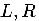
Natural numbers
Number of physical unique layers () and number of recurrent iterations in depth
/ loops ()3
Natural numbers
Number of query heads (), number of key-value heads ( in GQA/MQA) and the dimension of a single
head ()30
Vectors
Input vector at step and hidden state in layer
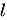
at step
Matrix or
vector
Fixed-size recurrent state (fast weights /
associative memory) in SSMs and linear attention25
Binary tensor operators
Element-wise Hadamard product () and outer / Kronecker product ()
Nonlinear activation functions
Logistic sigmoid and the function (Swish-1)
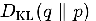
Functional
Kullback–Leibler divergence
Below are the strict definitions of the key architectural and
algorithmic mechanisms:
Reverse-Mode Automatic Differentiation (Reverse-Mode AD /
Backpropagation) — an algorithm for the exact computation of
the gradient of a scalar loss function
with respect to all nodes of an acyclic computational graph in time
proportional to one forward pass, by recursively propagating the adjoint
derivatives from output to input7.
Adaptive Computation Time (ACT / Early Exit Gate) —
a mechanism for dynamically allocating the number of recurrent
iterations to each token through a
learnable halting gate , which makes it
possible to spend more arithmetic operations on logically difficult
positions41.
Fast Weights and Test-Time Training (Fast Weights /
Test-Time Training, TTT) — the parameters of an inner
subnetwork or of the associative-memory matrix
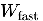
, which are updated dynamically at inference
time (through the Hebbian rule, the delta rule or a gradient-descent
step on a self-supervised loss) in order to compress a long context into
a fixed amount of memory44.
Vector, Residual and Finite Scalar Quantization (VQ / RVQ /
FSQ) — discretization of a continuous latent vector by searching for the nearest codebook entry
(VQ), by cascaded quantization of residuals over
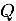
codebooks (Residual VQ in SoundStream,
EnCodec, Mimi), or by direct coordinate-wise rounding on a bounded
integer lattice without a learnable codebook (Finite Scalar Quantization
in CosyVoice 3)46.
Grouped-Query Attention (GQA) and Multi-Query Attention
(MQA) — sharing a single set of key and value projections among all
query heads (, MQA) or within groups (,
GQA) to cut the KV-cache size and the traffic from HBM video memory
during decoding by a large factor39.
Multi-Head Latent Attention (MLA) — a mechanism
that projects the hidden state into a single low-rank vector (
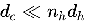
) with a
separate small-dimensional branch for Decoupled RoPE positional
encoding; at inference only the compressed latent is cached, reducing
KV-cache memory by 93.3% at the model level (up to 98.24% per layer
relative to 128-head MHA)50.
Group Relative Policy Optimization (GRPO) — a
reinforcement-learning algorithm without a separate critic network
(value model), which estimates the advantage
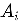
by standardizing rewards within a group of
generated trajectories for a single
prompt53.
The delta rule in linear attention (DeltaNet / Gated
DeltaNet / KDA) — replacement of the additive write with a generalized Householder reflection
with decay , which erases the old value
stored under the key before writing the
new value (where
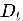
is the scalar in GDN or the diagonal matrix in KDA)24.
Discrete text diffusion (Masked / Uniform Diffusion Language
Models, dLLM / MDM / UDLM) — non-autoregressive language models
based on a bidirectional transformer that recover tokens in parallel
from [MASK] masks (MDM: MDLM, LLaDA, Dream, Mercury) or from random
vocabulary substitutions (UDLM) by minimizing a weighted variational
likelihood bound35.
Representation Alignment (REPA / JEPA) — a family
of training principles: in understanding the visual world (I-JEPA,
V-JEPA), the network predicts the hidden representations of masked
blocks in the space of an EMA encoder without generating pixels; in
diffusion generation (REPA), the intermediate layers of a DiT are
aligned, by cosine similarity, with the features of a pretrained visual
teacher (for example, DINOv2)36.
Manifold-Constrained Hyper-Connections (mHC) — an
expansion of the transformer's residual stream from a single vector to parallel
lanes , where the lane-mixing matrix is
projected by the Sinkhorn–Knopp algorithm onto the Birkhoff polytope of
doubly stochastic matrices for non-expansive signal propagation () at arbitrary depth2.
Structured State Space Models (SSM / S4 / Mamba) —
linear dynamical systems , discretized
with step ; in selective SSMs
(Mamba-1/2/3) the parameters depend on
the input, which provides parallel training linear in and constant memory per step at inference32.
Multi-Token Prediction (MTP) — a training and
self-speculative decoding architecture in which, on top of a shared
model trunk, cascaded heads predict several future text tokens or the
residual levels of RVQ audio codebooks29.
Orthogonalized Matrix Momentum (Muon / MuonClip) —
an optimizer for two-dimensional matrix layers that replaces
coordinate-wise gradient scaling with an approximate orthogonalization
of the momentum matrix by Newton–Schulz
polynomial iterations (
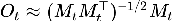
), flattening the
singular-value spectrum of the update step65.
Residual connections with attention over depth (Attention
Residuals, AttnRes) — replacement of the fixed summation of the
outputs of all preceding layers with learnable softmax attention along
the depth axis (over the preceding blocks), which eliminates the
dilution of the feature norm in deep Pre-LN transformers34.
Full-Duplex Speech-to-Speech models (Full-Duplex
Speech-to-Speech, STS) — architectures (Moshi, PersonaPlex,
NemotronLabs VoiceChat) that synchronously process the incoming stream
of the user's audio tokens and generate parallel streams of an "inner
monologue" (text) and of response audio tokens, without segmentation
into turn-taking utterances, which supports interruptions and
backchannels with a latency of 160–205 ms68.
Rotary Position Embedding (RoPE / p-RoPE / 3D-RoPE /
TMRoPE) — encoding of relative position by rotating pairs of
query coordinates and key coordinates
by angles , so that the dot product depends only on the offset ; it generalizes to rotating a fraction of
the subspace (-RoPE) and to the
spatio-temporal axes of video and audio (3D-RoPE, TMRoPE)71.
Sparse Mixture-of-Experts (Sparse Mixture-of-Experts, MoE /
LatentMoE) — replacement of a dense FFN layer with a pool of
expert subnetworks, with experts activated per token; in
LatentMoE the input vector is first compressed into a
low-dimensional latent to reduce weight-read traffic and inter-server
All-to-All transfers27.
Hardware-aligned sparse attention (NSA / DSA / CSA)
— learnable sparse-attention mechanisms (Native Sparse Attention,
DeepSeek Sparse Attention, Compressed Sparse Attention) that use
hierarchical block compression or a lightweight indexer (lightning
indexer) to select the top- keys per
query, reducing the complexity of attention from to 31.
Recurrent-depth (looped) transformer (Looped /
Recurrent-Depth Transformer, PLT) — an architecture with weight
sharing across depth that passes the hidden state through a shared block
of layers times (Huginn, Ouro); in the
Parallel Loop Transformer (PLT), the sequential
iterations of neighboring tokens are pipelined within one parallel pass
(Cross-Loop Parallelism)3.
Rectified flows and Flow Matching (Flow Matching / Rectified
Flow) — training of a generative ODE by direct regression of a velocity field
along the linear interpolation between
data and Gaussian noise, which enables fast deterministic generation in
a small number of Euler steps5.
Token-and-Duration Transducer (TDT) — an extension
of the streaming ASR decoder RNN-T that jointly predicts a subword token
and the number of acoustic frames that
it covers, in order to skip stationary segments and pauses at
inference79.
1958
Domains: Foundations
The starting point of parametric training of artificial neural networks
was the publication by Frank Rosenblatt of "The Perceptron: A
Probabilistic Model for Information Storage and Organization in the
Brain" in the journal Psychological Review (No. 1) and the
hardware implementation of the Mark I Perceptron machine at the Cornell
Aeronautical Laboratory (previously simulated on an IBM 704
mainframe)82. Unlike the fixed logic elements of McCulloch and Pitts
(1943), Rosenblatt's perceptron separated a sensory retina (the -unit), a layer of random nonlinear
associative projections (the -unit,
features ) and a trainable threshold
adder (the -unit) defining a separating
hyperplane:
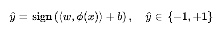
The error-correction rule updated the weights only on misclassified samples , where , by
the formula 83. In the same year of
1958, John von Neumann's monograph "The Computer and the Brain"
(No. 2) appeared posthumously; it was the first to contrast the
massively parallel, low-frequency architecture of the brain's synaptic
memory with the sequential bottleneck of digital computers. Although
Rosenblatt already considered multilayer schemes in 1958, he lacked a
differentiable credit-assignment algorithm for hidden layers7.
1959
Domains: Encoder Foundations
In 1959 three conceptual pillars of future deep networks emerged: the
neurophysiological hierarchy of visual filters, parallel cascaded
recognition, and the bootstrapping of an evaluation function over time.
David Hubel and Torsten Wiesel, in a paper in The Journal of
Physiology (No. 3), discovered in the cat striate cortex local
orientation-selective receptive fields, which became the biological
prototype of convolutional kernels85. At the same time, Oliver Selfridge
presented at the Teddington symposium the Pandemonium
architecture (No. 4) — a parallel hierarchy of "feature demons",
"cognitive demons" that weight them, and a top "decision demon" that
selects the maximum response 87. In the
same year, Arthur Samuel published in the IBM Journal of Research
and Development his famous work on a self-learning checkers player
(No. 5), establishing the term machine learning and introducing
an update of the weights of an evaluation polynomial by the difference
between the evaluations of the current and the following positions — a
direct prototype of the temporal-difference (TD learning) method and of
the critic in reinforcement learning.
1960
Domains: Foundations Optimization
The transition from the discontinuous threshold rule of the perceptron
to smooth gradient optimization was made by Bernard Widrow and Marcian
Hoff, who presented the adaptive linear node ADALINE
and the least-mean-squares algorithm LMS (Widrow–Hoff /
Delta Rule, No. 6)88. The key novelty of ADALINE was that the error was
computed from the continuous linear output before the binary threshold
quantizer. Stochastic gradient descent on the instantaneous squared
error gave the classical delta
rule:
It is precisely this equation — rewritten for a matrix associative
memory in the form — that forms the
foundation of the modern linear transformers DeltaNet
and Gated DeltaNet (2024–2026)25. In the same year of
1960, Henry Kelley published in the ARS Journal the paper
"Gradient Theory of Optimal Flight Paths" (No. 7), deriving the
continuous adjoint-equation method for backpropagating derivatives of a
cost functional along the trajectory of a dynamical system — an
analytical precursor of both backpropagation and the Neural ODE7.
1961
Domains: Loops Memory Foundations
In 1961 the German cyberneticist Karl Steinbuch published in the first
volume of the journal Kybernetik the paper "Die
Lernmatrix" ("The Learning Matrix", No. 8) — the first matrix
architecture of heteroassociative memory on a crossbar lattice of
conductors91. In Steinbuch's matrix, the input feature vector
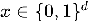
and the class code were bound by a local Hebbian-type rule , and retrieval was performed by a parallel
matrix–vector multiplication with
competitive selection of the maximum. Algebraically, the "learning
matrix" laid down the prototype of modern linear key–value associative
memories . In the same year, Eduardo
Caianiello, in the Journal of Theoretical Biology (No. 9),
divided neural-network dynamics into two coupled time scales: fast
"neuronic equations" for the relaxation of activations and slow,
adiabatic "mnemonic equations" for the plasticity of synaptic
weights.
1962
Domains: Foundations Encoder
In April 1962 the mathematician Albert Novikoff presented a rigorous and
concise proof of the perceptron convergence theorem
(No. 10; related bounds were published in the same year by H. D. Block,
No. 13)92. Novikoff showed that if a sample with bounded input norm is linearly separable by a unit vector () with a
positive margin , then the perceptron
algorithm started from the zero vector
terminates after at most updates. On
every mistake, the dot product with the oracle increases by at least
(
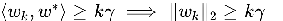
),
whereas the error condition bounds the
growth of the squared norm from above by (), from
which follows a bound that is completely independent of the dimension of
the space 83:
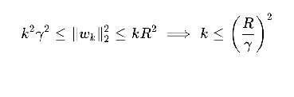
In the same year there appeared Frank Rosenblatt's summary monograph
"Principles of Neurodynamics" (No. 11), Bernard Widrow's
piecewise-linear architecture MADALINE (No. 12) and the
classic paper of Hubel and Wiesel (No. 14), which described the
alternation of simple cells (local linear edge detectors) and
complex cells (spatially invariant pooling) in the visual
cortex87.
1963
Domains: Foundations Optimization
Developing the geometry of the separating margin , Vladimir Vapnik and Alexander Lerner
published in the journal Avtomatika i Telemekhanika
(Automation and Remote Control) the paper "Pattern
Recognition Using Generalized Portraits" (No. 15)97. Instead of
searching for an arbitrary separating hyperplane, the authors formulated
a quadratic-optimization problem of finding the unique
maximum-margin hyperplane (a linear prototype of the
support vector method, SVM), whose normal vector is expanded only in
terms of the extreme support vectors of the sample . Thus the principle of controlling the
weight norm as a measure of classifier
capacity entered learning theory. In the same year Steinbuch and Piske
published in IEEE Transactions on Electronic Computers an
analysis of continuous memory matrices under noisy signals (No. 16), and
Stuart Dreyfus simplified the derivation of the chain rule of adjoint
multipliers through dynamic programming (No. 17)7.
1964
Domains: Optimization Foundations
In 1964 three mathematical tools were created that work directly in
modern deep-learning frameworks. Boris Teodorovich Polyak published in
the Zhurnal Vychislitel'noi Matematiki i Matematicheskoi Fiziki
(USSR Computational Mathematics and Mathematical Physics) the
inertial "heavy ball" method (Heavy-Ball Momentum) (No.
18) for accelerating gradient descent in ill-conditioned ravine-like
problems100:
The inertial term suppresses the
transverse oscillations of the gradient and reduces the effective
condition number of a quadratic problem from to . At
the same time, Mark Aizerman, Emmanuil Braverman and Lev Rozonoer
introduced in Avtomatika i Telemekhanika the method of
potential functions (No. 19) — a rigorous justification of the
kernel trick, directly
related to the future kernel factorization of linear attention20. In the
same year, Robert Wengert presented in Communications of the
ACM (No. 20) a program algorithm of forward-mode automatic
differentiation (Forward-Mode AD) over a list of elementary
operations.
1965
Domains: Foundations Optimization
In 1965 Alexey Grigorievich Ivakhnenko and Valentin Grigorievich Lapa
published the monograph "Cybernetic Predicting Devices" (No.
21), describing the first working algorithms for layer-by-layer training
of deep multilayer perceptrons with an arbitrary number
of hidden layers7. Each node of the network computed a Kolmogorov–Gabor
quadratic polynomial with multiplicative products of the inputs ( — an algebraic precursor of the gating
blocks GLU and SwiGLU), the coefficients were found by the least-squares
method, and a validation sample screened out overfitted neurons before
the next layer was built7.
In parallel, Thomas Cover proved in IEEE Transactions on Electronic
Computers the fundamental Cover's theorem on the capacity
of linear separation (No. 22): the number of linearly
realizable binary partitions of
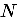
points
in general position in equals , which makes up exactly half of all dichotomies when and tends exponentially to zero when . This geometric fact explains the need for
wide feature projections in the hidden layers of MLPs and MoEs. The year
was complemented by Nils Nilsson's classic book "Learning
Machines" (No. 23)88 and the Ho–Kashyap gradient method for systems
of linear inequalities (No. 24).
1966
Domains: Optimization Foundations
In 1966 Yakov Zalmanovich Tsypkin, in his work "Adaptation, Learning
and Self-Learning in Automatic Systems" (Avtomatika i
Telemekhanika, No. 25), reduced the scattered rules of perceptrons,
ADALINE and filtering to a single variational problem of
minimizing the expected value of a loss function (the average
risk) by means of
Robbins–Monro recurrent stochastic approximation 105. This formulation became the standard
language of modern neural-network optimization theory. In the same year
Emmanuil Braverman extended the method of potential functions to the
problem of self-learning and unsupervised clustering (No. 26)20, and
Lawrence Fogel, Alvin Owens and Michael Walsh published the monograph
"Artificial Intelligence through Simulated Evolution" (No. 27),
which opened the direction of gradient-free evolutionary search.
1967
Domains: Foundations Optimization
In June 1967 Shun'ichi Amari published in IEEE Transactions on
Electronic Computers the paper "A Theory of Adaptive Pattern
Classifiers" (No. 28) — the first work in history in which
end-to-end stochastic gradient descent (end-to-end SGD)
was applied to train a multilayer neural network with nonlinear hidden
layers on linearly non-separable distributions7. Replacing the threshold
step with smooth differentiable activation functions, Amari derived the
chain rule for correcting the hidden weights and experimentally trained a 5-layer
classifier nineteen years before the 1986 publication in
Nature7.
In the same year two works of enormous prospective importance appeared:
Thomas Cover and Peter Hart proved an asymptotic bound on the error of
the nearest-neighbor rule (, No. 29),
laying the theoretical basis of vector search and RAG systems, while
Richard Sinkhorn and Paul Knopp published in the Pacific Journal of
Mathematics a theorem and an iterative algorithm for alternately
normalizing the rows and columns of a positive matrix to doubly
stochastic form (No. 30) — the very Sinkhorn–Knopp
operator that at the turn of 2025–2026 provided the stability of the
multi-lane mHC hyper-connections in DeepSeek
architectures2.
1968
Domains: Foundations Loops
In 1968 Alexey Ivakhnenko formalized the Group Method of Data
Handling (GMDH) in the journal Avtomatika (No. 31)104,
systematizing the automatic growth of deep polynomial networks with
regular selection of the best neurons and early stopping of the depth on
an independent validation set. In parallel, Stephen Grossberg published
in PNAS the nonlinear associative-learning model
Outstar and a system of differential equations for
short-term (STM) and long-term (LTM) memory (No. 32)109:
proving the unconditional convergence of the synaptic weights to the
spatial proportions of the input pattern. In the same year Vladimir
Vapnik and Alexey Chervonenkis published in Doklady Akademii Nauk
SSSR (Proceedings of the USSR Academy of Sciences) a
theorem on the uniform convergence of empirical frequencies to
probabilities over a class of events, introducing a combinatorial
measure of the capacity of function families — the
Vapnik–Chervonenkis dimension (VC-dimension) (No.
33).
1969
Domains: Foundations Encoder Optimization
In 1969 Marvin Minsky and Seymour Papert issued the analytical monograph
"Perceptrons: An Introduction to Computational Geometry" (No.
34)7. Using group-invariance theory, the authors rigorously proved that
a single-layer perceptron with local features of bounded order cannot
realize the parity predicate (including the two-bit
XOR) or the topological connectedness predicate.
Although the authors noted that multilayer networks are free of this
limitation, the absence of an efficient algorithm for training hidden
layers that was widely known in the West caused a cooling of interest in
connectionism in the English-language academic community7.
However, in the same year 1969 two key elements of modern deep learning
were published. Arthur Bryson and Yu-Chi Ho, in the book "Applied
Optimal Control" (No. 35), wrote out explicit discrete formulas for
backpropagating Lagrange multipliers through multistage cascades 7. At the same time, Kunihiko Fukushima, in
the paper "Visual Feature Extraction by a Multilayered Network of
Analog Threshold Elements" (IEEE Transactions on Systems
Science and Cybernetics, No. 36)85, introduced a multilayer visual
network with analog half-wave rectifiers — historically the first use of the
ReLU activation function in multilayer neural
networks7.
1970
Domains: Foundations Optimization
In 1970 the Finnish mathematician Seppo Linnainmaa defended a master's
thesis at the University of Helsinki (No. 37)7, in which he for the
first time formulated and implemented in machine code a general
algorithm of reverse-mode automatic differentiation
(Reverse-Mode Automatic Differentiation) for arbitrary
computational graphs. If the computation of the scalar loss function
is decomposed into elementary nodes
(),
then the backward pass from to recursively accumulates the partial
derivatives:
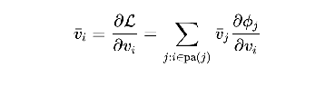
Computing the full gradient vector
with respect to an arbitrary number of parameters requires only a constant multiple of the
number of operations of one forward pass114. In the same year 1970,
Broyden, Fletcher, Goldfarb and Shanno independently derived the
second-order quasi-Newton method BFGS (No. 38), and
Ivakhnenko published in the international journal Automatica a
review of the heuristic self-organization of deep networks (No.
39)115.
1971
Domains: Foundations Memory
In October 1971 Alexey Ivakhnenko published in IEEE Transactions on
Systems, Man, and Cybernetics the paper "Polynomial Theory of
Complex Systems" (No. 40)115, describing in detail the construction
and training of an 8-layer deep feedforward network by
the GMDH method with regularized feature selection on a validation
sample7. This publication became one of the first widely cited examples
in the international literature of practical training of a deep
eight-layer architecture7.
In the same year David Marr published in the Philosophical
Transactions of the Royal Society B a mathematical model of the
hippocampus, "Simple Memory: A Theory for Archicortex" (No.
41)7. Marr showed that sparse coding of input vectors in a
high-dimensional space, combined with local Hebbian plasticity and an
adaptive inhibitory threshold, makes it possible to store a large number
of episodic associations in a single pass and to recover them without
error from partial cues — a principle underlying modern sparse modules
of external and parametric memory.
1972
Domains: Loops Memory
In November 1972 Shun'ichi Amari published in IEEE Transactions on
Computers the paper "Learning Patterns and Pattern Sequences by
Self-Organizing Nets of Threshold Elements" (No. 42), deriving, ten
years before Hopfield's publication, the stability equations of discrete
recurrent associative networks (the Amari–Hopfield
network) both for static attractors with a symmetric weight
matrix and for dynamic chains of sequences with an asymmetric
matrix7:
In the same year 1972, Teuvo Kohonen independently introduced
correlation matrix memories in IEEE Transactions on Computers
(No. 43)118, James Anderson described a linear-threshold interactive
memory in Mathematical Biosciences (No. 44), Kaoru Nakano built
the associative system Associatron (No. 45)7, and Hugh
Wilson and Jack Cowan derived in the Biophysical Journal a
nonlinear system of ODEs for coupled excitatory and inhibitory neural
populations (
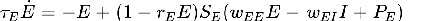
, No. 46), analytically
proving the connection between limit cycles of oscillations and
multistable memory hysteresis119.
1973
Domains: Encoder Loops
In 1973 Christoph von der Malsburg published in Kybernetik the
paper "Self-Organization of Orientation Sensitive Cells in the
Striate Cortex" (No. 47)115 — the first computer demonstration of
competitive learning of local feature detectors.
Combining short-range intracortical excitation, lateral inhibition and
the Hebbian rule with conservation of the -norm of the input synapses of each
neuron (), von der Malsburg
demonstrated the spontaneous formation of ordered maps of orientation
columns without a teacher.
At the same time, Stephen Grossberg published in Studies in Applied
Mathematics a rigorous analysis of shunting recurrent
networks with multiplicative saturation and divisive lateral
inhibition (No. 48)109: he proved that it is precisely the sigmoidal
transfer characteristic that suppresses small-amplitude background noise
and preserves the relative contrast of the pattern without saturation as
the overall brightness of the input grows arbitrarily — the theoretical
foundation of activation-normalization layers. Hugh Wilson and Jack
Cowan generalized their population dynamics to spatially continuous
neural fields of the cortex and thalamus (No. 49)124.
1974
Domains: Foundations Optimization Loops
In 1974 Paul Werbos defended at Harvard University his doctoral
dissertation "Beyond Regression: New Tools for Prediction and
Analysis in the Behavioral Sciences" (No. 50)7. Werbos formulated
the method of "dynamic feedback" — explicit formulas for the chain
backpropagation of derivatives of an objective function through
arbitrary multilayer networks with nonlinear nodes, preparing the direct
application of the method to neural networks in the early
1980s115.
In the same year the physicist William Little published in
Mathematical Biosciences the paper "The Existence of
Persistent States in the Brain" (No. 51)126, which established a
direct correspondence between the statistical physics of Ising
spin systems and stochastic recurrent neural networks.
Introducing an effective temperature of synaptic noise and a logistic firing probability of a
neuron , Little described long-term
memory as degenerate leading eigenstates of the Markov transition matrix
— the foundation of Boltzmann machines and thermodynamic generative
models.
1975
Domains: Encoder Memory Foundations
In 1975 Kunihiko Fukushima presented in Biological Cybernetics
the multilayer self-organizing network Cognitron (No.
52)86. In the Cognitron, local excitatory and inhibitory receptive
fields were combined with a shunting divisive ratio and competitive strengthening of the
synapses of only the most active neuron in a neighborhood; the network,
however, did not yet share weights across the whole plane and therefore
remained sensitive to shifts of the image129.
In parallel, three landmark works appeared in neighboring fields: James
Albus created the fast locality-hashing architecture of the cerebellar
controller CMAC with overlapping coarse receptive
fields (No. 53)130; David Sherrington and Scott Kirkpatrick introduced
in Physical Review Letters the solvable SK
spin-glass model with random sign-alternating couplings (No. 54)126, whose analytical replica
method became the basis for computing phase transitions and the capacity
of neural networks; and John Holland published the monograph
"Adaptation in Natural and Artificial Systems" (No. 55), which
laid the mathematics of genetic algorithms.
1976
Domains: Optimization Loops Foundations
In June 1976 Seppo Linnainmaa published in the international journal
BIT Numerical Mathematics the English-language paper
"Taylor Expansion of the Accumulated Rounding Error" (No.
56)23. Besides the complete first- and higher-order algorithms of
reverse differentiation on a computational graph, Linnainmaa was the
first to analyze the fundamental memory problem of the backward pass —
the need to store the intermediate states of all operations and ways of
reducing peak memory consumption — anticipating modern techniques of
selective recomputation of activations (activation / gradient
checkpointing, used, in particular, in training Ring Attention
and DeepSeek mHC2).
In the same year Stephen Grossberg, in a two-part work in Biological
Cybernetics (No. 57)126, formulated the
stability–plasticity dilemma (how to further train a
network on new classes without catastrophic destruction of previously
learned representations) and proposed a mechanism of resonant filtering
of bottom-up features by top-down expectations (Adaptive
Resonance Theory, ART), while David Willshaw and Christoph von
der Malsburg built a synaptic model of the self-organization of
continuous topographic projections of the retina (No. 58).
1977
Domains: Loops Memory Optimization
In 1977 James Anderson, Jack Silverstein, Stephen Ritz and Randall Jones
published in Psychological Review the nonlinear recurrent model
of categorical memory Brain-State-in-a-Box (BSB) (No.
59)122, which confines the positive-feedback trajectory within the walls
of a unit hypercube :
The symmetric Hebbian coupling matrix
amplifies projections along the principal eigenvectors until the state
settles at a vertex of the hypercube corresponding to a pure discrete
memory prototype. In the same year Shun'ichi Amari published the
canonical mathematical theory of localized excitations ("bumps" of
working memory) in continuous neural fields with lateral inhibition (No.
60)124, Teuvo Kohonen issued the monograph "Associative Memory"
(No. 61), and Arthur Dempster, Nan Laird and Donald Rubin formalized in
JRSS-B the EM algorithm for likelihood
maximization in models with latent variables through the Jensen
variational bound (No. 62) — the analytical foundation of training MoE
and variational autoencoders.
1978
Domains: Memory Loops Foundations
In 1978 William Little and Gordon Shaw published in Mathematical
Biosciences the work "Analytic Study of the Memory Storage
Capacity of a Neural Network" (No. 63)127. Solving analytically a
linearized model of a stochastic neural network with plastic
connections, the authors rigorously showed that the information capacity
of a distributed neural memory scales in proportion to the
number of synapses,
and not to the number of neurons 127.
In modern engineering, it is precisely this law that explains why
storing world facts requires scaling the total number of weight
parameters up to hundreds of billions and trillions in sparse MoE
architectures, even when a small active subset of neurons suffices to
process a single token.
In the same year Gideon Schwarz introduced in the Annals of
Statistics the Bayesian information criterion BIC
for selecting the dimension of parametric models (No. 64), Stephen
Grossberg presented a theory of hierarchical chunking of sequences in
working memory (No. 65)109, and Kunihiko Fukushima improved the
mean-square-type synaptic rule for deep unsupervised self-learning (No.
66)129.
1979
Domains: Encoder Foundations
In October 1979 Kunihiko Fukushima published in the Japanese journal
Transactions of the IECE of Japan (vol. J62-A, No. 10, pp.
658–665) the first paper on the Neocognitron
architecture — the first deep convolutional neural network invariant to
spatial shifts of input patterns (No. 67)7. Inspired by the discovery of
Hubel and Wiesel, Fukushima organized the network as a multistage
alternation of pairs of layers of two types: planes of -cells, in which all the
neurons of one plane have identically equal shared weights
(weight sharing) and extract a local feature at every point of a
two-dimensional field (the operation of 2D convolution with a ReLU
rectifier), and planes of -cells, which aggregate the
responses of the local neighborhood of -cells with resolution reduction (the
operation of spatial pooling), owing to which the tolerable shift error
accumulates smoothly from layer to layer without loss of the mutual
geometry of the details87. In the same year Leon Cooper, F. Liberman and
Erkki Oja published in Biological Cybernetics a synaptic model
of the formation of neuron selectivity in the visual cortex (No.
68).
1980
Domains: Encoder Optimization
In April 1980 the classic English-language publication by Kunihiko
Fukushima, "Neocognitron: A Self-Organizing Neural Network Model for
a Mechanism of Pattern Recognition Unaffected by Shift in Position"
(No. 69)86, appeared in Biological Cybernetics (vol. 36, pp.
193–202), making the convolution–pooling hierarchy known to the whole
world community. The response of an -cell at position
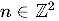
of the feature plane of layer ,
under divisive inhibition by the root-mean-square activity in a local window , was given by the equation:
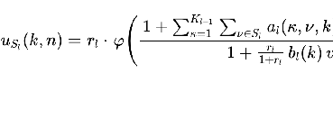
Thus the entire structural topology of deep visual networks —
multichannel 2D convolutions with weight sharing, rectification
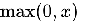
, local root-mean-square normalization and
spatial pooling — was fully constructed, awaiting the replacement of
local self-organization rules by global gradient descent87. In the same
year Stephen Grossberg published in Psychological Review a
summarizing paper on resonant cognitive codes (No. 70), and Walter Baur
and Volker Strassen proved the famous algebraic-complexity theorem (the
Baur–Strassen Theorem, No. 71): computing the gradient of any rational
function of many variables on an arithmetic circuit requires at most
five times the number of operations needed to compute the function
itself114.
1981
Domains: Memory Loops Optimization
In 1981 Geoffrey Hinton and James Anderson issued the programmatic
collective monograph "Parallel Models of Associative Memory"
(No. 72)140, which justified the transition from symbolic localist nodes
("one concept — one cell") to dense distributed vector
representations (distributed representations), in which each
concept is encoded by an activity pattern of many elements, providing
automatic generalization by similarity of microfeatures. In the same
year James McClelland and David Rumelhart presented in Psychological
Review the interactive activation model of letter
and word perception with bidirectional inter-layer feedback (No. 73),
and Andrew Barto, Richard Sutton and Peter Brouwer published in
Biological Cybernetics the model of an associative
search network (No. 74), uniting stochastic generation of
actions with learning from a scalar reinforcement signal — a direct
predecessor of gradient methods of reinforcement learning.
1982
Domains: Loops Memory Encoder Foundations
In April 1982 John Hopfield published in PNAS the famous paper
"Neural Networks and Physical Systems with Emergent Collective
Computational Abilities" (No. 75)124. Assigning to a binary
recurrent network with a symmetric
weight matrix () an explicit physical Lyapunov
energy function:
Hopfield proved the monotonic non-increase of the energy () under asynchronous threshold updates and convergence to local minima —
content-addressable memory attractors (the capacity of the classical
binary version is about uncorrelated
patterns, whereas the modern exponential Hopfield networks of 2016–2020
have exponential capacity and are equivalent to the softmax attention of
the transformer142).
In the same year 1982 Paul Werbos at the IFIP conference for the first
time explicitly published the application of backpropagation directly to
artificial neural networks (No. 76)7; Teuvo Kohonen created the
topographic self-organizing feature maps (SOM) (No.
77); Erkki Oja derived the local normalized plasticity rule (Oja's rule, No. 78),
which extracts the principal eigenvector of the data covariance matrix
(neural PCA); Bienenstock, Cooper and Munro proposed the nonlinear
synaptic-modification rule with a sliding threshold,
BCM (No. 79); and David Marr's fundamental book
"Vision" (No. 80) appeared posthumously.
1983
Domains: Optimization Loops
In 1983 Yurii Evgenievich Nesterov published in Doklady Akademii
Nauk SSSR (Soviet Mathematics Doklady, 27(2), 372–376) an
optimal method for minimizing smooth convex functions with convergence
rate
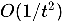
— the Nesterov
accelerated gradient method (NAG) (No. 81)143:
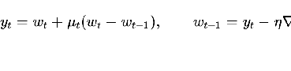
Computing the gradient at the look-ahead inertial point provided correction of the trajectory at
sharp turns of the loss landscape and became standard in modern
modifications of SGD, in NAdam and in the orthogonalized momentum of
Muon. In the May issue of Science, Scott Kirkpatrick, Charles
Gelatt and Mario Vecchi presented stochastic global optimization by the
Simulated Annealing method with a Metropolis transition
probability (No. 82)144, and Andrew
Barto, Richard Sutton and Charles Anderson published in IEEE
TSMC the neural Actor–Critic architecture on the
pole-balancing (inverted pendulum) task (No. 83)144.
1984
Domains: Foundations Loops Diffusion
In November 1984 Leslie Valiant published in Communications of the
ACM the paper "A Theory of the Learnable" (No. 84)146,
which laid the rigorous computational-statistical foundation of
Probably Approximately Correct learning (PAC Learning):
a formalization of the sample and computational complexity of achieving
a generalization error with confidence
. In the same year John Hopfield
generalized his model to continuous dynamical circuits with a smooth
monotone sigmoid and a continuous
Lyapunov functional (No. 85), the brothers Stuart and Donald Geman
introduced in IEEE TPAMIGibbs Sampling on
Markov random fields with the Gibbs distribution for Bayesian restoration of noisy images
(No. 86), and Teuvo Kohonen issued the expanded monograph
"Self-Organization and Associative Memory" (No. 87).
1985
Domains: Foundations Memory Diffusion
In 1985 David Ackley, Geoffrey Hinton and Terrence Sejnowski published
in Cognitive Science the training algorithm for
Boltzmann machines (No. 88)146 — stochastic
energy-based networks with hidden variables, modeling the distribution of visible
vectors by marginalization . The gradient of the Kullback–Leibler
divergence with respect to a symmetric weight reduced to a difference of pairwise
correlations in two thermodynamic regimes:
Although long MCMC annealing limited the size of fully connected
Boltzmann machines, this was the first theoretically rigorous
demonstration of learning deep distributed representations in generative
networks150. In the same year 1985 Yann LeCun at the Cognitiva
85 conference in Paris (No. 89) and David Parker in an MIT report,
"Learning-Logic" (No. 90), independently published gradient
backpropagation schemes for multilayer networks, and David Rumelhart and
David Zipser systematized competitive feature clustering (No. 91).
1986
Domains: Foundations Loops Optimization
In October 1986 David Rumelhart, Geoffrey Hinton and Ronald Williams
published in Nature the famous paper "Learning
Representations by Back-Propagating Errors" (No. 92),
simultaneously with the appearance of the two-volume fundamental work of
the PDP group, "Parallel Distributed Processing" (MIT Press,
No. 93)7. The authors showed that a multilayer perceptron (MLP) with
smooth activations , trained by
recursive propagation of the sensitivity vector:
constructs nontrivial semantic representations in the intermediate
layers and solves nonlinearly separable predicates151. In the same PDP
edition Paul Smolensky introduced the bipartite energy network without
intra-layer connections, the Harmonium — mathematically
equivalent to the restricted Boltzmann machine (RBM)
with exact one-step conditional inference (No. 94); Michael Jordan proposed a
recurrent network with feedback from the output into a context state
vector
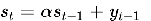
(Jordan RNN,
No. 95); and Terrence Sejnowski and Charles Rosenberg demonstrated the
phonemic transcription synthesizer of English text
NETtalk (No. 96).
1987
Domains: STT Loops Encoder
In 1987 Alexander Waibel, Toshiyuki Hanazawa, Geoffrey Hinton, Kiyohiro
Shikano and Kevin Lang created the Time-Delay Neural Network
(TDNN) for recognizing speech phonemes (No. 97)87 — the first
one-dimensional convolutional network along the time axis with shared
weights, invariant to shifts of acoustic formants and trainable by
backpropagation. In the same year Geoffrey Hinton and David Plaut
published the work "Using Fast Weights to Deblur Old Memories"
(No. 98)45, supplying each connection with a pair consisting of a slow
long-term weight and a rapidly decaying contextual weight (Fast
Weights) — a direct conceptual source of modern layers of
linear attention and test-time training (TTT and Titans). In parallel
Dana Ballard at the AAAI conference proposed modular layer-wise
pretraining of deep hierarchies with a stack of
autoencoders (No. 99), Gail Carpenter and Stephen Grossberg
formalized the adaptive resonance architecture ART 1
(No. 100)110, and Fernando Pineda derived in Physical Review
Letters continuous backpropagation of gradients for fixed points of
recurrent attractors
(Recurrent Backpropagation, No. 101) — an analytical
predecessor of the equilibrium networks DEQ.
1988
Domains: Encoder Optimization Loops
In 1988 Wei Zhang and coauthors published the first
two-dimensional shift-invariant convolutional neural network
(Shift-Invariant 2D CNN) for character recognition, trained
directly by the backpropagation method (No. 102)20. David Broomhead and
David Lowe introduced in Complex Systemsradial basis
function networks (RBF Networks) (No. 103). In learning theory, Richard
Sutton published in the journal Machine Learning the
fundamental work on temporal-difference learning TD() (No. 104)152, which updates the
predictor's parameters by the Bellman residual before the end of the episode. At the same
time Hervé Bourlard and Yves Kamp proved that a linear autoencoder with
a narrow bottleneck of dimension
learns an orthogonal projector onto the principal singular subspaces of
the SVD (No. 105), and Bart Kosko introduced the bidirectional
heteroassociative memory BAM (No. 106).
1989
Domains: Encoder Foundations Optimization
Loops
In 1989 Yann LeCun, Bernhard Boser, John Denker, Donnie Henderson,
Richard Howard, Wayne Hubbard and Lawrence Jackel published in
Neural Computation the paper "Backpropagation Applied to
Handwritten Zip Code Recognition" (No. 107)87, training a deep
convolutional network with shared 5×5 filters and subsampling (stride 2)
directly on normalized pixels of handwritten USPS zip codes and
demonstrating a sharp improvement in generalization owing to the spatial
sharing of weights. In the same year George Cybenko (No. 108) and,
independently, Kurt Hornik, Maxwell Stinchcombe and Halbert White (No.
109) proved the universal approximation theorem for
continuous functions on compact sets by two-layer perceptrons with a
non-polynomial activation. The year was also marked by the online
training algorithm for recurrent networks RTRL by
Ronald Williams and David Zipser (No. 110), the creation of
Q-learning in the dissertation of Christopher Watkins
(No. 111), the limited-memory method L-BFGS by Dong Liu
and Jorge Nocedal (No. 112)153 and the probabilistic interpretation of
the Softmax function by John Bridle (No. 113).
1990
Domains: Loops Optimization Foundations
In 1990 Jeffrey Elman published in Cognitive Science the paper
"Finding Structure in Time" (No. 114)154, which made the
simple recurrent network (Simple RNN / Elman Network) the basic tool for sequence modeling
and showed the spontaneous emergence of syntactic-semantic clusters in
the hidden space when predicting the next word. Paul Werbos in the
Proceedings of the IEEE fixed the general formulation of
backpropagation through time (BPTT) by step-by-step
unrolling of the graph (No. 115). At the NIPS conference Yann LeCun,
John Denker and Sara Solla presented the method of second-order sparse
weight pruning Optimal Brain Damage (OBD) based on the
diagonal of the Hessian (No. 116) — a
direct predecessor of modern LLM compression algorithms. In parallel
Jürgen Schmidhuber proposed a minimax game of two networks within
adversarial artificial curiosity (No. 117)7, and Lars
Hansen and Peter Salamon justified the reduction of error variance in
neural-network ensembles (No. 118).
1991
Domains: MoE Loops Attention/LLM Foundations
In 1991 three fundamental mechanisms were laid down that determine the
architecture of the flagship models of 2024–2027. Robert Jacobs, Michael
Jordan, Steven Nowlan and Geoffrey Hinton published in Neural
Computation the paper "Adaptive Mixtures of Local Experts"
(the first MoE, No. 119)156. Replacing the averaging of
squared error with maximization of the log-likelihood of a Gaussian
mixture governed by a gating network
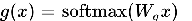
:
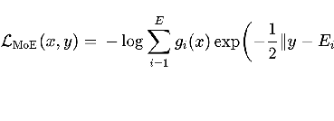
the authors achieved competitive specialization of the experts on different regions of the input space,
since the gradient is received predominantly by the expert with the
largest posterior responsibility for the example.
In June of the same year 1991 Sepp Hochreiter defended, under the
supervision of Jürgen Schmidhuber, a diploma thesis (No. 120)7, giving
for the first time a rigorous analysis of the vanishing and
exploding of gradients in deep and recurrent networks through
the product of Jacobians . And in the
spring of 1991 Schmidhuber proposed the Fast Weight
Programmers architecture (No. 121; journal publication 1992)7,
in which a slow network dynamically generates key and value vectors for
additive overwriting of the fast-weight matrix and for readout — a construction mathematically isomorphic
to unnormalized linear self-attention22. The year was completed by Mark
Kramer's five-layer nonlinear autoencoders (No. 122) and the classic
textbook on the statistical mechanics of neural networks by Hertz, Krogh
and Palmer (No. 123).
1992
Domains: Optimization Loops Foundations
In 1992 Ronald Williams published in Machine Learning the
REINFORCE policy-gradient estimator with a subtracted
baseline for variance reduction (No.
124):
which became the direct basis for the optimization of reasoning language
models by the PPO and GRPO methods53. At the same time Jürgen
Schmidhuber introduced in Neural Computation the neural
history compressor (No. 125)22 — hierarchical self-supervised
pretraining of RNNs that passes to the upper level only unpredictable
("surprising") tokens, followed by compression ("distillation") of a
deep teacher into a compact student network7. Boris Polyak and Anatoli
Juditsky proved the asymptotic optimality of averaging the SGD
weight trajectory (No. 126) —
the theoretical basis of EMA targets in DINO, JEPA and diffusion; Anders
Krogh and John Hertz justified regularization by weight decay
(Weight Decay, No. 127); and Boser, Guyon and Vapnik
combined the hyperplane margin with the kernel trick at COLT (No.
128).
1993
Domains: Encoder Foundations Optimization
In 1993 Jane Bromley, Isabelle Guyon, Yann LeCun and coauthors presented
at NIPS Siamese neural networks (Siamese Networks) (No.
129): two identical convolutional towers with shared weights map a pair
of inputs into a common metric space of cosine proximity — the paradigm
underlying all modern contrastive encoders (CLIP, SigLIP, dense
retrieval). At the COLT conference Geoffrey Hinton and Drew van Camp
formulated the principle of minimum description length of weights
through minimization of the variational free energy (variational Bayesian inference in
neural networks, No. 130), which anticipated the ELBO
functional. In the same year Andrew Barron proved that the approximation
rate of a two-layer network is
independent of the dimension of the space for functions with bounded Fourier spectral
norm (No. 131), and Babak Hassibi and David Stork generalized Hessian
pruning to the full non-diagonal Optimal Brain Surgeon
(OBS) (No. 132) — the mathematical basis of modern LLM weight
quantizers (GPTQ).
1994
Domains: Loops MoE Optimization
In 1994 Yoshua Bengio, Patrice Simard and Paolo Frasconi published in
IEEE Transactions on Neural Networks the rigorous theorem
"Learning Long-Term Dependencies with Gradient Descent is
Difficult" (No. 133), proving a fundamental conflict of nonlinear
dynamical systems: noise-robust storage of a bit in a hyperbolic
attractor requires Jacobian eigenvalues , which automatically causes an exponential
decay of the error gradient over time. In the same year Michael Jordan
and Robert Jacobs generalized the mixture of experts to the
tree-structured hierarchical mixture of experts (HME)
with fast EM training (No. 134), Barak Pearlmutter derived the
differential operator for exact
Hessian–vector multiplication in
operations without storing the matrix of second derivatives (No. 135),
and the first edition of Simon Haykin's fundamental course "Neural
Networks: A Comprehensive Foundation" (No. 136) appeared.
1995
Domains: Foundations Diffusion Encoder
In May 1995 Geoffrey Hinton, Peter Dayan, Brendan Frey and Radford Neal
published in Science the architecture of the Helmholtz
machine and the two-phase Wake–Sleep algorithm
(No. 137), pairing a directed generative model with a fast recognition inference network
— a direct structural predecessor of
the variational autoencoder. Anthony Bell and Terrence Sejnowski created
the blind signal separation algorithm InfoMax ICA by
maximizing the entropy of a nonlinear output (No. 138); Corinna Cortes
and Vladimir Vapnik introduced the soft-margin classifier
Support-Vector Networks (No. 139)149; Yann LeCun and
Yoshua Bengio systematized 1D/2D convolutional architectures for speech
and images (No. 140); and Christopher Bishop issued the classic
monograph "Neural Networks for Pattern Recognition" (Oxford
University Press, No. 141)88, which established the Bayesian and
probabilistic treatment of loss functions and regularization.
1996
Domains: Encoder Foundations Loops
In June 1996 Bruno Olshausen and David Field showed in the journal
Nature ("Emergence of Simple-Cell Receptive Field
Properties by Learning a Sparse Code for Natural Images", No. 142)
that minimizing the squared reconstruction error of natural images with
an overcomplete dictionary and an -sparsity penalty spontaneously forms localized oriented
Gabor wavelets — the mathematical basis of both sparse coding and the
modern Sparse Autoencoders (SAE) for LLM interpretability. In the same
year Radford Neal in the monograph "Bayesian Learning for Neural
Networks" (No. 143) proved the convergence of randomly initialized
neural networks of infinite width () to
Gaussian processes (NNGP), Christoph Goller and Andreas
Küchler introduced backpropagation through acyclic graphs and syntax
trees (No. 144), and Brian Ripley's book "Pattern Recognition and
Neural Networks" (No. 145) appeared.
1997
Domains: Loops Memory Optimization
In November 1997 Sepp Hochreiter and Jürgen Schmidhuber published in
Neural Computation the Long Short-Term Memory
(LSTM) architecture (No. 146)7. To overcome vanishing
gradients, the authors replaced the contracting nonlinear state
transformation with a linear Constant Error Carousel
(CEC) with a unit Jacobian
over time, protecting writing and reading with multiplicative input
(
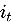
) and output () gates:
In the same year 1997 Mike Schuster and Kuldip Paliwal created in
IEEE TSPbidirectional recurrent networks
(BiRNN) (No. 147), combining forward and backward temporal
unrollings for full contextual encoding; Hochreiter and Schmidhuber
introduced the criterion of seeking flat minima (Flat
Minima) of low Hessian curvature for improving generalization
(No. 148); and Yoav Freund and Robert Schapire published the weighted
boosting algorithm AdaBoost (No. 149).
1998
Domains: Encoder Optimization Foundations
In November 1998 Yann LeCun, Léon Bottou, Yoshua Bengio and Patrick
Haffner published in the Proceedings of the IEEE the monumental
paper "Gradient-Based Learning Applied to Document Recognition"
(No. 150), fixing the reference 7-layer convolutional network
LeNet-5 (0.8% error on the MNIST dataset) and the
globally trainable graph transformer networks (GTN) for
reading multi-character documents without preliminary segmentation,
supplemented by the practical guide to activation scaling and
initialization "Efficient BackProp" (No. 151). At the same time
Shun'ichi Amari derived in Neural Computation the
natural gradient (Natural Gradient) in the Riemannian metric of the Fisher
information matrix (No. 152)159 — the
parametrization-invariant foundation of the second-order algorithms
K-FAC, Shampoo, SOAP and of the trust regions of PPO160. In the same
year the classic monographs by Richard Sutton and Andrew Barto on
reinforcement learning (No. 153)152 and by Vladimir Vapnik,
"Statistical Learning Theory" (No. 154)99, appeared.
1999
Domains: Loops Memory Foundations
In continuous streams without reset markers, the linear memory cell of the original 1997 LSTM saturated without
bound. Felix Gers, Jürgen Schmidhuber and Fred Cummins solved this
problem at the ICANN 1999 conference (No. 155)155 by introducing the
multiplicative forget gate (Forget Gate), which allowed the cell to dynamically
erase outdated state. Remarkably, the transition from linear DeltaNet to
Gated DeltaNet and KDA in 2024–2025
reproduced exactly the same mathematical idea of introducing an
input-dependent decay factor in front
of the matrix memory24. In the same year Daniel Lee and Sebastian Seung
published in Naturenon-negative matrix factorization
(NMF) (No. 156), showing that prohibiting mutual subtraction of
features when extracts interpretable
additive components (a principle carried over in 2025 into the
non-negative projections of the
DeepSeek mHC architecture2), and Ning Qian gave an
exact spectral analysis of momentum in gradient descent (No. 157).
2000
Domains: Loops Memory Foundations
In 2000 Gers, Schmidhuber and Cummins published the full journal version
of the LSTM with forget gate in Neural
Computation (No. 158) and supplemented it with peephole
connections (Peephole Connections) from the cell state directly to the gates for precise counting
of time intervals (No. 159):
At the NIPS 2000 conference Charles Dugas, Yoshua Bengio and coauthors
introduced the smooth strictly positive activation function
Softplus (No.
160)161, the antiderivative of the logistic sigmoid, which in modern
SSMs (Mamba-1/2/3) and delta networks is the standard parametrizer of
the discretization step 24. At the same
time the journal Science carried the geometric algorithms for
nonlinear unfolding of data manifolds, Isomap by
Tenenbaum et al. (No. 161) and LLE by Roweis and Saul
(No. 162).
2001
Domains: Loops Encoder Foundations
In 2001 Herbert Jaeger presented the concept of reservoir computing in a
report on Echo State Networks (ESN) (No. 163): a large
fixed recurrent reservoir with spectral radius nonlinearly projects the input history into
a high-dimensional state , on top of
which only the output readout matrix is trained by linear regression,
without BPTT. At the ICML 2001 conference John Lafferty, Andrew McCallum
and Fernando Pereira introduced Conditional Random Fields
(CRF) (No. 164), which globally normalize the probabilities of
the entire output sequence and
eliminated the label bias of locally normalized Markov models. In the
same year the first edition of the fundamental statistical monograph by
Hastie, Tibshirani and Friedman, "The Elements of Statistical
Learning" (No. 165), appeared.
2002
Domains: Diffusion Foundations Loops
In 2002 Geoffrey Hinton published in Neural Computation the
algorithm of contrastive divergence (-step Contrastive Divergence, CD-) (No. 166)142, which radically
accelerated the training of energy-based models and RBMs: instead of
lengthy convergence of a Markov chain to the equilibrium modeled
density, the negative phase of the gradient is approximated with only
Gibbs sampling step, starting from a
real data vector. Wolfgang Maass, Thomas Natschläger and Henry Markram
presented the spiking analogue of reservoir networks — liquid
state machines (LSM) (No. 167); Michael Collins at EMNLP
generalized the perceptron and Novikoff's theorem to structured
sequence-prediction tasks with Viterbi decoding (No. 168); and Ronan
Collobert, Samy Bengio and Johnny Mariéthoz released the open modular
C++ library Torch (No. 169), which became the
progenitor of modern PyTorch.
2003
Domains: Foundations Attention/LLM Encoder
In 2003 Yoshua Bengio, Réjean Ducharme, Pascal Vincent and Christian
Jauvin published in JMLR the paper "A Neural Probabilistic
Language Model" (No. 170), which replaced the discrete counts of
-grams with a trainable matrix of
dense word embeddings
and a smooth perceptron over a concatenated window of preceding tokens
:
Joint training of the embeddings and the hidden layer transferred
probability mass to semantically close word combinations that never
occurred literally in the corpus, opening the direct road to modern
LLMs. In the same year Patrice Simard, Dave Steinkraus and John Platt
introduced elastic distortions of data and standardized simple
convolutional practices at ICDAR (0.4% error on MNIST, No. 171), and
David MacKay issued the fundamental work "Information Theory,
Inference, and Learning Algorithms" (No. 172).
2004
Domains: Optimization Foundations
In 2004 Kyoung-Su Oh and Keechul Jung published in Pattern
Recognition the paper "GPU Implementation of Neural
Networks" (No. 173), which for the first time recast the matrix
multiplications of a fully connected neural network onto the
pixel-shader pipeline of a graphics card (ATI Radeon 9700 Pro) with a
20× speedup relative to the central processor7. At the
ICML 2004 conference Andrew Ng rigorously proved that, in the presence
of an exponential number of noise features, the sample complexity of
-regularization grows only
logarithmically , whereas for
rotationally invariant methods with an -penalty it grows linearly (No. 174). At NIPS Max Welling, Michal
Rosen-Zvi and Geoffrey Hinton extended the RBM architecture to
continuous distributions of the exponential family (Exponential
Family Harmoniums, No. 175)162.
2005
Domains: Diffusion STT Encoder Foundations
In 2005 Aapo Hyvärinen published in JMLR the score
matching (Score Matching) method (No. 176)161, which made it
possible to train unnormalized energy-based densities without computing the partition function
by minimizing the discrepancy of the
gradients of the log-density with respect to the data vector (eliminating the unknown by integration by parts):
In the same year Alex Graves and Jürgen Schmidhuber combined the gated
LSTM with bidirectional unrolling in time (BiLSTM) and
full backpropagation through the gates for phoneme classification of
speech (No. 177); Sumit Chopra, Raia Hadsell and Yann LeCun introduced
at CVPR the metric loss function Contrastive Loss (No.
178); Marco Gori, Gabriele Monfardini and Franco Scarselli proposed the
first formulation of graph neural networks (GNN) (No.
179); and Frederic Morin and Yoshua Bengio sped up the output layer of
language models from to
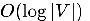
by means of hierarchical
Softmax over a binary tree of words (No. 180).
2006
Domains: STT Foundations Encoder
At the ICML 2006 conference Alex Graves, Santiago Fernández, Faustino
Gomez and Jürgen Schmidhuber presented the Connectionist
Temporal Classification (CTC) mechanism (No. 181), which freed
speech and handwriting recognition from the need for frame-by-frame
phoneme labeling. Extending the alphabet with an empty symbol
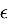
(blank) and introducing an operator that
collapses repeats and blanks , CTC
computes the exact probability of the target transcription by summing over all admissible alignment
paths of length with a forward–backward
dynamic-programming method in
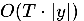
:
At the same time Geoffrey Hinton, Simon Osindero and Yee-Whye Teh
published layer-wise pretraining of Deep Belief Nets
from a stack of RBMs (No. 182)142, and Hinton and Ruslan Salakhutdinov
demonstrated in the journal Science nonlinear data compression
by deep autoencoders with fine-tuning by backpropagation (No. 183),
returning deep networks to the center of scientific attention. The year
was completed by a fundamental survey of energy-based models by Yann
LeCun and coauthors (No. 184) and the classic textbook by Christopher
Bishop, "Pattern Recognition and Machine Learning" (No.
185)164.
2007
Domains: Foundations Optimization Encoder
In 2007 Yoshua Bengio, Pascal Lamblin, Dan Popovici and Hugo Larochelle
showed at NIPS ("Greedy Layer-Wise Training of Deep Networks",
No. 186)163 that greedy layer-wise pretraining of deterministic
autoencoders initializes deep networks just as successfully as
stochastic RBMs. At the same conference Léon Bottou and Olivier Bousquet
published the work "The Tradeoffs of Large Scale Learning" (No.
187), proving that, for a fixed computation-time budget in the
large-sample regime, simple first-order stochastic gradient descent
(SGD) minimizes the expected generalization risk asymptotically more
efficiently than heavy second-order optimizers. Andriy Mnih and Geoffrey
Hinton introduced the Log-Bilinear Language Model (No.
188), and Ruslan Salakhutdinov, Andriy Mnih and Geoffrey Hinton applied
RBMs to matrix-factorization-style recommendation filtering on the
Netflix Prize (No. 189).
2008
Domains: Encoder Diffusion Attention/LLM
At the ICML 2008 conference Pascal Vincent, Hugo Larochelle, Yoshua
Bengio and Pierre-Antoine Manzagol presented denoising
autoencoders (Denoising Autoencoders, DAE) (No. 190)161: the
input vector is deliberately corrupted by random zeroing of components
(masking) or by Gaussian noise , and
the network is trained to project the noisy point back onto the manifold
of clean data 165. This simple
replacement of identity reconstruction by denoising became a direct
conceptual bridge both to masked language modeling (BERT, LLaDA) and to
diffusion score matching. At the same ICML Ronan Collobert and Jason
Weston trained a single convolutional architecture with word embeddings
pretrained on Wikipedia to solve six NLP tasks jointly without manual
feature engineering (No. 191), and Laurens van der Maaten and Geoffrey
Hinton introduced in JMLR the manifold visualization algorithm
t-SNE (No. 192).
2009
Domains: Encoder Optimization Foundations
In 2009 three events coincided that prepared the scaling of modern deep
learning. Jia Deng, Fei-Fei Li and coauthors presented at CVPR the
hierarchical corpus ImageNet (more than 14 million
labeled images, No. 193)167; Rajat Raina, Anand Madhavan and Andrew Ng
at ICML trained deep networks of 100 million parameters on the
programmable cores of a CUDA GPU with a 70×
speedup over multicore CPUs (No. 194); and Yoshua Bengio,
Jérôme Louradour, Ronan Collobert and Jason Weston formalized
curriculum learning (Curriculum Learning) (No. 195) —
the gradual increase of the difficulty and length of training examples,
which became a mandatory stage of progressive training for long context
and high resolution in all modern LLMs and video generators59. In the
same year Salakhutdinov and Hinton created deep Boltzmann
machines (DBM) with bidirectional inter-layer connections (No.
196), and Franco Scarselli et al. established the mathematical
convergence of GNN graph networks in IEEE TNN
(No. 197).
2010
Domains: Foundations Optimization Loops
In 2010 the main obstacles to training deep feedforward networks from
scratch without layer-wise pretraining were removed. Xavier Glorot and
Yoshua Bengio at the AISTATS conference (No. 198) showed that, in order
to preserve simultaneously the variance of the signal in the forward
pass and the variance of the gradients in the backward pass, the layer
weights must be initialized with the Glorot (Xavier
Initialization) variance:
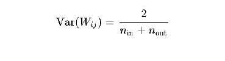
At the ICML 2010 conference Vinod Nair and Geoffrey Hinton published the
work "Rectified Linear Units Improve Restricted Boltzmann
Machines" (No. 199), bringing into wide practice the
piecewise-linear activation ReLU with unit derivative on the positive
half-axis. In the same year Tomáš Mikolov and coauthors presented at
Interspeech the recurrent neural network language model
(RNNLM) for speech recognition (No. 200), Michael Gutmann and
Aapo Hyvärinen derived noise-contrastive estimation
(NCE) (No. 201), James Martens trained deep networks without
pretraining by the second-order Hessian-Free method
(No. 202), and the symbolic-tensor GPU automatic-differentiation
compiler Theano by James Bergstra and Bengio's group
appeared (No. 203).
2011
Domains: Optimization Diffusion Foundations
STT
In 2011 John Duchi, Elad Hazan and Yoram Singer published in
JMLR the adaptive optimizer AdaGrad (No.
204)168, which normalizes the step of each coordinate by the square root
of the accumulated sum of squares of its past gradients , which started the whole family of adaptive
optimization methods for deep networks.
In the summer of 2011 Pascal Vincent published in Neural
Computation the fundamental theoretical paper "A Connection
Between Score Matching and Denoising Autoencoders"
(Denoising Score Matching, DSM, No. 205)161. Vincent
rigorously proved that training an autoencoder to suppress Gaussian
noise is equivalent to estimating the
score function of the Parzen-smoothed density without computing second derivatives of
the Jacobian166:
Given that , this formula is the direct
mathematical core of all continuous diffusion models (NCSN, DDPM, Score
SDE)142. In the same year Glorot, Bordes and Bengio justified the
sparsity of deep ReLU networks (No. 206), Max Welling and Yee-Whye Teh
joined stochastic gradient with Langevin dynamics in
SGLD (No. 207), Frank Seide, Gang Li and Dong Yu made a
breakthrough in industrial conversational speech recognition with the
CD-DNN-HMM hybrid (No. 208), and Collobert et al.
published the summary paper "Natural Language Processing (Almost)
from Scratch" in JMLR (No. 209).
2012
Domains: Encoder STT Optimization Loops
In December 2012 Alex Krizhevsky, Ilya Sutskever and Geoffrey Hinton
presented at NIPS the eight-layer convolutional network
AlexNet (No. 210)96, which reduced the Top-5 error on
ImageNet ILSVRC-2012 from 26.2% to 15.3% (Top-1
accuracy 63.3%). The success of AlexNet combined 60 million parameters,
the ReLU nonlinearity (which accelerated convergence 6×
compared with ), stochastic dropping of
neurons, Dropout, to suppress feature co-adaptation
(Hinton et al., 2012, No. 212) and model-parallel training on two NVIDIA
GTX 580 graphics cards167.
At the same time, in November 2012, Alex Graves published the
RNN-Transducer (RNN-T) architecture (No. 211), which
removed the conditional-independence assumption of the CTC outputs by
combining an acoustic encoder and an
autoregressive text prediction network
in a joint Joiner network with marginalization over the
two-dimensional lattice — the standard
of all streaming speech-recognition systems up to the modern TDT170. In
the same year there appeared the moving root-mean-square step scaling
RMSProp by Hinton and the dimensionless method
Adadelta by Matthew Zeiler (No. 213), the distributed
cluster framework DistBelief by Jeff Dean et al. (No.
214), the GPU-CNN ensembles of Dan Cireşan, Ueli Meier and Jürgen
Schmidhuber with the first superhuman accuracy on traffic-sign
recognition (No. 215)155 and the proof of the effectiveness of random
hyperparameter search by Bergstra and Bengio (No. 216).
2013
Domains: Encoder Diffusion Foundations
Optimization
In December 2013 Diederik Kingma and Max Welling published the
Variational Autoencoder (VAE) ("Auto-Encoding
Variational Bayes", No. 217; independently Danilo Rezende, Shakir
Mohamed and Daan Wierstra, No. 218), which maximizes the variational
lower bound on the likelihood (ELBO):
The reparameterization trick introduced by the authors moved the
randomness into external noise and made it possible to train arbitrary
deep probabilistic encoders by ordinary backpropagation; it is precisely
the compressed VAE spaces that today form the latent substrate of all
flagship generators of images, video and long speech74.
In parallel Tomáš Mikolov and coauthors at Google presented the
contrastive architectures Word2Vec (Skip-Gram and CBOW
with negative sampling, No. 219), which scaled the training of word
vector representations to billion-word corpora with a linear semantic
structure. Min Lin, Qiang Chen and Shuicheng Yan introduced pointwise
1×1 convolutions and global average pooling in Network in
Network (No. 220), Ian Goodfellow et al. proposed the
Maxout activation (No. 221), Volodymyr Mnih and the
DeepMind team combined a convolutional network with Q-learning and an
experience buffer in DQN on Atari games (No. 222),
Andrew Saxe, James McClelland and Surya Ganguli proved the preservation
of the singular values of the Jacobian under orthogonal
initialization of deep networks (No. 223)175, and Rie Johnson
and Tong Zhang introduced the gradient variance reduction
SVRG (No. 224).
2014
Domains: Attention/LLM Loops Diffusion Encoder
Optimization
In 2014 soft differentiable attention, generative adversarial networks
and the main optimizer of modern deep learning were born. Following the
Seq2Seq model of Ilya Sutskever, Oriol Vinyals and Quoc
Le (No. 225), which compressed the input phrase into a single fixed LSTM
vector, Dzmitry Bahdanau, Kyunghyun Cho and Yoshua Bengio ("Neural
Machine Translation by Jointly Learning to Align and Translate",
No. 226) removed the information bottleneck of the fixed vector,
allowing the decoder at each step to
dynamically weight all hidden states of the encoder (additive
attention):
In the same year Kyunghyun Cho et al. simplified the gated recurrent
cell to two gates in the GRU (, No. 227), and Alex Graves, Greg Wayne and
Ivo Danihelka equipped a neural network with a differentiable external
matrix memory in the Neural Turing Machine (NTM) (No.
228). At NIPS 2014 Ian Goodfellow and coauthors formulated the minimax
game of generator and discriminator, the GAN (
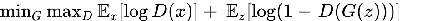
, No. 229), and in December Diederik Kingma
and Jimmy Ba published the Adam optimizer (No. 230),
which combined exponential moving estimates of the first and second
moments of the gradient with correction of the zero bias. In computer
vision and embeddings there appeared the cascades of narrow 3×3 kernels,
VGG, by Simonyan and Zisserman (No. 231)176, the
multiscale GoogLeNet / Inception blocks by Szegedy et
al. (No. 232), the word co-occurrence matrix factorization
GloVe by Pennington et al. (No. 233), the work by
Goodfellow et al. on the linear nature of adversarial
perturbations (FGSM) (No. 234) and the Caffe
library by Yangqing Jia (No. 235).
2015
Domains: Foundations Diffusion Encoder Optimization
STT
In 2015 the barrier of network depth degradation was overcome and, at
the same time, thermodynamic diffusion was formulated. Developing the
gated highways of the Highway Networks of Rupesh
Srivastava, Klaus Greff and Jürgen Schmidhuber (, No. 236)7, Kaiming He, Xiangyu Zhang,
Shaoqing Ren and Jian Sun simplified signal passing to pure identity
addition in ResNet-152 (No. 237; together with the
Kaiming Init initialization for ReLU, No. 238)61:
The additive unit in the Jacobian
ensured a non-vanishing gradient flow through hundreds of layers and
brought victory at ILSVRC-2015 with an ensemble error of 3.57%34.
In the same year Sergey Ioffe and Christian Szegedy introduced
Batch Normalization (No. 239)178; Olaf Ronneberger,
Philipp Fischer and Thomas Brox created the symmetric convolutional
encoder–decoder architecture with skip-passing of spatial feature maps,
the U-Net (No. 240)179; and Jascha Sohl-Dickstein, Eric
Weiss, Niru Maheswaranathan and Surya Ganguli published at ICML 2015 the
pioneering paper "Deep Unsupervised Learning using Nonequilibrium
Thermodynamics" (No. 241), introducing a forward Markov chain of
diffusion noising and a trainable
reverse chain of generative restoration . The year was complemented by the
temperature-based knowledge distillation of Hinton,
Vinyals and Dean (No. 242), the Fisher approximation
K-FAC of Martens and Grosse (No. 243), Luong's scalar
attention (No. 244), the end-to-end speech architectures
LAS by Chan et al. (No. 245) and DeepSpeech
2 by Amodei et al. (No. 246), the subword segmentation
BPE by Sennrich et al. (No. 247) and the open release
of the TensorFlow framework (No. 248).
2016
Domains: TTS Loops Foundations Optimization
Encoder
In 2016 the mechanisms of per-token normalization, adaptive recurrent
loops and autoregressive audio synthesis took shape. Jimmy Ba, Jamie
Kiros and Geoffrey Hinton proposed Layer Normalization
(LayerNorm) (No. 249), which normalizes the feature vector of
each individual token independently of the batch size, and Kaiming He et
al. proved that moving the normalization inside the residual branch
(Pre-LN ResNet: , No.
250) preserves a pure identity trunk at a depth of over 1000 layers61.
Alex Graves introduced the Adaptive Computation Time
(ACT) mechanism (No. 251)41, which allows a network to perform
a variable learnable number of inner iterations over each token under
the control of a sigmoid halting gate (ponder cost) — the direct
foundation of adaptive depth in the Universal Transformer, Ouro and
Huginn41. Dan Hendrycks and Kevin Gimpel proposed the smooth
probabilistic nonlinearity GELU
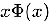
(No. 252).
In speech synthesis Aäron van den Oord and the DeepMind team presented
WaveNet (No. 253) — a stack of causal dilated 1D
convolutions with exponential growth of the dilation and gated nonlinearities , which for the first time brought waveform
synthesis close to a natural voice. In the same year Laurent Dinh,
Jascha Sohl-Dickstein and Samy Bengio created the invertible normalizing
flows RealNVP (No. 254); Eric Jang et al. derived the
differentiable categorical relaxation Gumbel-Softmax
(No. 255)54; Thomas Kipf and Max Welling formalized the spectral
graph convolutional networks (GCN) (No. 256); Gao Huang
et al. presented DenseNet (No. 257)180; Ilya Loshchilov
and Frank Hutter introduced the cosine learning-rate schedule
SGDR / Cosine Annealing (No. 258); and the classic
textbook by Goodfellow, Bengio and Courville, "Deep Learning"
(MIT Press, No. 259)8, appeared.
2017
Domains: Attention/LLM MoE TTS Encoder
Optimization
In June 2017 Ashish Vaswani, Noam Shazeer, Niki Parmar, Jakob Uszkoreit,
Llion Jones, Aidan Gomez, Łukasz Kaiser and Illia Polosukhin published
the paper "Attention Is All You Need" (No. 260)182, replacing
recurrent chains and convolutions with the Transformer
architecture based on scaled dot-product multi-head self-attention
(Multi-Head Attention, MHA):
The factor stabilizes the variance of
the logits before the softmax, the signal path length between any two
positions of the sequence is reduced to , and full parallelism over all tokens at training time maps ideally onto GPU
tensor multiplications, at the price of quadratic complexity .
In the same year 2017 five more works appeared that shaped the look of
modern multimodal and sparse systems. Noam Shazeer and coauthors
presented at ICLR the Sparsely-Gated Mixture-of-Experts
(No. 261)184, scaling a language model to 137 billion parameters by
means of sparse routing with an
auxiliary expert-load balancing penalty. Aäron van den Oord, Oriol
Vinyals and Koray Kavukcuoglu created the VQ-VAE (No.
262), introducing vector quantization of the latent space into a
discrete codebook with end-to-end gradient estimation by the
Straight-Through Estimator — the base mechanism of all modern neural
audio codecs. Yuxuan Wang et al. (Tacotron, No. 263)
and Jonathan Shen et al. (Tacotron 2, No. 264) built
end-to-end speech synthesis "text mel
spectrogram neural vocoder". In
optimization Ilya Loshchilov and Frank Hutter decoupled weight decay
from the adaptive second moment in AdamW (, No. 265), John Schulman et al. created the
clipped surrogate policy gradient PPO (No. 266)158, and
Martin Arjovsky, Soumith Chintala and Léon Bottou stabilized adversarial
networks with the Wasserstein metric, WGAN (No. 267).
The architectural arsenal was supplemented by the depthwise-separable
convolutions MobileNets of Howard et al. (No. 268), the
channel attention SENet of Hu et al. (No. 269), the
activation Swish / SiLU of Ramachandran et al. (No. 270) and the
graph attention GAT of Veličković et al. (No. 271).
2018
Domains: Encoder Attention/LLM Loops TTS
Optimization
In 2018 the pretraining of transformers on large unlabeled corpora split
into two complementary branches. Following the contextual BiLSTM
representations of ELMo by Matthew Peters et al. (No.
272), Alec Radford and coauthors at OpenAI presented the autoregressive
causal decoder GPT-1 (No. 273), and Jacob Devlin,
Ming-Wei Chang, Kenton Lee and Kristina Toutanova at Google created the
deep bidirectional encoder BERT (No. 274)186, trained
to recover 15% of randomly masked tokens (Masked Language
Modeling, MLM) from the full left and right context.
At the same time Mostafa Dehghani and coauthors introduced the
Universal Transformer (No. 275)187 — the first looped
transformer with weight sharing across depth and per-token ACT halting,
proving its computational universality at variable depth and laying the
direct foundation of the modern Huginn and Ouro models. Ricky Chen,
Yulia Rubanova, Jesse Bettencourt and David Duvenaud passed to the
continuous limit of the residual network
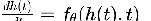
in the Neural ODE, with
training by the adjoint-equation method in memory with respect to depth (No. 276)190.
In the same year Aäron van den Oord, Yazhe Li and Oriol Vinyals
formulated the contrastive functional InfoNCE within
CPC (No. 277)191; Kingma and Dhariwal created the
invertible generator Glow (No. 278), adapted by Ryan
Prenger et al. into the fast flow-based speech vocoder
WaveGlow (No. 279); Yuxin Wu and Kaiming He introduced
GroupNorm (No. 280); in optimization there appeared the
low-rank Adafactor by Shazeer and Stern (No. 281)192
and the matrix curvature preconditioner Shampoo by
Gupta, Koren and Singer (No. 282)160; Arthur Jacot et al. described the
neural tangent kernel (NTK) regime (No. 283); and Taku
Kudo and John Richardson released the SentencePiece
tokenizer (No. 284)73.
2019
Domains: Attention/LLM Loops TTS Diffusion
Optimization
In 2019 the engineering framework of the modern LLM decoder and of the
infrastructure for its distributed training took shape. Alec Radford and
coauthors in GPT-2 (1.5B parameters, No. 285)1
established the Pre-LN scheme and zero-shot task
execution by language continuation. Biao Zhang and Rico Sennrich
presented RMSNorm (No. 286)28, discarding the mean
centering of LayerNorm and leaving only scale-invariant normalization by
the root-mean-square amplitude:
which sped up normalization on GPUs and became the standard of
practically all open architectures of 2023–2026196. In November Noam
Shazeer published Multi-Query Attention (MQA) (No.
287)49, pointing out the limitation of autoregressive decoding by the
HBM memory bandwidth when reading the KV cache and proposing shared
projections for all query heads.
In looped and long-context models Shaojie Bai, Zico Kolter and Vladlen
Koltun created Deep Equilibrium Models (DEQ) (No. 288),
which find the fixed point of the loop
with a numerical root solver and differentiate it analytically through
the implicit function theorem in
memory; Zhenzhong Lan et al. applied end-to-end sharing of layer weights
in ALBERT (No. 289)189; Colin Raffel et al. introduced
a tabular relative attention bias in T5 (No. 290)72;
and Zihang Dai et al. combined segment recurrence with relative
positions in Transformer-XL (No. 291)190. In speech
synthesis Yi Ren et al. created the non-autoregressive transformer
FastSpeech with an explicit phoneme duration regulator
(Length Regulator, No. 292), accelerating the
generation of mel spectrograms by two orders of magnitude without loss
of stability. Yang Song and Stefano Ermon revived generative modeling by
score on a multiscale grid of noises in NCSN (No. 293).
The year was completed by the compound scaling of CNNs,
EfficientNet, by Tan and Le (No. 294)178, the
self-supervised audio encoder wav2vec by Schneider et
al. (No. 295), the intra-layer tensor parallelism
Megatron-LM from NVIDIA (No. 296)198, the sharding of
optimizer states and weights ZeRO from Microsoft
DeepSpeed (No. 297)73 and the reference paper by Adam Paszke et al. on
PyTorch (No. 298).
2020
Domains: Attention/LLM Diffusion Encoder STT TTS
Loops/SSM
In 2020, language models, diffusion-based generation, computer vision
and speech technology were all transformed at once. Jared Kaplan and
co-authors established the power-law scaling laws of
the language-model loss as a function of parameter count, data and FLOPs
budget
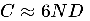
(No. 299)4, which Tom Brown and
the OpenAI team realized in the 175-billion-parameter
GPT-3 with emergent in-context learning (No. 300). Noam
Shazeer introduced the gated family of fully connected blocks
SwiGLU (No. 301)199,
which replaced the ordinary two-layer MLP in modern LLMs, while Angelos
Katharopoulos et al. factorized attention through a positive feature
kernel in Linear
Attention (No. 302)25, showing the duality between a linear
transformer and an RNN with matrix memory of complexity .
In generative models, Jonathan Ho, Ajay Jain and Pieter Abbeel published
DDPM (No. 303)37, reducing variational training of the
reverse Markov chain to predicting the added Gaussian noise
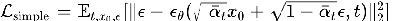
; Jiaming Song, Chenlin Meng and Stefano
Ermon constructed the deterministic non-Markovian accelerated-sampling
trajectories of DDIM (No. 304)5; and Yang Song et al.
unified diffusion and score estimation into continuous stochastic
differential equations (Score SDE) and the
deterministic Probability Flow ODE (No. 305)5. In
computer vision, Alexey Dosovitskiy, Lucas Beyer et al. presented the
pure patch transformer ViT (the image split into 16×16
patches with no convolutions, 88.55% Top-1 on ImageNet for ViT-H/14, No.
306)73, alongside the breakthrough of contrastive self-supervised
learning SimCLR (No. 311)202, MoCo
(No. 312) and the negative-free BYOL (No. 313).
In audio processing, three basic components of the modern speech stack
appeared: the convolution-transformer hybrid Conformer
by Anmol Gulati et al. (Macaron-FFN + MHSA + DepthwiseConv, which
reached 1.9% / 3.9% WER on LibriSpeech test-clean /
test-other, No. 307)203, the self-supervised quantizing raw-waveform
encoder wav2vec 2.0 by Alexei Baevski et al. (No.
308)191 and the multi-period generative adversarial vocoder
HiFi-GAN by Jungil Kong et al. (No. 309)206. Finally,
Albert Gu, Tri Dao and co-authors derived the operators of orthogonal
polynomial projection of the continuous signal history,
HiPPO (No. 310)62 (the theoretical basis of S4 and
Mamba), Patrick Lewis et al. created the RAG
architecture (No. 314), and Dmitry Lepikhin et al. scaled MoE to 600B
parameters in the GShard system (No. 315)27.
2021
Domains: Attention/LLM MoE Encoder Loops/SSM TTS
Diffusion Optimization
In 2021, the standards of relative positional encoding, low-rank
adaptation, structured state spaces and latent diffusion took shape.
Jianlin Su and co-authors introduced rotary position embedding
(RoPE) in RoFormer (No. 316)72, multiplying
pairs of query and key coordinates by orthogonal rotation matrices in
the complex plane with a geometric frequency spectrum :
Ofir Press et al. proposed the linear attention positional penalties
ALiBi (No. 317); William Fedus, Barret Zoph and Noam
Shazeer simplified MoE to Top-1 routing in the
1.6-trillion-parameter Switch Transformer (No. 318);
and Edward Hu et al. created the LoRA method (No.
319)210, which freezes the pretrained matrices and trains only a low-rank update of rank
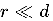
,
with no inference latency.
Among multimodal and visual encoders, Alec Radford et al. aligned image
and text spaces on 400M pairs in CLIP (No. 320)212,
Kaiming He et al. created the asymmetric masked patch autoencoder
MAE (75% of patches masked, No. 321), Mathilde Caron et
al. discovered label-free self-distillation of vision transformers,
DINO (No. 322)213, and Ze Liu et al. introduced
hierarchical shifted windows in the Swin Transformer
(No. 323). In long-sequence modeling, Albert Gu, Karan Goel and
Christopher Ré published S4 (Structured State Spaces)
(No. 324)62: by decomposing the HiPPO matrix into the sum of a normal
and a low-rank matrix (NPLR:
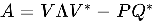
), they reduced the computation of a
convolution kernel of length to a
Cauchy kernel and an FFT in , solving
for the first time the Path-X task of length 16,384 on Long Range Arena
(average score 86.09)216; in parallel, Imanol Schlag, Kazuki Irie and
Jürgen Schmidhuber introduced the overwriting delta rule into linear
transformers at ICML 2021 (Fast Weight Programmers, No.
325)157, which became the direct theoretical source of DeltaNet.
In the speech and generative domains, Jaehyeon Kim, Jungil Kong and
Juhee Son combined variational inference, normalizing flows and
adversarial waveform synthesis in VITS (No. 326)217;
Neil Zeghidour et al. created the first end-to-end neural audio codec
with residual vector quantization (RVQ),
SoundStream (No. 327)47; Wei-Ning Hsu et al. presented
the masked speech encoder HuBERT (No. 328)191; Prafulla
Dhariwal and Alex Nichol demonstrated the superiority of diffusion over
GANs in image quality in ADM (No. 329)219; Jacob Austin
et al. formalized discrete diffusion with an absorbing [MASK] token in
D3PM (No. 330)35; and in December Robin Rombach,
Andreas Blattmann, Dominik Lorenz, Patrick Esser and Björn Ommer moved
diffusion into the compressed space of a perceptual autoencoder with
text cross-attention in Latent Diffusion Models (LDM / Stable
Diffusion) (No. 331)179.
2022
Domains: Attention/LLM Optimization Diffusion STT
TTS
In 2022, hardware-aware memory algorithms, compute-optimal scaling laws
and straight-line ODE flows changed the economics of large models. Tri
Dao, Daniel Fu, Stefano Ermon, Atri Rudra and Christopher Ré published
FlashAttention (No. 332)199: by splitting the matrices
into blocks in the fast on-chip GPU
memory SRAM and applying exact blockwise rescaling with
the online softmax (going back to Milakov and
Gimelshein, No. 333):
the authors computed mathematically exact attention without writing the
matrix to global HBM memory, reducing
memory consumption to 223. Jordan
Hoffmann et al. in Chinchilla (No. 334)224 showed that,
at a fixed FLOPs budget, the optimal training regime requires
proportional scaling of the number of parameters and training tokens
(), while Greg Yang, Edward Hu et al.
derived the P
parametrization for zero-shot transfer of hyperparameters from small
models to giant runs (No. 335).
In generative modeling, Jonathan Ho and Tim Salimans introduced
classifier-free guidance (CFG) (No. 336), Tero Karras
et al. systematized noise preconditioning and second-order samplers in
EDM (No. 337)37, and in the fall of 2022 Xingchao Liu,
Chengyue Gong and Qiang Liu (Rectified Flow, No. 338),
Yaron Lipman, Ricky Chen et al. (Flow Matching, No.
339) and Michael Albergo with Eric Vanden-Eijnden (Stochastic
Interpolants, No. 340) moved generation to training
straight-line ODE velocity vector fields along the linear interpolation , with the trajectory-straightening
procedure Reflow5. In December, William Peebles and
Saining Xie replaced the U-Net in latent diffusion with a scalable
transformer with adaptive normalization adaLN-Zero, the
Diffusion Transformer (DiT) (FID 2.27 on ImageNet
256×256, No. 341)219. In audio and post-training, there appeared the
multilingual ASR transformer Whisper by Alec Radford et
al., trained on 680,000 hours of weakly labeled data (No. 342)229, the
open 24 kHz RVQ codec EnCodec by Alexandre Défossez et
al. (No. 343)231, the three-stage alignment with human preferences
InstructGPT (RLHF) by Long Ouyang et al. (No. 344),
Chain-of-Thought reasoning prompting by Jason Wei et
al. (No. 345) and the block-wise quantized 8-bit optimizers of Tim
Dettmers et al. (No. 346)169.
2023
Domains: Attention/LLM MoE Loops/SSM Encoder Video
STT TTS STS Optimization
In 2023, the open LLM ecosystem received a standard for efficient
decoding, and linear-recurrent models for the first time challenged
transformers on language tasks. Joshua Ainslie et al. introduced
Grouped-Query Attention (GQA) (No. 347)39, sharing groups of keys and values among query heads (adopted in Llama 2
70B by Touvron et al., No. 348194); Woosuk Kwon et al.
eliminated KV-cache GPU-memory fragmentation with the paging mechanism
PagedAttention in the vLLM engine (No.
349)232; Tri Dao optimized warp-level parallelism in
FlashAttention-2 (No. 350)198; Hao Liu, Matei Zaharia
and Pieter Abbeel created Ring Attention, attention
distributed over a ring of accelerators for million-token contexts (No.
351)132; the Mistral AI team released the open sparse mixture of experts
Mixtral 8x7B (Top-2 of 8, No. 352)234; and Rafael
Rafailov et al. derived a closed form of policy alignment without a
reward model, Direct Preference Optimization (DPO) (No.
353)158:
At the same time, an offensive of subquadratic architectures with
constant inference memory unfolded:
RWKV-4 by Bo Peng et al. (No. 354)236, the multi-scale
retention network RetNet by Yutao Sun et al. (No.
355)49 and, in December, Mamba (S6) by Albert Gu and
Tri Dao (No. 356)25. By making the state-space parameters functions of the current input token
(Selective SSM) and implementing a hardware-aware
parallel associative scan in SRAM, Mamba solved the problem of
content-dependent filtering of context at linear complexity .
In the vision, text-diffusion and speech domains there appeared the
non-generative latent image predictor I-JEPA by Assran,
LeCun et al. (No. 357), the softmax-free pairwise sigmoid contrastive
encoder SigLIP by Zhai et al. (No. 358)212, the visual
foundation model DINOv2 by Oquab et al. (No. 359)176,
the video generator Stable Video Diffusion by Blattmann
et al. (No. 360), discrete diffusion with probability-ratio estimation
SEDD by Lou, Meng and Ermon (No. 361)57, the first
codec language model for zero-shot speech synthesis from a 3-second
sample, VALL-E by Wang et al. (No. 362)218, the
improved audio codec DAC by Kumar et al. (No. 363)55,
the conversational speech model SpeechGPT by Zhang et
al. (No. 364)240, the encoder with an 80-ms frame accelerated 2.8×,
FastConformer, by Rekesh et al. (No. 365)171, the
transducer that skips empty frames, Token-and-Duration
Transducer (TDT), by Xu, Majumdar and Ginsburg (No. 366)79, the
4-bit adaptation QLoRA by Dettmers et al. (No. 367),
the RoPE window extension YaRN by Peng et al. (No.
368)30 and Simon Prince's textbook "Understanding Deep
Learning" (MIT Press, No. 369)8.
Latent
attention MLA, penalty-free MoE balancing and quantized
pretraining
In 2024, a series of works by the DeepSeek-AI lab revisited the
architecture of attention and expert routing. In
DeepSeekMoE (arXiv:2401.06066, No. 370)29 the experts
were split into small specialized subnetworks combined with isolated,
always-active shared experts. In May,
DeepSeek-V2 (arXiv:2405.04434, 236B total / 21B active
parameters, No. 371)50 introduced the Multi-Head Latent
Attention (MLA) mechanism:
Thanks to absorbing the decompression matrices into the query and output projections at
inference time, only the compressed vector
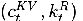
of
elements per layer is stored in memory, instead of the 32,768 of a
128-head MHA, a KV-cache reduction of 98.24% per layer (and of 93.3% at
the level of the whole V2 model versus the dense DeepSeek 67B)50. In
December, DeepSeek-V3 (arXiv:2412.19437, 671B total /
37B active parameters, 14.8T tokens, No. 372)29 combined
auxiliary-loss-free expert load balancing through a
dynamic bias in Top- selection (developing the Loss-Free
Balancing of Wang et al., No. 37327), the cascaded Multi-Token
Prediction (MTP) module (motivated earlier, in April, by Fabian
Gloeckle et al. from Meta, arXiv:2404.19737, No. 37464), the
communication-overlap pipeline DualPipe, and stable
training in FP8 precision in 2.788 million H800
GPU-hours (about $5.576M at the assumed rate of $2/hour, excluding
preliminary research runs and ablations; MMLU 88.5%, MATH-500 90.2%)29.
Back in February, Zhihong Shao et al. presented the critic-free RL
algorithm GRPO in DeepSeekMath
(arXiv:2402.03300, No. 375)53. In parallel, Shuming Ma et al. showed the
viability of ternary weights in
BitNet b1.58 (arXiv:2402.17764, No. 376)51, while the
open line of dense transformers was led by Llama 3.1
405B (No. 377)246 and Qwen2.5 (No.
378)247.
SSM
duality, Gated DeltaNet, TTT and second-generation
optimizers
On the axis of recurrent sequence models, Tri Dao and Albert Gu
proved in Mamba-2 (arXiv:2405.21060, No. 379)32 a
rigorous structural duality (SSD) between selective
SSMs with a scalar transition and
semiseparable linear attention
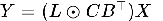
, moving
SSM training onto matrix blocks of Tensor Cores. Maximilian Beck and
Sepp Hochreiter scaled an LSTM with exponential gates and a covariance
matrix memory, mLSTM, in xLSTM
(arXiv:2405.04517, No. 380)183; Songlin Yang et al. parallelized the
linear transformer with the delta rule through the chunkwise Householder
WY representation (DeltaNet, No. 381248) and in
December, jointly with Jan Kautz and Ali Hatamizadeh, combined the delta
rule with the adaptive decay of Mamba-2 in Gated
DeltaNet (arXiv:2412.06464, No. 382)157:
The same year saw the matrix-recurrent RWKV-5/6 (Eagle &
Finch) by Bo Peng et al. (No. 383)249, the hybrid
Mamba–Transformer–MoE Jamba by Opher Lieber et al. (No.
384)184, the multi-lane residual streams Hyper-Connections
(HC) by Defa Zhu et al. (arXiv:2409.19606, No. 385)61 and the
Test-Time Training (TTT-Linear / TTT-MLP) layers of Yu
Sun, Karan Dalal et al. (arXiv:2407.04620, No. 386)44, which turned the
hidden state itself into a two-layer perceptron trained on the test
context. In hardware and numerical optimization there appeared the
asynchronous FlashAttention-3 for Hopper H100 chips
(740 TFLOPs/s in FP16, No. 387)252, the preconditioner
SOAP by Nikhil Vyas, Sham Kakade et al.
(arXiv:2409.11321, running AdamW in the eigenbasis of the Shampoo
matrices, with a reduction of more than 35% in large-batch training
time, No. 388)168 and the orthogonalizing matrix momentum
Muon by Keller Jordan (No. 389)65.
Multimodal
DiT, video VAEs, REPA and the full-duplex dialogue of
Moshi
In image and video generation, Patrick Esser et al. in Stable
Diffusion 3 (arXiv:2403.03206, No. 390)174 and the Black Forest
Labs team in FLUX.1 (12B parameters, No. 391)174
established the two-stream MMDiT architecture with
Rectified Flow. Convolutional video models were superseded by
spatiotemporal 3D-DiTs over causal 3D-VAEs (4×8×8 compression):
CogVideoX by Zhuoyi Yang et al. (No. 392)255,
Mochi 1 (No. 393)254, the 13-billion-parameter
HunyuanVideo by Weijie Kong et al. with MLLM prompt
encoding and 3D-RoPE (arXiv:2412.03603, No. 394)256 and the ultra-fast
LTX-Video from Lightricks with 1:192 Video-VAE
compression (arXiv:2501.00103, No. 395)258. Sihyun Yu et al. accelerated
the convergence of diffusion transformers by more than
17.5× by aligning latent patches with DINOv2 features
(REPA, arXiv:2410.06940, FID 1.42 on ImageNet 256×256,
No. 396)36; Subham Sahoo et al. derived the continuous limit of masked
text diffusion in MDLM (arXiv:2406.07524, No. 397)222;
Adrien Bardes et al. presented the video feature-prediction encoder
V-JEPA (arXiv:2404.08471, No. 398)60; and Benjamin
Warner et al. upgraded bidirectional text-and-code encoders to an
8,192-token window in ModernBERT (arXiv:2412.13663,
alternating global and sliding-window attention at 1:2, RoPE, GeGLU,
unpadding, No. 399)186.
In speech interaction, Alexandre Défossez et al. from the Kyutai lab
released Moshi and the streaming neural codec
Mimi (arXiv:2410.00037, No. 400)26, the first open
full-duplex speech LLM with a theoretical latency of 160
ms (200 ms in practice, versus the ~230 ms average pause in
human speech). The Mimi codec compresses a 24 kHz waveform to a rate of
12.5 Hz (80 ms step) into 8 RVQ codebooks of 2,048
entries each (1.1 kbit/s) with distillation of WavLM
semantics into the first codebook, while a hierarchy of a 7B Temporal
Transformer and a small Depth Transformer predicts in parallel the text
"inner monologue" (Inner Monologue) and two audio streams without
dividing the conversation into turns26. The 2024 stack was complemented
by the non-autoregressive encoder SenseVoice (15×
faster than Whisper-Large) and the synthesizer
CosyVoice (FunAudioLLM, No. 401)263, the streaming
F5-TTS (No. 402)264, the two-cascade
Fish-Speech (No. 403)265, as well as new foundational
textbooks by Christopher and Hugh Bishop, "Deep Learning:
Foundations and Concepts" (Springer, No. 404)266, and by Sebastian
Raschka, "Build a Large Language Model (From Scratch)"
(Manning, No. 405)267.
Verifiable
reasoning RL, sparse attention, mHC and trillion-parameter Muon
models
In January 2025, the publication of DeepSeek-R1
(arXiv:2501.12948, published in the journal Nature in September
2025, No. 406)50 showed, in the DeepSeek-R1-Zero
experiment, that pure scaling of GRPO reinforcement
learning on verifiable rules, without an initial SFT stage,
spontaneously forms long chains of self-verification and reflection,
raising accuracy on AIME 2024 from 15.6% to 71.0%, while the full
multistage DeepSeek-R1 reached 79.8% Pass@1 on
AIME 2024 and 97.3% on MATH-500, with
successful distillation of reasoning into dense models of 1.5B–70B269.
In February, Jingyang Yuan et al. presented Native Sparse
Attention (NSA) (arXiv:2502.11089, ACL 2025 Best Paper, No.
407)50, splitting attention into compressed, selective and local-window
branches with decoding speedup of up to 11.6×76. In December came
DeepSeek-V3.2 (arXiv:2512.02556, No. 408)10, which
built into MLA the DeepSeek Sparse Attention (DSA)
mechanism with a fast (lightning) indexer and top- token selection of complexity (the high-budget V3.2-Speciale variant
showed gold-level results at IMO 2025 and IOI 2025 according to the
authors' report)10, and the work of Zhenda Xie, Shengding Hu et al. on
Manifold-Constrained Hyper-Connections (mHC)
(arXiv:2512.24880, No. 409)2, which projected the lane-mixing matrices
of the residual stream onto the Birkhoff polytope of doubly stochastic
matrices with the Sinkhorn–Knopp algorithm (a guarantee of and only 6.7% time overhead at )2.
In parallel, the Moonshot AI team demonstrated the scalability of the
matrix optimizer Muon (arXiv:2502.16982, No. 410)65 and
in July trained, on 15.5 trillion tokens without a single loss spike,
the trillion-parameter agentic flagship Kimi K2
(arXiv:2507.20534, 1.04T total / 32.6B active parameters, 8 of 384
experts + 1 shared, No. 411) using the MuonClip
combination (Newton–Schulz iterations + the attention maximum-logit
constraint QK-Clip)66, complemented in October by the
hybrid architecture Kimi Linear with per-channel delta
decay KDA (arXiv:2510.26692, up to 6× decoding speedup
at 1M context, No. 412)278. The open frontier was expanded by the
controllable-reasoning family Qwen3 (up to 235B-A22B on
36T tokens, arXiv:2505.09388, No. 413)247, the natively multimodal
early-fusion models Llama 4 Scout (109B-A17B,
10-million-token context) and Llama 4 Maverick
(400B-A17B, No. 414)280, the agentic GLM-4.5
(355B-A32B, arXiv:2508.06471, No. 415)282 and the Mamba-2 + GQA + MoE
hybrid in NVFP4 format NVIDIA Nemotron 3 Nano
(31.6B-A3.2B, 1M context, arXiv:2512.20848, No. 416)13.
Recurrent
depth, inference-time memory, diffusion LLMs and MoE video
In February 2025, Jonas Geiping, Tom Goldstein et al. scaled latent
reasoning over depth in the model Huginn-0125 (3.5B
parameters, 800B tokens, arXiv:2502.05171, No. 417)3: a sandwich scheme
repeatedly runs a 4-layer core with
random initialization and re-injection
of the input up to times (132 effective layers), although
subsequent probing studies (Lu et al., arXiv:2507.02199) pointed to the
ambiguity of directly interpreting the intermediate hidden iterations as
text and to a more modest reserve of factual memory (MMLU 31.4%)
compared with models trained on 4T tokens187. In October, Rui-Jie Zhu et
al. (ByteDance) trained, on 7.7T tokens, the fully looped models with
adaptive exit Ouro-1.4B and Ouro-2.6B
(arXiv:2510.25741, No. 418)77, where the 2.6B model at reached 90.8% on MATH-500 and matched dense
models of up to 12B thanks to multi-step composition of knowledge, while
Boheng Wu et al. removed the sequential latency penalty of loops with
the pipelined schedule Cross-Loop Parallelism in the
Parallel Loop Transformer (PLT) (arXiv:2510.24824, No.
419)33. At the same time, Ali Behrouz et al. created the long-term
neural memory Titans, updated at inference time by
gradient with momentum (arXiv:2501.00663, No. 420)288, Tianyuan Zhang et
al. scaled fast-weight training in chunks to 1M tokens in
LaCT (arXiv:2505.23884, No. 421)289, Maximilian Beck
and Sepp Hochreiter released xLSTM 7B
(arXiv:2503.13427, No. 422)183, and Bo Peng et al. released
RWKV-7 "Goose" with dynamic low-rank state evolution
(arXiv:2503.14456, No. 423)236.
In discrete text diffusion there appeared LLaDA-8B (and
its MoE variant 7B-A1B) by Shen Nie et al., trained from scratch with
the weighted ELBO loss
(arXiv:2502.09992, No. 424)35, the commercial family Mercury
Coder from Inception Labs with a parallel generation speed of
1,109 tokens/s on an H100 (arXiv:2506.17298, No. 425)58
and Dream 7B by Jiacheng Ye et al. (arXiv:2508.15487,
No. 426)294. In video generation, the Alibaba team open-sourced under
the Apache 2.0 license the models Wan 2.1
(arXiv:2503.20314, No. 427) and Wan 2.2 (No. 428), the
first video diffusion architecture with a two-expert temporal
MoE denoiser (27B total / 14B active parameters, switching
between a coarse-structure expert and a fine-detail expert by an SNR
threshold with no growth in per-step cost, plus the compact
TI2V-5B model with 4×16×16 VAE compression for a single
RTX 4090)172. Also released were HunyuanVideo 1.5 (8.3B
parameters, 75 s of rendering on an RTX 4090 in step-distilled mode,
arXiv:2511.18870, No. 429)297, the in-context editor and
32-billion-parameter generator FLUX.1 Kontext / FLUX.2
(Mistral-3 24B + 128-channel VAE, No. 430)174, the multilingual encoder
SigLIP 2 (arXiv:2502.14786, 85.0% zero-shot on ImageNet
for ViT-g/16, No. 431)239, the video world model with robot planning
V-JEPA 2 (arXiv:2506.09985, No. 432)59 and the
7-billion-parameter visual encoder DINOv3 with the
Gram Anchoring mechanism for preserving dense
segmentation maps during long training (arXiv:2508.10104, 55.9 mIoU on
ADE20k, No. 433)301.
In the audio stack, Alibaba presented the omnimodal models
Qwen2.5-Omni (arXiv:2503.20215, No. 434) and
Qwen3-Omni (arXiv:2509.17765, a Thinker–Talker
MoE architecture + a 12.5 Hz AuT encoder
trained on 20 million hours of audio + the instantaneous causal decoder
Code2Wav, with no drop in text MMLU, No. 435)303. Alongside them came
the 130-billion-parameter Step-Audio (arXiv:2502.11946,
No. 436)306, the streaming LLaMA-Omni2
(arXiv:2505.02625, No. 437)308, the synthesizer with FSQ quantization
CosyVoice 3 (arXiv:2505.17589, No. 438)46, the local
open models Kokoro-82M, Orpheus-3B and
Chatterbox311, the 90-minute dialogue generator on a
continuous
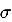
-VAE Microsoft
VibeVoice (arXiv:2508.19205, No. 439)173, the continuous audio
LMs of Kyutai (arXiv:2509.06926, No. 440)315, the audio LLM
Mistral Voxtral (arXiv:2507.13264, No. 441)316, the
ultra-fast NVIDIA Canary-1B-v2 and Parakeet-TDT-0.6B-v3
(arXiv:2509.14128, 3,332.7 RTFx, No. 442)229 and
GigaAM-v3317.
Ultra-sparse
flagships, attention over depth (AttnRes) and global KV-cache
savings
By November 2026, open architectures (systematized in Sebastian
Raschka's LLM Architecture Gallery of 132 models and in his
monograph "Build a Reasoning Model (From Scratch)", June 2026,
No. 445)1 had moved to ultra-sparse weight activation (3–6% per token)
and hybrid attention compression. The model DeepSeek V4
Pro (release 0813 in August 2026, MIT license) scaled MoE to
1.6 trillion parameters with ~49B active per token
(~3.06%) and a 1M-token window (trained on >32T tokens with
the Muon optimizer): the combination of Compressed Sparse
Attention (CSA) and Heavily Compressed Attention
(HCA) cut computational cost at 1M context to 27% of the FLOPs
and KV-cache memory to 10% of the V3.2 level (published reviews and
release materials report 93–94% on LiveCodeBench, >90% on GPQA
Diamond and 62.7 on DeepSWE)31.
Following the visual-agentic Kimi K2.5
(arXiv:2602.02276), the Moonshot AI team released the Attention
Residuals (AttnRes) method (arXiv:2603.15031), which replaces
uniform accumulation of the residual stream with learnable block softmax
attention along the depth axis over preceding layers, and in July 2026
open-sourced the then-largest 2.8-trillion-parameter flagship
Kimi K3 (arXiv:2607.24653, 104B active parameters — 16
of 896 routed + 2 shared experts, 1M window, native MXFP4 checkpoint,
No. 443)4. Kimi K3 uses a 3:1 interleaving of linear
KDA layers (with a lower-bounded sigmoid log-decay that
fits within the BF16 dynamic range on dense Tensor Core matrix kernels)
and global Gated MLA layers with no positional encoding at all
(NoPE), as well as Normalized LatentMoE with
an RMSNorm layer before the up-projection4. The series of large MoEs
with sparse attention was complemented by GLM-5
(arXiv:2602.15763, 744B-A40B, MLA + DSA + the asynchronous agentic RL
APRIL, 77.8% on SWE-bench Verified and 50.4 on AA Index v4.0)321,
Tencent Hy4 (770B-A49B, Gated MLA + DSA with a
cross-layer IndexCache and 4-lane hyper-connections iHC)1 and
Meta Muse Spark Open (816B-A42B)1.
At the pole of compact local systems, Google Gemma 4
(arXiv:2607.02770, Apache 2.0, sizes E2B, E4B, 12B Unified, 26B-A4B MoE
and 31B Dense) introduced three architectural mechanisms at once:
layer-wise embedding tables, Per-Layer Embeddings
(PLE), in the smaller models; a fully encoder-free
projection (Encoder-Free) of raw 40-ms audio chunks and image
patches directly into the decoder in the 12B Unified; and reuse
of keys as values (
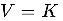
) together
with partial rotation, -RoPE
(), in the global attention
layers (local-to-global ratio of 5:1), which reduced the global KV cache
by **37.5%**73. Despite high scores on mathematics and science
benchmarks (89.2% on AIME 2026 and 84.3% on GPQA Diamond for the 31B in
Thinking mode), the independent archive Artificial Analysis v5.0.1 noted
that the 31B model lags behind large trillion-parameter systems on
complex multi-step agentic scenarios324.
The hybridization of linear matrix memory with sparse full attention
took hold in Alibaba Qwen 3.8-27B (August 2026, Apache
2.0, a dense VLM architecture of 64 layers: 16 blocks of 3 Gated
DeltaNet layers and 1 Gated Attention layer,
in parallel with the closed/flagship 2.4T-A95B Qwen 3.8-Max)11. The 48
Gated DeltaNet layers store fixed state matrices of 48 value heads , occupying a constant 72.0 MiB in
BF16 (144.0 MiB / 151.0 MB in FP32) at any
sequence length, whereas the 16 Gated Attention layers require four
times less KV-cache memory than a uniform 64-layer transformer30. In the
NVIDIA Nemotron 3 Super (120B-A12B, arXiv:2604.12374),
Nemotron 3 Ultra (550B-A55B, 108 layers,
arXiv:2606.15007) and Nemotron 3.5 Super &
Lightning (arXiv:2610.38095) family, a Mamba-2 + GQA hybrid is
combined with LatentMoE () and a recursive MTP drafter for
speculative decoding at contexts of up to 1M tokens27.
The core SSM and attention kernels themselves received a fundamental
update. Aakash Lahoti, Tri Dao, Albert Gu et al. presented
Mamba-3 (arXiv:2603.15569, ICLR 2026)32: the move to a
second-order accurate exponential-trapezoidal
discretization removed the
need for an external 1D convolution, complex-valued state
transitions (equivalent to an input-dependent
RoPE rotation) made it possible to track parity
(Parity) with 100% accuracy, and the rank-MIMO formulation raised the
arithmetic intensity of decoding 4× with no growth in latency, matching
the state
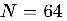
to the earlier
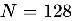
329. Ali Hatamizadeh, Yejin Choi and Jan
Kautz separated the erase and write gates in Gated
DeltaNet-2 (arXiv:2605.22791)248, and Tri Dao's lab released
FlashAttention-4 (arXiv:2603.05451) for the asymmetric
scaling of NVIDIA Blackwell (B200/GB200) accelerators:
polynomial emulation of the exponential on FMA units and
conditional skipping of the online-softmax rescaling at
delivered 1,600 TFLOPs/s (71% of
peak), while writing the kernel in the Python CuTe-DSL
cut compilation time by a factor of 20–30 compared with C++
templates223. At the intersection of loops and diffusion, Sanghyun Lee
et al. created Looped Diffusion Language Models
(LoopMDM) (arXiv:2605.26106, NeurIPS 2026), looping the
early-middle layers of a masked-diffusion LM with savings of up to
3.34× training FLOPs188 (developed further in
Looped UDLMs, arXiv:2610.3006656); also released were a
study of the saturation of the 7B coder LoopCoder-v2
(PLT-7B) (arXiv:2606.18023)38, Hyperloop
Transformers (arXiv:2604.21254)334, LoopFold
(arXiv:2610.35556)194 and the open looped MoE model Inkling 2
Mini (Thinking Machines Lab, 26.4B-A3.4B, 3 passes through the
middle layers + AttnRes)197.
Synchronous
audio-video synthesis LTX-2.5 and full-duplex voice agents with
tools
In generative video, Lightricks published LTX-2
(arXiv:2601.03233, an asymmetric two-stream DiT with a 14B video stream
with 3D-RoPE and a 5B audio stream with 1D-RoPE, linked by bidirectional
cross-attention over time)335 and in August 2026 released the
22-billion-parameter LTX-2.5 (Gemma 4 12B text encoder,
generation of synchronized video up to 4K and up to 20 s long together
with 24 kHz stereo sound in a single pass, multi-shot scene continuity
and IC-LoRA control)258, while in image generation the decoupled
transformer DDT-XL/2 by Wang et al. (CVPR 2026,
arXiv:2504.05741) lowered FID on ImageNet 256×256 to
1.26219. In full-duplex speech, the NVIDIA team
presented PersonaPlex 7B (arXiv:2602.06053, a hybrid
prompt of role and voice sample pinned in the context on top of the
Moshi + Mimi architecture: naturalness DMOS 3.90 ± 0.15
and voice-cloning similarity SSIM 0.57)68 and
NemotronLabs VoiceChat (arXiv:2609.21967, the first
open Full-Duplex STS model with native Tool Calling, auxiliary RNN-T
transcription, 100% interruption handling and 93% speech continuation
after listener interjections)69. The streaming voice stack was completed
by Qwen3-TTS (arXiv:2601.15621, a causal 12.5 Hz branch
with a 16-codebook MTP and a first-packet latency of about
97–100 ms) and Qwen-Audio-3.0-TTS
(arXiv:2607.23938)54, Qwen3.5-Omni (arXiv:2604.15804,
ARIA alignment)342, Fish Audio S2-Pro
(arXiv:2603.08823, TTFA ~100 ms, RTF 0.195) and Drama 3
(arXiv:2610.18010)158, Kyutai Pocket TTS (100M
parameters, MIT), which runs 6× faster than real time on two laptop CPU
cores344, the streaming Mistral Voxtral Realtime
(arXiv:2602.11298, 480 ms latency)345, GigaAM
Multilingual (arXiv:2607.10371, Interspeech 2026)346 and the
two-branch Nemotron 3.5 Transcribe (TDT + Sortformer
diarizer)348.
2027
Domains: Attention/LLM Loops/SSM Diffusion Video
Optimization
The research program of 2027, fixed by November 2026
through accepted publications of the winter–spring conferences
WACV 2027, AAAI / IAAI 2027,
WSDM 2027, DATE 2027 and the open
peer-review corpus of 37,028 ICLR 2027 submissions on
OpenReview, focuses on the theoretical unification of generative
paradigms and on eliminating subtle numerical-phase pathologies of
hybrid and looped networks15. In the paper accepted at WACV 2027 by
Amandeep Kumar, Nithin Nair and Vishal Patel, "Scale-wise VAR is
Secretly Discrete Diffusion" (No. 444)17, it is rigorously proved
that visual autoregressive next-scale prediction models (VAR) are
functionally equivalent to scale-wise discrete masked diffusion in a
multiscale latent space. The proceedings of WACV 2027 and AAAI/IAAI 2027
also present the video masked transformers for long-term segmentation
LVMT (Norouzi et al.)16, one-step flow schemes
(arXiv:2608.09579), the diffusion decoders PixCell
(arXiv:2611.01141), structural attention biases (arXiv:2611.04657) and
industrial architectures of bounded authoritative retrieval
(arXiv:2611.20398)19.
Three fundamental next-generation mechanisms were identified in the ICLR
2027 peer-review corpus. First, an analysis of chunked KV-cache
compression ("Periodic Weak Spots: Phase Sensitivity from Chunked
KV-Cache Compression") showed that in models of the DeepSeek-V4
class, fact-retrieval accuracy varies by up to 40 percentage
points depending on the phase of the token position relative to
the boundaries of the compression window, owing to the emergence of
phase-specialized heads15. Second, a work on the numerical stability of
the attention backward pass (OpenReview:LJvGaCWmFh) established that
late gradient explosions in training with BF16
FlashAttention-3 are caused by BF16 rounding violating the
exact conservation law for the sum of gradients of a softmax row (median
query-gradient error 219%), and proposed a correction of the backward
kernel that reduces the error to 0.34% / 0.37% (the
FP32 level) at a cost of only 4.7% per step352. Third, the following
were proposed: Variable-Width ("Hourglass")
Transformers that narrow in the middle, nested
Matryoshka Language Model Suites (36% savings in
training compute for a family of sizes) and the
SafeBridge method for aligning the safety of looped
models at all recursion depths, in response to the discovery that
halving the number of loops at inference in Ouro and Huginn preserves
89% accuracy on GSM8K but destroys the late-forming refusal vector,
increasing vulnerability to harmful requests 5.3–9.9 times15.
Appendix
A. Summary tables of architectures, benchmarks, statistics and
repositories
Table
A.1. Complete chronological matrix of architectures and mechanisms
(1958–2027, one-year step)
Year
Domain / Tags
Key architecture / algorithm
Core mathematical mechanism
Milestones, authors and Bibliography
number
1958
Foundations
Perceptron Mark I
Hyperplane , error correction
Rosenblatt (No. 1), von Neumann (No.
2)
1959
Encoder Foundations
Pandemonium; TD checkers; V1 receptive
fields
Parallel selection ; temporal difference of position
evaluation
Scale-wise VAR = dLLM; Phase analysis of
the DeepSeek-V4 KV; Exact BF16 FA-bwd; Hourglass LM; SafeBridge
Isomorphism of VAR and masked diffusion;
softmax gradient conservation law; safety across loops
Kumar et al. (WACV'27, No. 444)17,
OpenReview ICLR'2715
Two defining systemic shifts in open language architectures of
2024–2026 lie in the plane of GPU memory management: radical compression
of the context state (through the low-rank MLA cache and the replacement
of 75% of attention layers by the length-independent constant matrix
memory of Gated DeltaNet or KDA) and the transition to ultra-sparse
weight activation, in which, out of a total knowledge capacity of
0.7–2.8 trillion parameters, only 3.1–10.0% of the network is activated
for each token4.
Comparing the memory volumes given explains the practical economics of
long-context agentic inference: in uniform full-attention models, the
linear growth of the KV cache quickly exceeds the size of the model
weights themselves, forcing inference to be distributed across several
nodes merely to store the dialogue history196. By contrast, the 3:1
hybrid architecture fully freezes memory growth in 75% of the network's
layers (keeping it equal to 72 MiB in BF16 regardless of whether the
context length is 32K or 1M tokens), and in combination with 3–5% active
experts it makes it possible to serve multi-step trajectories an order
of magnitude cheaper at equal quality30.
Table
A.2. Architectural specifications and benchmarks of open flagship LLMs
and hybrids (2024–2026)
Note on attribution (as of 25.11.2026): The metrics are
given according to the official technical reports and model cards of the
developers; where independent measurements or reviews are available
(Epoch AI, Artificial Analysis, technical digests), the source is
explicitly indicated in the cell31. A dash (—) means that no comparable
publication of the metric exists in the primary source.
The dynamics of intelligence density between the 2025 and 2026
generations is especially clear when comparing hard scientific and
olympiad tasks (GPQA Diamond and AIME 2026) with the parameter
efficiency of recurrent-depth models10.
The data given reveal an important regularity: in tasks of sequential
deductive inference (AIME, MATH-500), the decisive factor is not the raw
number of unique parameters but the effective depth of sequential
nonlinear transformations, achieved either explicitly through an
in-context reasoning mode (Thinking mode in Gemma 4 26B-A4B with 3.8B
active parameters raises AIME 2026 to 88.3%, versus 20.8% for the
non-reasoning Gemma 3 27B) or implicitly inside the hidden state through
recurrent passes over a shared stack
of layers in Ouro-2.6B286.
Table
A.3. Recurrent-depth (looped) and diffusion language models
(2025–2026)
Model / Architecture
Paradigm and depth topology
Unique parameters / Training tokens
Key experimental metrics and speedups
Huginn-0125
(arXiv:2502.05171)3
Sandwich loop with concat injection of the input and , ()
3.5B / 800B tokens (4,096 MI250X)
As the number of loops grows : ARC-Easy 49.07%69.91%, HellaSwag 43.46%65.21%, GSM8K CoT 42.08%; zero-shot KV-sharing across 4 slots
with no loss on MT-Bench (5.86)284
Ouro-1.4B & Ouro-2.6B
(arXiv:2510.25741)286
Full-stack loop () with a learnable early-exit gate (ACT
gate)
1.4B and 2.6B / 7.7T tokens
Ouro-1.4B: MMLU 67.3%,
GSM8K 78.9%, MATH-500 82.4%; Ouro-2.6B: MMLU 74.6%,
MMLU-Pro 55.7%, BBH 80.5%, MATH-500 90.8% (comparable
to dense models of up to 12B)286
Latent Rectified Flow + MMDiT; in the 2nd
version the VLM Mistral-3 24B + 128-channel VAE
12B (FLUX.1) 32B (FLUX.2 [dev])
Unified generation and multi-image editing
up to 4 MP with a controllable number of steps and precise
typography299
HunyuanVideo (Dec. 2024)
& 1.5 (Nov. 2025)257
Dual-to-Single Stream DiT + MLLM text
encoder + Causal 3D-VAE + 3D-RoPE
13B (v1.0, 4×8×8 compression) /
8.3B (v1.5)
v1.0: 66.5% motion quality in a blind test
(60–80 GB VRAM); v1.5: rendering in ~75 s on a single RTX
4090 (step-distilled)297
Wan 2.1 (Feb. 2025) &
Wan 2.2 (July 2025, Apache 2.0)172
Flow-Matching DiT; in 2.2, a
2-expert temporal MoE by SNR and a compressed VAE
27B-A14B MoE (4×8×8) and
TI2V-5B (4×16×16)
Leader among open models in aesthetics
(85.3 on Wan-Bench 2.0) and VBVR (0.371 versus 0.273 for CogVideoX-1.5);
the 5B model renders 720p@24fps on a single RTX 4090172
LTX-VideoLTX-2LTX-2.5 (Aug. 2026,
Lightricks)259
Ultra-compressed Video-VAE (1:192) asymmetric two-stream audio-video
DiT with 1D/3D-RoPE cross-attention
2B/13B
19B (14B V + 5B A) 22B (+Gemma 4 12B)
Synchronous generation of video up to 4K
(up to 20 s in Fast) and 24 kHz stereo sound (dialogue, foley, lip sync)
in a single pass; runs from 12–24 GB VRAM in FP8297
By 2026, in the visual and speech domains simultaneously, generative
models had come close to two fundamental physical limits: the
reconstruction-accuracy limit of the latent autoencoder itself (rFID =
1.20 for the standard SD-VAE on ImageNet 256×256) and the average
duration of a natural pause between turns in live human conversation
(230 ms according to cross-linguistic measurements)70.
That denoisers reached an FID threshold of 1.26 against the 1.20 of the
SD-VAE itself explains why the research focus in the second half of
2025–2026 shifted from modifying the diffusion transformer itself to
redesigning the latent spaces of autoencoders, from end-to-end tuning of
the VAE with REPA-E to the 128-channel space of the
FLUX.2-VAE and the highly compressed video space of the
Wan2.2-VAE36. In turn, in the speech stack, the
transition to the ultra-low frame rate of 12.5 Hz (an
80 ms step in Mimi, Qwen3-Omni and Qwen3-TTS) made it possible to fit
the generation of the first audio packet into one or two steps of the
autoregressive decoder, making live voice communication with
interruptions indistinguishable in timing from a conversation between
people48.
Table
A.5. Summary characteristics and metrics of the speech stack: STT (ASR),
TTS and Full-Duplex STS (2020–2026)
First audio packet in ~97–100
ms on the causal 12.5 Hz path; 66% error reduction for ZH→KO relative to CosyVoice 3 (4.82 versus 14.4
WER); >10 min of stable speech63
Kyutai Pocket TTS (Jan.
2026, MIT)315
TTS Continuous audio LM with latent
noising (100M parameters)
24 kHz output without GPU
Runs ~6× faster than real time on
2 CPU cores (MacBook Air M4), first-chunk latency ~200 ms,
voice cloning, 6 languages344
Fish Audio S2-Pro (Mar.
2026)158
TTS Sequential Dual-AR (Fast AR over
codebooks) + GRPO + SGLang
10-codebook RVQ (DAC base)
80+ languages, TTFA ~100
ms, RTF 0.195 on an H200 (>3000 tok/s),
81.88% win on EmergentTTS-Eval (91.61% in paralinguistics)55
The Mimi codec,
full-duplex Moshi and PersonaPlex,
FastConformer / TDT decoders, the omni model
Qwen3-Omni and CPU synthesis Pocket
TTS
Appendix
B. Reference program listings of all key mechanisms
Below are twelve self-contained Python (torch) modules implementing
the core mathematical mechanisms of all ten domains covered in the
chapters 1958–2027.
Listing
B.1. Perceptron (1958) and the reverse-mode automatic differentiation
engine (1970–1986)
Appendix
C. What from the monograph basalt already supports
This appendix maps the model types and mechanisms the monograph
treats as milestones (mostly 2012–2027, plus the foundations basalt
relies on) onto basalt main as of 2026-11-27. A row is
supported only when a registered model_type, an
accepted flag or a routed endpoint reaches it with real weights.
Standalone cores, refused or experimental-only flags, and modules that
load weights best-effort over a seeded skeleton count as
partial. Where basalt's README disagrees with the code or the
CHANGELOG, the code and the CHANGELOG win.
Links to https://github.com/goodmai/mlx-swift-lm/...
point at the pinned fork revision 8e76c2f
(Package.swift), which holds most architecture
definitions.
The checklist of these rows for the monograph's problem book is
tracked in issue #816.
Foundations (Basis)
Mechanism / model type
Chapter (year)
Status in basalt
Where in basalt
Perceptron Mark I as a hardware machine
1958; B.1
out of scope
A physical device. The linear unit itself is
MLXNN.Linear.
The encoder→decoder pattern exists only as audio encoder → LLM
(Nemotron 3.5 Transcribe, NemotronTranscribeEncoder.swift)
and as text cross-attention in the DiT scaffolds. Additive scoring is
absent.
Transformer with multi-head attention, and the decoder-only causal
LM (GPT-1…3)
2017–2020
supported
MLX fused SDPA in every fork model. Basalt's fused paths are in FusedTransformerKernels.swift.
Served by basalt serve over the OpenAI and Anthropic APIs
(commands).
Bidirectional encoder BERT and masked LM
2018
partial
BERT-family encoders serve /v1/embeddings and
/v1/rerank (Bert.swift,
#178). There
is no MLM head and no MLM training.
ModernBERT
2024
not yet
MLXEmbedders ships Bert, NomicBert, Qwen3, Gemma3 and
LFM2Bidirectional, and no ModernBERT.
Scaling laws, Chinchilla, μP
2020–2022
out of scope
These govern pretraining compute allocation, and basalt does no
pretraining.
Attention and
positional encoding (Attention/LLM)
Mechanism / model type
Chapter (year)
Status in basalt
Where in basalt
MQA and GQA
2019, 2023
supported
Shared KV heads in every fork attention. Qwen3.8-27B uses 4 KV
heads. Gemma 4 12B global layers use
num_global_key_value_heads = 1. KV sizing is in models.
FlashAttention: tiled attention with an online softmax
gemma4_unified is registered, and image patches go
straight to the decoder (Gemma4UnifiedVisionEmbedder in Gemma4.swift).
Basalt sends audio through transcription (PipelineRunner.swift),
not as raw 40 ms chunks.
Fine-grained routed experts plus shared experts (DeepSeekMoE)
2024
supported
deepseek_v3. Flint has 512 routed experts, top-10, plus 1 shared (#518). Gemma 4
has a shared MLP.
Load balancing: auxiliary loss, and loss-free bias
(DeepSeek-V3)
2017, 2024; B.6
partial
Inference applies the trained e_score_correction_bias
(DeepseekV3.swift).
Basalt trains no routers.
LatentMoE (Nemotron 3/3.5; normalized variant in Kimi K3)
2026; B.6
supported
NemotronLatentMoEMixer with
fc1/fc2_latent_proj (NemotronLightningModel.swift,
#521). No
evidence found for the variant with RMSNorm before the
up-projection.
Ultra-sparse MoE inference, 3–6% of weights active
Delta rule to Gated DeltaNet (Fast Weight Programmers, DeltaNet,
GDN)
1991, 2021, 2024; B.7
supported
Only in gated form, in the qwen3_5/3.6/3.8 hybrids (Qwen3.8-27B is
golden-tested). The Metal fast path is GatedDeltaFastPath.swift.
Kimi Delta Attention (KDA)
2025; B.7
supported
bailing_hybrid (Ling-3.0) with a per-channel KDA Metal kernel (BailingHybridKDAKernel.swift,
#672). The
kimi_linear model type itself is not registered.
Second-generation SSM and delta cores: Mamba-3 (MIMO, complex
transitions) and Gated DeltaNet-2
2026; B.7
not yet
No evidence found.
Other recurrent LMs: RWKV-4…7, RetNet, xLSTM/mLSTM
2023–2025; B.3
not yet
No evidence found.
Hybrid 3:1 of linear and full attention (Qwen 3.5/3.8)
2026
supported
Qwen3.8-27B has 48 GDN layers and 16 gated-attention layers and is
golden-tested. Recurrent-state snapshots enable prompt-cache reuse (HybridPrefixSnapshot.swift,
#79).
Hybrid of Mamba-2, GQA and MoE (Jamba, Nemotron 3/3.5)
No evidence found. Self-rewriting (#676) edits
weights between turns, not inside a layer.
Depth topology (Loops)
Mechanism / model type
Chapter (year)
Status in basalt
Where in basalt
Hyper-Connections (HC), mHC on the Birkhoff polytope, iHC
2024–2026; B.8
not yet
No evidence found. Sinkhorn–Knopp appears only in weight
normalisation (SINQNormalizer.swift).
Attention Residuals (AttnRes), attention along depth
2026; B.8
supported
Inkling 2 attends over 6-layer residual blocks
(depthAttention in Inkling2Layers.swift),
with parity against mlx-lm (#755).
Looped shared-weight depth (Universal Transformer to looped
LMs)
2018–2026; B.9
supported
The Inkling 2 loop driver runs layers 6–17 three times, for 48 layer
visits (Inkling2Model.swift,
#650).
Huginn-0125, Ouro and Parallel Loop Transformer (cross-loop
parallelism)
2025; B.9
partial
Huginn-0125 (huginn_raven, HuginnModel.swift,
#838) and Ouro
(ouro, OuroModel.swift,
#832) run on
real weights. There is no cross-loop pipelining (Parallel Loop
Transformer).
Adaptive halting (ACT) and early-exit gates (Ouro)
2016, 2025; B.9
supported
--experimental-loop-exit <threshold> (LoopExit.swift,
#820): Ouro
uses its trained exit gate; Inkling 2 and Huginn use a training-free
exit on the relative change of the residual between passes. On
Huginn-0125, threshold 0.1 gives 2.3× decode speed at +1.9% perplexity
(#849).
Hourglass variable-width transformers, Matryoshka suites, SafeBridge
safety across loop depths
2027
not yet
No evidence found. Refusal-direction tools exist
(steer_search, research
tools) but work on nothing per loop depth.
Rollouts were planned in #566. There is
no GRPO code.
RL with verifiable rewards (DeepSeek-R1-Zero)
2025
partial
train_experts keeps only answers the verifier accepts,
trains a LoRA, and rolls back if held-out KL or PPL regresses (MLXInferenceEngine+LabTrain.swift,
research
tools). There is no policy-gradient update.
Chain-of-thought, thinking modes and test-time compute
2022, 2025
supported
--reasoning-effort, thinking budgets (ThinkingSplitter.swift)
and --experimental-adaptive-thinking-budget (#41)
Data, tensor and pipeline parallel training (ZeRO, Megatron,
DDP)
ModelOpt FP8 layers import as affine 8-bit, and per-channel FP8 is
refused (ModelOptImporter.swift,
#677). LoRA
runs over mxfp8 bases (#675). There is
no FP8 arithmetic.
models convert --to nvfp4 and lossless ModelOpt import
(#677)
Quantisation-aware and low-precision training
2024
partial
There is an STE fake-quant core, QATFakeQuantizer.swift
(#616), but
the CLI refuses QAT convert (CHANGELOG
0.13.0). Existing QAT checkpoints such as Gemma 4 QAT do run.
LLaDA-8B (llada, LLaDAModel.swift)
runs on real weights under --experimental-dllm through the
Fast-dLLM runner (FastDLLMRunner.swift,
#832, #833) with a fused
dual-block attention kernel (#840). Dream and
Mercury are not supported. The fork's
nemotron_labs_diffusion is driven only on its
autoregressive path.
Looped diffusion LMs (LoopMDM, Looped UDLM) and scale-wise VAR as
discrete diffusion (WACV 2027)
They appear only as towers: CLIP-L inside DeepSeek-OCR (DeepSeekOCR.swift)
and SigLIP inside PaliGemma and Idefics3 (Paligemma.swift).
There is no image–text embedding or zero-shot endpoint and no
contrastive training.
MAE and DINO / DINOv2 / DINOv3
2021–2025
not yet
No evidence found.
JEPA family: I-JEPA, V-JEPA 2, LeJEPA
2023–2026
partial
basalt models train-jepa trains a LeJEPA LoRA and
projector on multi-view text (LeJEPALoss.swift,
commands).
There is no image or video JEPA.
Native multimodal LLMs with multimodal/3D RoPE (Llama 4 early
fusion, Qwen-VL M-RoPE, Kimi K2.5)
2024–2026
supported
MLXVLM families gemma4, qwen3_5, qwen3_vl, mistral3 and
muse_glimmer. The Qwen3.8 mrope_section is handled in the
fork. OCR runs on DeepSeek-OCR-2 and PaddleOCR-VL. Video uses Fractional3DMultimodalRoPE.swift.
Whisper and fast ASR (Parakeet-TDT, Canary, SenseVoice, GigaAM,
Voxtral Realtime)
2022–2026
supported
/v1/audio/transcriptions routes Whisper
(whisper, Speech/Whisper,
#838) and
Parakeet-TDT (Speech/Parakeet,
#839) through
SpeechRecognitionModel, measured on real weights in #818.
mlx-community Whisper repositories still need a
tokenizer.json (#851). Canary,
SenseVoice, GigaAM and Voxtral Realtime are not supported.
The LFM2.5-Audio duplex session runner loads no weights (LFM25AudioSessionRunner.swift).
The Mac app's hands-free voice is a cascade of SpeechAnalyzer, LLM and
TTS (#604).
Persona-prompted duplex, duplex with tool calls, and Omni
Thinker–Talker (PersonaPlex, NemotronLabs VoiceChat, Qwen-Omni)
2025–2026; B.12
not yet
No evidence found.
Image and video
generation (Diffusion / Video)
Image and video backends are routed (/v1/images/*,
/v1/videos/* in RESTServer.swift).
Each builds a seeded skeleton and copies in only the safetensors whose
key and shape match (ImageRunnerCore.swift,
VideoDiTCheckpointCompat.swift).
Image text conditioning is a Fourier hash embedder (SharedTextEncoderBridge.swift).
No real-checkpoint parity test was found, so these mechanisms are rated
partial.
swift-transformers tokenisers serve every model (CHANGELOG
0.10.0).
Contrastive text embeddings and retrieval (InfoNCE/CPC, RAG)
2018, 2020
partial
/v1/embeddings and /v1/rerank (#178), plus the
LANTERN semantic cache (#625). No
retrieval index or RAG pipeline found.
Flagship model families
(Tables A.2–A.3)
Mechanism / model type
Chapter (year)
Status in basalt
Where in basalt
Families already served: Qwen3 and Qwen 3.5/3.8, Gemma 4, Nemotron
3/3.5, GLM-4.5, Inkling 2 Mini
2025–2026
supported
Verified rows in ModelCapabilities.swift.
Golden tests cover Gemma 4 26B-A4B, Qwen3.8-27B and nemotron_h.
glm4_moe comes from the fork and is unverified. Inkling 2
has parity with mlx-lm (#755).
DeepSeek-V3 / R1
2024–2025
supported
deepseek_v3 (DeepseekV3.swift),
unverified in basalt. At 671B it exceeds most Macs.
Kimi K2
2025
partial
The DeepSeek-V3 layout loads, but the kimi_k2 model
type is not mapped. Only its tool-call parser exists (ToolCallFormat.swift).
They need DSA, CSA/HCA, Gated MLA or iHC. KDA and AttnRes exist
separately (bailing_hybrid, Inkling 2).
Total: 120 rows — supported 54, partial 34, not yet 28, out
of scope 4.
Bibliography
The bibliography includes 445 individually numbered primary
sources (scientific publications, fundamental monographs and
open repositories for the period 1958–2027), arranged
chronologically:
Rosenblatt, F. (1958). The perceptron: A probabilistic model for
information storage and organization in the brain. Psychological
Review, 65(6), 386–408.82
von Neumann, J. (1958). The Computer and the Brain. Yale
University Press.
Hubel, D. H., & Wiesel, T. N. (1959). Receptive fields of single
neurones in the cat's striate cortex. The Journal of
Physiology, 148(3), 574–591.86
Selfridge, O. G. (1959). Pandemonium: A paradigm for learning.
Proceedings of the Symposium on Mechanisation of Thought
Processes, HMSO, 511–529.87
Samuel, A. L. (1959). Some studies in machine learning using the
game of checkers. IBM Journal of Research and Development,
3(3), 210–229.
Widrow, B., & Hoff, M. E. (1960). Adaptive switching circuits
(ADALINE & LMS). IRE WESCON Convention Record, Part 4,
96–104.88
Kelley, H. J. (1960). Gradient theory of optimal flight paths.
ARS Journal, 30(10), 947–954.7
Steinbuch, K. (1961). Die Lernmatrix. Kybernetik, 1(1),
36–45.91
Caianiello, E. R. (1961). Outline of a theory of thought-processes
and thinking machines. Journal of Theoretical Biology, 1(2),
204–235.
Novikoff, A. B. J. (1962). On convergence proofs on perceptrons.
Proceedings of the Symposium on the Mathematical Theory of
Automata, 12, 615–622.92
Rosenblatt, F. (1962). Principles of Neurodynamics: Perceptrons
and the Theory of Brain Mechanisms. Spartan Books.
Widrow, B. (1962). Generalization and information storage in
networks of adaline "neurons" (MADALINE). Self-Organizing
Systems, Spartan Books, 435–461.
Block, H. D. (1962). The perceptron: A model for brain functioning.
I. Reviews of Modern Physics, 34(1), 123–135.94
Hubel, D. H., & Wiesel, T. N. (1962). Receptive fields,
binocular interaction and functional architecture in the cat's visual
cortex. The Journal of Physiology, 160(1), 106–154.96
Vapnik, V. N., & Lerner, A. Y. (1963). Pattern recognition using
generalized portraits. Avtomatika i Telemekhanika, 24(6),
774–780.98
Steinbuch, K., & Piske, U. A. W. (1963). Learning matrices and
their applications. IEEE Transactions on Electronic Computers,
EC-12(6), 846–862.
Dreyfus, S. E. (1962/1963). Variational problems with inequality
constraints. Journal of Mathematical Analysis and Applications,
4(2), 297–308.7
Polyak, B. T. (1964). Some methods of speeding up the convergence of
iteration methods (Heavy-Ball Momentum). USSR Computational
Mathematics and Mathematical Physics, 4(5), 1–17.100
Aizerman, M. A., Braverman, E. M., & Rozonoer, L. I. (1964).
Theoretical foundations of the potential function method in pattern
recognition learning. Automation and Remote Control, 25,
821–837.20
Wengert, R. E. (1964). A simple automatic derivative evaluation
program. Communications of the ACM, 7(8), 463–464.
Ivakhnenko, A. G., & Lapa, V. G. (1965). Cybernetic
Predicting Devices (Кибернетические предсказывающие устройства).
Наукова думка.7
Cover, T. M. (1965). Geometrical and statistical properties of
systems of linear inequalities with applications in pattern recognition.
IEEE Transactions on Electronic Computers, EC-14(3),
326–334.
Nilsson, N. J. (1965). Learning Machines: Foundations of
Trainable Pattern-Classifying Systems. McGraw-Hill.88
Ho, Y.-C., & Kashyap, R. L. (1965). An algorithm for linear
inequalities and its applications. IEEE Transactions on Electronic
Computers, EC-14(5), 683–688.
Tsypkin, Y. Z. (1966). Adaptation, training and self-organization in
automatic systems. Avtomatika i Telemekhanika, 27(1),
23–61.106
Braverman, E. M. (1966). The method of potential functions in the
problem of training machines to recognize patterns without a teacher.
Avtomatika i Telemekhanika, 27(10), 100–121.103
Fogel, L. J., Owens, A. J., & Walsh, M. J. (1966).
Artificial Intelligence through Simulated Evolution. John Wiley
& Sons.
Amari, S.-I. (1967). A theory of adaptive pattern classifiers.
IEEE Transactions on Electronic Computers, EC-16(3),
299–307.21
Cover, T., & Hart, P. (1967). Nearest neighbor pattern
classification. IEEE Transactions on Information Theory, 13(1),
21–27.
Sinkhorn, R., & Knopp, P. (1967). Concerning nonnegative
matrices and doubly stochastic matrices. Pacific Journal of
Mathematics, 21(2), 343–348.61
Ivakhnenko, A. G. (1968). The group method of data handling — a
rival of the method of stochastic approximation. Soviet Automatic
Control, 13(3), 43–55.104
Grossberg, S. (1968). Some nonlinear networks capable of learning a
spatial pattern of arbitrary complexity. PNAS, 59(2),
368–372.109
Vapnik, V. N., & Chervonenkis, A. Y. (1968). On the uniform
convergence of relative frequencies of events to their probabilities.
Doklady Akademii Nauk SSSR, 181(4), 781–783.
Minsky, M., & Papert, S. (1969). Perceptrons: An
Introduction to Computational Geometry. MIT Press.82
Bryson, A. E., & Ho, Y.-C. (1969). Applied Optimal Control:
Optimization, Estimation, and Control. Blaisdell Publishing.7
Fukushima, K. (1969). Visual feature extraction by a multilayered
network of analog threshold elements. IEEE Transactions on Systems
Science and Cybernetics, 5(4), 322–333.85
Linnainmaa, S. (1970). The representation of the cumulative
rounding error of an algorithm as a Taylor expansion of the local
rounding errors. Master's Thesis, University of Helsinki.113
Goldfarb, D. (1970). A family of variable-metric methods derived by
variational means (BFGS). Mathematics of Computation, 24(109),
23–26.
Ivakhnenko, A. G. (1970). Heuristic self-organization in problems of
engineering cybernetics. Automatica, 6(2), 207–219.115
Ivakhnenko, A. G. (1971). Polynomial theory of complex systems.
IEEE Transactions on Systems, Man, and Cybernetics, SMC-1(4),
364–378.115
Marr, D. (1971). Simple memory: A theory for archicortex.
Philosophical Transactions of the Royal Society of London B,
262(841), 23–81.7
Amari, S.-I. (1972). Learning patterns and pattern sequences by
self-organizing nets of threshold elements. IEEE Transactions on
Computers, C-21(11), 1197–1206.115
Kohonen, T. (1972). Correlation matrix memories. IEEE
Transactions on Computers, C-21(4), 353–359.118
Anderson, J. A. (1972). A simple neural network generating an
interactive memory. Mathematical Biosciences, 14(3–4),
197–220.
Nakano, K. (1972). Associatron — A model of associative memory.
IEEE Transactions on Systems, Man, and Cybernetics, SMC-2(3),
380–388.7
Wilson, H. R., & Cowan, J. D. (1972). Excitatory and inhibitory
interactions in localized populations of model neurons. Biophysical
Journal, 12(1), 1–24.119
von der Malsburg, C. (1973). Self-organization of orientation
sensitive cells in the striate cortex. Kybernetik, 14(2),
85–100.123
Grossberg, S. (1973). Contour enhancement, short term memory, and
constancies in reverberating neural networks. Studies in Applied
Mathematics, 52(3), 213–257.109
Wilson, H. R., & Cowan, J. D. (1973). A mathematical theory of
the functional dynamics of cortical and thalamic nervous tissue.
Kybernetik, 13(2), 55–80.125
Werbos, P. J. (1974). Beyond Regression: New Tools for
Prediction and Analysis in the Behavioral Sciences. PhD Thesis,
Harvard University.123
Little, W. A. (1974). The existence of persistent states in the
brain. Mathematical Biosciences, 19(1–2), 101–120.127
Fukushima, K. (1975). Cognitron: A self-organizing multilayered
neural network. Biological Cybernetics, 20(3–4),
121–136.86
Albus, J. S. (1975). A new approach to manipulator control: The
cerebellar model articulation controller (CMAC). Transactions of the
ASME, Journal of Dynamic Systems, Measurement, and Control, 97(3),
220–227.130
Sherrington, D., & Kirkpatrick, S. (1975). Solvable model of a
spin-glass. Physical Review Letters, 35(26), 1792–1796.
Holland, J. H. (1975). Adaptation in Natural and Artificial
Systems. University of Michigan Press.
Linnainmaa, S. (1976). Taylor expansion of the accumulated rounding
error. BIT Numerical Mathematics, 16(2), 146–160.23
Grossberg, S. (1976). Adaptive pattern classification and universal
recoding: I & II. Biological Cybernetics, 23, 121–134 &
187–202.89
Willshaw, D. J., & von der Malsburg, C. (1976). How patterned
neural connections can be set up by self-organization. Proceedings
of the Royal Society of London B, 194(1117), 431–445.
Anderson, J. A., Silverstein, J. W., Ritz, S. A., & Jones, R. S.
(1977). Distinctive features, categorical perception, and probability
learning: Some applications of a neural model (BSB). Psychological
Review, 84(5), 413–451.122
Amari, S.-I. (1977). Dynamics of pattern formation in
lateral-inhibition type neural fields. Biological Cybernetics,
27(2), 77–87.124
Kohonen, T. (1977). Associative Memory: A System-Theoretical
Approach. Springer-Verlag.
Dempster, A. P., Laird, N. M., & Rubin, D. B. (1977). Maximum
likelihood from incomplete data via the EM algorithm. JRSS: Series
B, 39(1), 1–38.
Little, W. A., & Shaw, G. L. (1978). Analytic study of the
memory storage capacity of a neural network. Mathematical
Biosciences, 39(3–4), 281–290.127
Schwarz, G. (1978). Estimating the dimension of a model. The
Annals of Statistics, 6(2), 461–464.
Grossberg, S. (1978). A theory of human memory: Self-organization
and performance of sensory-motor codes, maps, and plans. Progress in
Theoretical Biology, 5, 233–374.
Fukushima, K. (1979). Improved Cognitron with r.m.s.-type synapses.
Biological Cybernetics, 32, 97–108.129
Fukushima, K. (1979). Neural network model for a mechanism of
pattern recognition unaffected by shift in position — Neocognitron (in
Japanese). Transactions of the IECE of Japan, J62-A(10),
658–665.86
Cooper, L. N., Liberman, F., & Oja, E. (1979). A theory for the
acquisition and loss of neuron specificity in visual cortex.
Biological Cybernetics, 33(1), 9–28.
Fukushima, K. (1980). Neocognitron: A self-organizing neural network
model for a mechanism of pattern recognition unaffected by shift in
position. Biological Cybernetics, 36(4), 193–202.129
Grossberg, S. (1980). How does a brain build a cognitive code?
Psychological Review, 87(1), 1–51.
Baur, W., & Strassen, V. (1983/1980). The complexity of partial
derivatives. Theoretical Computer Science, 22(3),
317–330.114
Hinton, G. E., & Anderson, J. A. (Eds.). (1981). Parallel
Models of Associative Memory. Lawrence Erlbaum Associates.
McClelland, J. L., & Rumelhart, D. E. (1981). An interactive
activation model of context effects in letter perception: Part 1.
Psychological Review, 88(5), 375–407.
Barto, A. G., Sutton, R. S., & Brouwer, P. S. (1981).
Associative search network: A reinforcement learning associative memory.
Biological Cybernetics, 40(3), 201–211.
Hopfield, J. J. (1982). Neural networks and physical systems with
emergent collective computational abilities. PNAS, 79(8),
2554–2558.124
Werbos, P. J. (1982). Applications of advances in nonlinear
sensitivity analysis. System Modeling and Optimization (IFIP),
Springer, 762–770.7
Kohonen, T. (1982). Self-organized formation of topologically
correct feature maps. Biological Cybernetics, 43(1),
59–69.
Oja, E. (1982). Simplified neuron model as a principal component
analyzer. Journal of Mathematical Biology, 15(3), 267–273.
Bienenstock, E. L., Cooper, L. N., & Munro, P. W. (1982). Theory
for the development of neuron selectivity: Orientation specificity and
binocular interaction in visual cortex. Journal of
Neuroscience, 2(1), 32–48.
Marr, D. (1982). Vision: A Computational Investigation into the
Human Representation and Processing of Visual Information. W. H.
Freeman.
Nesterov, Y. E. (1983). A method for solving the convex programming
problem with convergence rate .
Doklady Akademii Nauk SSSR, 269(3), 543–547 (Soviet Math.
Dokl., 27(2), 372–376).143
Kirkpatrick, S., Gelatt, C. D., & Vecchi, M. P. (1983).
Optimization by simulated annealing. Science, 220(4598),
671–680.144
Barto, A. G., Sutton, R. S., & Anderson, C. W. (1983).
Neuronlike adaptive elements that can solve difficult learning control
problems. IEEE TSMC, SMC-13(5), 834–846.
Valiant, L. G. (1984). A theory of the learnable. Communications
of the ACM, 27(11), 1134–1142.147
Hopfield, J. J. (1984). Neurons with graded response have collective
computational properties like those of two-state neurons. PNAS,
81(10), 3088–3092.
Geman, S., & Geman, D. (1984). Stochastic relaxation, Gibbs
distributions, and the Bayesian restoration of images. IEEE
TPAMI, 6(6), 721–741.
Kohonen, T. (1984). Self-Organization and Associative
Memory. Springer-Verlag.
Ackley, D. H., Hinton, G. E., & Sejnowski, T. J. (1985). A
learning algorithm for Boltzmann machines. Cognitive Science,
9(1), 147–169.149
LeCun, Y. (1985). Une procédure d'apprentissage pour réseau à seuil
asymétrique. Proceedings of Cognitiva 85, 599–604.
Parker, D. B. (1985). Learning-Logic. Technical Report
TR-47, Center for Computational Research in Economics and Management
Science, MIT.
Rumelhart, D. E., & Zipser, D. (1985). Feature discovery by
competitive learning. Cognitive Science, 9(1), 75–112.
Rumelhart, D. E., Hinton, G. E., & Williams, R. J. (1986).
Learning representations by back-propagating errors. Nature,
323(6088), 533–536.115
Rumelhart, D. E., McClelland, J. L., & the PDP Research Group.
(1986). Parallel Distributed Processing: Explorations in the
Microstructure of Cognition (Vols. 1 & 2). MIT Press.150
Smolensky, P. (1986). Information processing in dynamical systems:
Foundations of harmony theory. In Parallel Distributed
Processing (Vol. 1, pp. 194–281). MIT Press.
Jordan, M. I. (1986). Attractor dynamics and parallelism in a
connectionist sequential machine. Proceedings of the 8th Annual
Conference of the Cognitive Science Society, 531–546.
Sejnowski, T. J., & Rosenberg, C. R. (1987/1986). Parallel
networks that learn to pronounce English text (NETtalk). Complex
Systems, 1(1), 145–168.
Waibel, A., Hanazawa, T., Hinton, G., Shikano, K., & Lang, K. J.
(1989/1987). Phoneme recognition using time-delay neural networks
(TDNN). IEEE TASSP, 37(3), 328–339 (ATR TR-I-0006,
1987).87
Hinton, G. E., & Plaut, D. C. (1987). Using fast weights to
deblur old memories. Proceedings of the 9th Annual Conference of the
Cognitive Science Society, 177–186.45
Ballard, D. H. (1987). Modular learning in neural networks.
Proceedings of AAAI-87, 279–284.
Carpenter, G. A., & Grossberg, S. (1987). A massively parallel
architecture for a self-organizing neural pattern recognition machine
(ART 1). Computer Vision, Graphics, and Image Processing,
37(1), 54–115.
Pineda, F. J. (1987). Generalization of back-propagation to
recurrent neural networks. Physical Review Letters, 59(19),
2229–2232.
Zhang, W., Tanida, J., Itoh, K., & Ichioka, Y. (1988).
Shift-invariant pattern recognition neural network and its optical
architecture. Proceedings of Annual Conference of the Japan Society
of Applied Physics, 2147–2151.20
Broomhead, D. S., & Lowe, D. (1988). Multivariable functional
interpolation and adaptive networks (RBF). Complex Systems, 2,
321–355.
Sutton, R. S. (1988). Learning to predict by the methods of temporal
differences. Machine Learning, 3(1), 9–44.
Bourlard, H., & Kamp, Y. (1988). Auto-association by multilayer
perceptrons and singular value decomposition. Biological
Cybernetics, 59(4–5), 291–294.
Kosko, B. (1988). Bidirectional associative memories. IEEE
TSMC, 18(1), 49–60.
LeCun, Y., Boser, B., Denker, J. S., Henderson, D., Howard, R. E.,
Hubbard, W., & Jackel, L. D. (1989). Backpropagation applied to
handwritten zip code recognition. Neural Computation, 1(4),
541–551.96
Cybenko, G. (1989). Approximation by superpositions of a sigmoidal
function. Mathematics of Control, Signals, and Systems, 2(4),
303–314.
Hornik, K., Stinchcombe, M., & White, H. (1989). Multilayer
feedforward networks are universal approximators. Neural
Networks, 2(5), 359–366.
Williams, R. J., & Zipser, D. (1989). A learning algorithm for
continually running fully recurrent neural networks (RTRL). Neural
Computation, 1(2), 270–280.
Watkins, C. J. C. H. (1989). Learning from Delayed Rewards.
PhD Thesis, King's College, University of Cambridge.
Liu, D. C., & Nocedal, J. (1989). On the limited memory BFGS
method for large scale optimization. Mathematical Programming,
45(1–3), 503–528.153
Bridle, J. S. (1990/1989). Probabilistic interpretation of
feedforward classification network outputs, with relationships to
statistical pattern recognition (Softmax). Neurocomputing,
Springer, 227–236.
Elman, J. L. (1990). Finding structure in time. Cognitive
Science, 14(2), 179–211.154
Werbos, P. J. (1990). Backpropagation through time: What it does and
how to do it. Proceedings of the IEEE, 78(10), 1550–1560.
LeCun, Y., Denker, J. S., & Solla, S. A. (1990). Optimal brain
damage. NeurIPS, 2, 598–605.
Schmidhuber, J. (1990). Making the world differentiable: On using
self-supervised fully recurrent neural networks for dynamic
reinforcement learning and planning in non-stationary environments.
Technical Report FKI-126-90, TU Munich.7
Hansen, L. K., & Salamon, P. (1990). Neural network ensembles.
IEEE TPAMI, 12(10), 993–1001.
Jacobs, R. A., Jordan, M. I., Nowlan, S. J., & Hinton, G. E.
(1991). Adaptive mixtures of local experts. Neural Computation,
3(1), 79–87.156
Hochreiter, S. (1991). Untersuchungen zu dynamischen neuronalen
Netzen. Diploma Thesis, Institut für Informatik, Technische
Universität München.7
Schmidhuber, J. (1992/1991). Learning to control fast-weight
memories: An alternative to dynamic recurrent networks. Neural
Computation, 4(1), 131–139 (TR FKI-147-91, March 1991).22
Kramer, M. A. (1991). Nonlinear principal component analysis using
autoassociative neural networks. AIChE Journal, 37(2),
233–243.
Hertz, J., Krogh, A., & Palmer, R. G. (1991). Introduction
to the Theory of Neural Computation. Addison-Wesley.
Williams, R. J. (1992). Simple statistical gradient-following
algorithms for connectionist reinforcement learning (REINFORCE).
Machine Learning, 8(3–4), 229–256.
Schmidhuber, J. (1992). Learning complex, extended sequences using
the principle of history compression. Neural Computation, 4(2),
234–242.22
Polyak, B. T., & Juditsky, A. B. (1992). Acceleration of
stochastic approximation by averaging. SIAM Journal on Control and
Optimization, 30(4), 838–855.
Krogh, A., & Hertz, J. A. (1992). A simple weight decay can
improve generalization. NeurIPS, 4, 950–957.
Boser, B. E., Guyon, I. M., & Vapnik, V. N. (1992). A training
algorithm for optimal margin classifiers. Proceedings of COLT,
144–152.
Bromley, J., Guyon, I., LeCun, Y., Säckinger, E., & Shah, R.
(1993). Signature verification using a "Siamese" time delay neural
network. NeurIPS, 6, 737–744.
Hinton, G. E., & van Camp, D. (1993). Keeping the neural
networks simple by minimizing the description length of the weights.
Proceedings of COLT, 5–13.
Barron, A. R. (1993). Universal approximation bounds for
superpositions of a sigmoidal function. IEEE Transactions on
Information Theory, 39(3), 930–945.
Hassibi, B., & Stork, D. G. (1993). Second order derivatives for
network pruning: Optimal Brain Surgeon. NeurIPS, 5,
164–171.
Bengio, Y., Simard, P., & Frasconi, P. (1994). Learning
long-term dependencies with gradient descent is difficult. IEEE
Transactions on Neural Networks, 5(2), 157–166.
Jordan, M. I., & Jacobs, R. A. (1994). Hierarchical mixtures of
experts and the EM algorithm. Neural Computation, 6(2),
181–214.
Pearlmutter, B. A. (1994). Fast exact multiplication by the Hessian.
Neural Computation, 6(1), 147–160.
Haykin, S. (1994). Neural Networks: A Comprehensive
Foundation. Macmillan / Prentice Hall.
Hinton, G. E., Dayan, P., Frey, B. J., & Neal, R. M. (1995). The
"wake-sleep" algorithm for unsupervised neural networks.
Science, 268(5214), 1158–1161.
Bell, A. J., & Sejnowski, T. J. (1995). An
information-maximization approach to blind separation and blind
deconvolution. Neural Computation, 7(6), 1129–1159.
LeCun, Y., & Bengio, Y. (1995). Convolutional networks for
images, speech, and time series. In The Handbook of Brain Theory and
Neural Networks (pp. 255–258). MIT Press.
Bishop, C. M. (1995). Neural Networks for Pattern
Recognition. Oxford University Press.88
Olshausen, B. A., & Field, D. J. (1996). Emergence of
simple-cell receptive field properties by learning a sparse code for
natural images. Nature, 381(6583), 607–609.
Neal, R. M. (1996). Bayesian Learning for Neural Networks.
Lecture Notes in Statistics, Vol. 118, Springer.
Goller, C., & Küchler, A. (1996). Learning task-dependent
distributed representations by backpropagation through structure.
Proceedings of IEEE ICNN, 1, 347–352.
Ripley, B. D. (1996). Pattern Recognition and Neural
Networks. Cambridge University Press.
Hochreiter, S., & Schmidhuber, J. (1997). Long short-term
memory. Neural Computation, 9(8), 1735–1780.155
Schuster, M., & Paliwal, K. K. (1997). Bidirectional recurrent
neural networks. IEEE Transactions on Signal Processing,
45(11), 2673–2681.
Freund, Y., & Schapire, R. E. (1997). A decision-theoretic
generalization of on-line learning and an application to boosting
(AdaBoost). Journal of Computer and System Sciences, 55(1),
119–139.
LeCun, Y., Bottou, L., Bengio, Y., & Haffner, P. (1998).
Gradient-based learning applied to document recognition (LeNet-5).
Proceedings of the IEEE, 86(11), 2278–2324.
LeCun, Y., Bottou, L., Orr, G. B., & Müller, K.-R. (1998).
Efficient BackProp. In Neural Networks: Tricks of the Trade
(pp. 9–50). Springer.
Amari, S.-I. (1998). Natural gradient works efficiently in learning.
Neural Computation, 10(2), 251–276.159
Sutton, R. S., & Barto, A. G. (1998/2018). Reinforcement
Learning: An Introduction. MIT Press.152
Vapnik, V. N. (1998). Statistical Learning Theory. John
Wiley & Sons.99
Gers, F. A., Schmidhuber, J., & Cummins, F. (1999). Learning to
forget: Continual prediction with LSTM. Proceedings of ICANN,
2, 850–855.155
Lee, D. D., & Seung, H. S. (1999). Learning the parts of objects
by non-negative matrix factorization. Nature, 401(6755),
788–791.
Qian, N. (1999). On the momentum term in gradient descent learning
algorithms. Neural Networks, 12(1), 145–151.
Gers, F. A., Schmidhuber, J., & Cummins, F. (2000). Learning to
forget: Continual prediction with LSTM. Neural Computation,
12(10), 2451–2471.
Gers, F. A., & Schmidhuber, J. (2000). Recurrent nets that time
and count (Peephole LSTM). Proceedings of IEEE IJCNN, 3,
189–194.
Tenenbaum, J. B., de Silva, V., & Langford, J. C. (2000). A
global geometric framework for nonlinear dimensionality reduction
(Isomap). Science, 290(5500), 2319–2323.
Roweis, S. T., & Saul, L. K. (2000). Nonlinear dimensionality
reduction by locally linear embedding (LLE). Science,
290(5500), 2323–2326.
Jaeger, H. (2001). The "echo state" approach to analysing and
training recurrent neural networks. GMD Report 148, German National
Research Center for Information Technology.
Lafferty, J., McCallum, A., & Pereira, F. C. N. (2001).
Conditional random fields: Probabilistic models for segmenting and
labeling sequence data. ICML, 282–289.
Hastie, T., Tibshirani, R., & Friedman, J. (2001). The
Elements of Statistical Learning: Data Mining, Inference, and
Prediction. Springer.
Hinton, G. E. (2002). Training products of experts by minimizing
contrastive divergence. Neural Computation, 14(8),
1771–1800.142
Maass, W., Natschläger, T., & Markram, H. (2002). Real-time
computing without stable states: A new framework for neural computation
based on perturbations (LSM). Neural Computation, 14(11),
2531–2560.
Collins, M. (2002). Discriminative training methods for hidden
Markov models: Theory and experiments with perceptron algorithms.
EMNLP, 1–8.
Collobert, R., Bengio, S., & Mariéthoz, J. (2002). Torch: A
modular machine learning software library. Technical Report
IDIAP-RR 02-46.
Bengio, Y., Ducharme, R., Vincent, P., & Jauvin, C. (2003). A
neural probabilistic language model. Journal of Machine Learning
Research, 3, 1137–1155.
Simard, P. Y., Steinkraus, D., & Platt, J. C. (2003). Best
practices for convolutional neural networks applied to visual document
analysis. ICDAR, 958–963.
MacKay, D. J. C. (2003). Information Theory, Inference, and
Learning Algorithms. Cambridge University Press.
Oh, K.-S., & Jung, K. (2004). GPU implementation of neural
networks. Pattern Recognition, 37(6), 1311–1314.
Ng, A. Y. (2004). Feature selection, vs.
regularization, and rotational invariance. ICML, 78.
Welling, M., Rosen-Zvi, M., & Hinton, G. E. (2004). Exponential
family harmoniums with an application to information retrieval.
NeurIPS, 17, 1481–1488.163
Hyvärinen, A. (2005). Estimation of non-normalized statistical
models by score matching. Journal of Machine Learning Research,
6, 695–709.163
Graves, A., & Schmidhuber, J. (2005). Framewise phoneme
classification with bidirectional LSTM and other neural network
architectures. Neural Networks, 18(5–6), 602–610.
Chopra, S., Hadsell, R., & LeCun, Y. (2005). Learning a
similarity metric discriminatively, with application to face
verification. CVPR, 1, 539–546.
Gori, M., Monfardini, G., & Scarselli, F. (2005). A new model
for learning in graph domains. IEEE IJCNN, 2, 729–734.
Morin, F., & Bengio, Y. (2005). Hierarchical probabilistic
neural network language model. AISTATS, 246–252.
Graves, A., Fernández, S., Gomez, F., & Schmidhuber, J. (2006).
Connectionist temporal classification: Labelling unsegmented sequence
data with recurrent neural networks (CTC). ICML, 369–376.
Hinton, G. E., Osindero, S., & Teh, Y.-W. (2006). A fast
learning algorithm for deep belief nets. Neural Computation,
18(7), 1527–1554.142
Hinton, G. E., & Salakhutdinov, R. R. (2006). Reducing the
dimensionality of data with neural networks. Science,
313(5786), 504–507.
LeCun, Y., Chopra, S., Hadsell, R., Ranzato, M., & Huang, F. J.
(2006). A tutorial on energy-based learning. Predicting Structured
Data, MIT Press, 1–59.
Bishop, C. M. (2006). Pattern Recognition and Machine
Learning. Springer.164
Bengio, Y., Lamblin, P., Popovici, D., & Larochelle, H. (2007).
Greedy layer-wise training of deep networks. NeurIPS, 19,
153–160.163
Bottou, L., & Bousquet, O. (2007). The tradeoffs of large scale
learning. NeurIPS, 20, 161–168.
Mnih, A., & Hinton, G. (2007). Three new graphical models for
statistical language modelling. ICML, 641–648.
Salakhutdinov, R., Mnih, A., & Hinton, G. (2007). Restricted
Boltzmann machines for collaborative filtering. ICML,
791–798.
Vincent, P., Larochelle, H., Bengio, Y., & Manzagol, P.-A.
(2008). Extracting and composing robust features with denoising
autoencoders. ICML, 1096–1103.161
Collobert, R., & Weston, J. (2008). A unified architecture for
natural language processing: Deep neural networks with multitask
learning. ICML, 160–167.
van der Maaten, L., & Hinton, G. (2008). Visualizing data using
t-SNE. Journal of Machine Learning Research, 9, 2579–2605.
Deng, J., Dong, W., Socher, R., Li, L.-J., Li, K., & Fei-Fei, L.
(2009). ImageNet: A large-scale hierarchical image database.
CVPR, 248–255.
Raina, R., Madhavan, A., & Ng, A. Y. (2009). Large-scale deep
unsupervised learning using graphics processors. ICML,
873–880.
Bengio, Y., Louradour, J., Collobert, R., & Weston, J. (2009).
Curriculum learning. ICML, 41–48.
Salakhutdinov, R., & Hinton, G. E. (2009). Deep Boltzmann
machines. AISTATS, 448–455.
Scarselli, F., Gori, M., Tsoi, A. C., Hagenbuchner, M., &
Monfardini, G. (2009). The graph neural network model. IEEE
Transactions on Neural Networks, 20(1), 61–80.
Glorot, X., & Bengio, Y. (2010). Understanding the difficulty of
training deep feedforward neural networks (Xavier Init).
AISTATS, 249–256.
Nair, V., & Hinton, G. E. (2010). Rectified linear units improve
restricted Boltzmann machines (ReLU). ICML, 807–814.
Mikolov, T., Karafiát, M., Burget, L., Černocký, J., &
Khudanpur, S. (2010). Recurrent neural network based language model.
Interspeech, 1045–1048.
Gutmann, M., & Hyvärinen, A. (2010). Noise-contrastive
estimation: A new estimation principle for unnormalized statistical
models (NCE). AISTATS, 297–304.
Martens, J. (2010). Deep learning via Hessian-free optimization.
ICML, 735–742.
Bergstra, J., Breuleux, O., Bastien, F., Lamblin, P., Pascanu, R.,
Desjardins, G., Turian, J., Warde-Farley, D., & Bengio, Y. (2010).
Theano: A CPU and GPU math compiler in Python. SciPy,
3–10.
Duchi, J., Hazan, E., & Singer, Y. (2011). Adaptive subgradient
methods for online learning and stochastic optimization (AdaGrad).
Journal of Machine Learning Research, 12, 2121–2159.168
Vincent, P. (2011). A connection between score matching and
denoising autoencoders (DSM). Neural Computation, 23(7),
1661–1674.161
Glorot, X., Bordes, A., & Bengio, Y. (2011). Deep sparse
rectifier neural networks. AISTATS, 315–323.
Welling, M., & Teh, Y. W. (2011). Bayesian learning via
stochastic gradient Langevin dynamics (SGLD). ICML,
681–688.
Seide, F., Li, G., & Yu, D. (2011). Conversational speech
transcription using context-dependent deep neural networks.
Interspeech, 437–440.
Collobert, R., Weston, J., Bottou, L., Karlen, M., Kavukcuoglu, K.,
& Kuksa, P. (2011). Natural language processing (almost) from
scratch. JMLR, 12, 2493–2537.
Krizhevsky, A., Sutskever, I., & Hinton, G. E. (2012). ImageNet
classification with deep convolutional neural networks (AlexNet).
NeurIPS, 25, 1097–1105.96
Graves, A. (2012). Sequence transduction with recurrent neural
networks (RNN-T). arXiv preprint arXiv:1211.3711.
Hinton, G. E., Srivastava, N., Krizhevsky, A., Sutskever, I., &
Salakhutdinov, R. R. (2012). Improving neural networks by preventing
co-adaptation of feature detectors (Dropout). arXiv:1207.0580
(JMLR 2014).
Zeiler, M. D. (2012). ADADELTA: An adaptive learning rate method.
arXiv preprint arXiv:1212.5701.
Dean, J., Corrado, G., Monga, R., Chen, K., Devin, M., Mao, M., ...
& Ng, A. Y. (2012). Large scale distributed deep networks
(DistBelief). NeurIPS, 25, 1223–1231.
Cireşan, D., Meier, U., & Schmidhuber, J. (2012). Multi-column
deep neural networks for image classification. CVPR,
3642–3649.155
Bergstra, J., & Bengio, Y. (2012). Random search for
hyper-parameter optimization. JMLR, 13, 281–305.
Kingma, D. P., & Welling, M. (2013). Auto-encoding variational
Bayes (VAE). arXiv preprint arXiv:1312.6114 (ICLR 2014).
Rezende, D. J., Mohamed, S., & Wierstra, D. (2014/2013).
Stochastic backpropagation and approximate inference in deep generative
models. ICML, 1278–1286.
Mikolov, T., Sutskever, I., Chen, K., Corrado, G. S., & Dean, J.
(2013). Distributed representations of words and phrases and their
compositionality (Word2Vec). NeurIPS, 26, 3111–3119.
Lin, M., Chen, Q., & Yan, S. (2013). Network in network.
arXiv preprint arXiv:1312.4400.
Goodfellow, I. J., Warde-Farley, D., Mirza, M., Courville, A., &
Bengio, Y. (2013). Maxout networks. ICML, 1319–1327.
Mnih, V., Kavukcuoglu, K., Silver, D., Graves, A., Antonoglou, I.,
Wierstra, D., & Riedmiller, M. (2013/2015). Playing Atari with deep
reinforcement learning (DQN). arXiv:1312.5602 (Nature
2015).
Saxe, A. M., McClelland, J. L., & Ganguli, S. (2013). Exact
solutions to the nonlinear dynamics of learning in deep linear neural
networks. arXiv:1312.6120 (ICLR 2014).
Johnson, R., & Zhang, T. (2013). Accelerating stochastic
gradient descent using predictive variance reduction (SVRG).
NeurIPS, 26, 315–323.
Sutskever, I., Vinyals, O., & Le, Q. V. (2014). Sequence to
sequence learning with neural networks. NeurIPS, 27,
3104–3112.
Bahdanau, D., Cho, K., & Bengio, Y. (2014). Neural machine
translation by jointly learning to align and translate. arXiv
preprint arXiv:1409.0473 (ICLR 2015).
Cho, K., van Merriënboer, B., Gulcehre, C., Bahdanau, D., Bougares,
F., Schwenk, H., & Bengio, Y. (2014). Learning phrase
representations using RNN encoder-decoder for statistical machine
translation (GRU). EMNLP, 1724–1734.
Graves, A., Wayne, G., & Danihelka, I. (2014). Neural Turing
machines. arXiv preprint arXiv:1410.5401.
Goodfellow, I., Pouget-Abadie, J., Mirza, M., Xu, B., Warde-Farley,
D., Ozair, S., Courville, A., & Bengio, Y. (2014). Generative
adversarial nets (GAN). NeurIPS, 27, 2672–2680.
Kingma, D. P., & Ba, J. (2014). Adam: A method for stochastic
optimization. arXiv preprint arXiv:1412.6980 (ICLR 2015).
Simonyan, K., & Zisserman, A. (2014). Very deep convolutional
networks for large-scale image recognition (VGG). arXiv preprint
arXiv:1409.1556.176
Szegedy, C., Liu, W., Jia, Y., Sermanet, P., Reed, S., Anguelov, D.,
... & Rabinovich, A. (2015/2014). Going deeper with convolutions
(GoogLeNet). CVPR, 1–9 (arXiv:1409.4842).
Pennington, J., Socher, R., & Manning, C. D. (2014). GloVe:
Global vectors for word representation. EMNLP, 1532–1543.
Goodfellow, I. J., Shlens, J., & Szegedy, C. (2014). Explaining
and harnessing adversarial examples. arXiv preprint
arXiv:1412.6572 (ICLR 2015).
Jia, Y., Shelhamer, E., Donahue, J., Karayev, S., Long, J.,
Girshick, R., Guadarrama, S., & Darrell, T. (2014). Caffe:
Convolutional architecture for fast feature embedding. ACM
Multimedia, 675–678.
Srivastava, R. K., Greff, K., & Schmidhuber, J. (2015). Highway
networks. arXiv preprint arXiv:1505.00387.
He, K., Zhang, X., Ren, S., & Sun, J. (2016/2015). Deep residual
learning for image recognition (ResNet). CVPR, 770–778
(arXiv:1512.03385).61
He, K., Zhang, X., Ren, S., & Sun, J. (2015). Delving deep into
rectifiers: Surpassing human-level performance on ImageNet
classification (Kaiming Init). ICCV, 1026–1034.
Ioffe, S., & Szegedy, C. (2015). Batch normalization:
Accelerating deep network training by reducing internal covariate shift.
ICML, 448–456.178
Ronneberger, O., Fischer, P., & Brox, T. (2015). U-Net:
Convolutional networks for biomedical image segmentation.
MICCAI, Springer, 234–241.179
Sohl-Dickstein, J., Weiss, E., Maheswaranathan, N., & Ganguli,
S. (2015). Deep unsupervised learning using nonequilibrium
thermodynamics. ICML, 2256–2265.
Hinton, G., Vinyals, O., & Dean, J. (2015). Distilling the
knowledge in a neural network. arXiv preprint
arXiv:1503.02531.
Martens, J., & Grosse, R. (2015). Optimizing neural networks
with Kronecker-factored approximate curvature (K-FAC). ICML,
2408–2417.
Luong, M.-T., Pham, H., & Manning, C. D. (2015). Effective
approaches to attention-based neural machine translation.
EMNLP, 1412–1421.
Chan, W., Jaitly, N., Le, Q., & Vinyals, O. (2016/2015). Listen,
attend and spell (LAS). ICASSP, 4960–4964
(arXiv:1508.01211).
Amodei, D., Ananthanarayanan, S., Anubhai, R., Bai, J., Battenberg,
E., Case, C., ... & Zhu, Z. (2016/2015). Deep Speech 2: End-to-end
speech recognition in English and Mandarin. ICML, 173–182
(arXiv:1512.02595).
Sennrich, R., Haddow, B., & Birch, A. (2016/2015). Neural
machine translation of rare words with subword units (BPE).
ACL, 1715–1725 (arXiv:1508.07909).
Abadi, M., Barham, P., Chen, J., Chen, Z., Davis, A., Dean, J., ...
& Zheng, X. (2016/2015). TensorFlow: A system for large-scale
machine learning. OSDI, 265–283
(github.com/tensorflow/tensorflow).
Ba, J. L., Kiros, J. R., & Hinton, G. E. (2016). Layer
normalization. arXiv preprint arXiv:1607.06450.
He, K., Zhang, X., Ren, S., & Sun, J. (2016). Identity mappings
in deep residual networks (Pre-LN ResNet). ECCV,
630–645.61
Graves, A. (2016). Adaptive computation time for recurrent neural
networks (ACT). arXiv preprint arXiv:1603.08983.41
Hendrycks, D., & Gimpel, K. (2016). Gaussian error linear units
(GELUs). arXiv preprint arXiv:1606.08415.
van den Oord, A., Dieleman, S., Zen, H., Simonyan, K., Vinyals, O.,
Graves, A., Kalchbrenner, N., Senior, A., & Kavukcuoglu, K. (2016).
WaveNet: A generative model for raw audio.
arXiv:1609.03499.
Dinh, L., Sohl-Dickstein, J., & Bengio, S. (2016). Density
estimation using Real NVP. arXiv preprint arXiv:1605.08803
(ICLR 2017).
Jang, E., Gu, S., & Poole, B. (2016). Categorical
reparameterization with Gumbel-Softmax. arXiv preprint
arXiv:1611.01144 (ICLR 2017).54
Kipf, T. N., & Welling, M. (2016). Semi-supervised
classification with graph convolutional networks (GCN). arXiv
preprint arXiv:1609.02907 (ICLR 2017).
Huang, G., Liu, Z., Van Der Maaten, L., & Weinberger, K. Q.
(2017/2016). Densely connected convolutional networks (DenseNet).
CVPR, 4700–4708 (arXiv:1608.06993).180
Loshchilov, I., & Hutter, F. (2016). SGDR: Stochastic gradient
descent with warm restarts (Cosine Annealing). arXiv:1608.03983
(ICLR 2017).
Goodfellow, I., Bengio, Y., & Courville, A. (2016). Deep
Learning. MIT Press.8
Vaswani, A., Shazeer, N., Parmar, N., Uszkoreit, J., Jones, L.,
Gomez, A. N., Kaiser, Ł., & Polosukhin, I. (2017). Attention is all
you need. NeurIPS, 30, 5998–6008.182
Shazeer, N., Mirhoseini, A., Maziarz, K., Davis, A., Le, Q., Hinton,
G., & Dean, J. (2017). Outrageously large neural networks: The
sparsely-gated mixture-of-experts layer. ICLR
(arXiv:1701.06538).184
van den Oord, A., Vinyals, O., & Kavukcuoglu, K. (2017). Neural
discrete representation learning (VQ-VAE). NeurIPS, 30,
6306–6315.
Wang, Y., Skerry-Ryan, R., Stanton, D., Wu, Y., Weiss, R. J.,
Jaitly, N., ... & Saurous, R. A. (2017). Tacotron: Towards
end-to-end speech synthesis. Interspeech, 4006–4010.
Shen, J., Pang, R., Weiss, R. J., Schuster, M., Jaitly, N., Yang,
Z., ... & Wu, Y. (2018/2017). Natural TTS synthesis by conditioning
WaveNet on mel spectrogram predictions (Tacotron 2). ICASSP,
4779–4783 (arXiv:1712.05884).
Loshchilov, I., & Hutter, F. (2017). Decoupled weight decay
regularization (AdamW). arXiv preprint arXiv:1711.05101 (ICLR
2019).
Schulman, J., Wolski, F., Dhariwal, P., Radford, A., & Klimov,
O. (2017). Proximal policy optimization algorithms (PPO). arXiv
preprint arXiv:1707.06347.158
Arjovsky, M., Chintala, S., & Bottou, L. (2017). Wasserstein
generative adversarial networks (WGAN). ICML, 214–223.
Howard, A. G., Zhu, M., Chen, B., Kalenichenko, D., Wang, W.,
Weyand, T., Andreetto, M., & Adam, H. (2017). MobileNets: Efficient
convolutional neural networks for mobile vision applications.
arXiv:1704.04861.
Ramachandran, P., Zoph, B., & Le, Q. V. (2017). Searching for
activation functions (Swish). arXiv preprint
arXiv:1710.05941.
Veličković, P., Cucurull, G., Casanova, A., Romero, A., Liò, P.,
& Bengio, Y. (2017). Graph attention networks (GAT).
arXiv:1710.10903 (ICLR 2018).
Peters, M. E., Neumann, M., Iyyer, M., Gardner, M., Clark, C., Lee,
K., & Zettlemoyer, L. (2018). Deep contextualized word
representations (ELMo). NAACL-HLT, 2227–2237.
Radford, A., Narasimhan, K., Salimans, T., & Sutskever, I.
(2018). Improving language understanding by generative pre-training
(GPT-1). OpenAI Technical Report.
Devlin, J., Chang, M.-W., Lee, K., & Toutanova, K. (2019/2018).
BERT: Pre-training of deep bidirectional transformers for language
understanding. NAACL-HLT, 4171–4186 (arXiv:1810.04805).186
Chen, R. T. Q., Rubanova, Y., Bettencourt, J., & Duvenaud, D. K.
(2018). Neural ordinary differential equations. NeurIPS, 31,
6571–6583.
van den Oord, A., Li, Y., & Vinyals, O. (2018). Representation
learning with contrastive predictive coding (CPC / InfoNCE). arXiv
preprint arXiv:1807.03748.191
Kingma, D. P., & Dhariwal, P. (2018). Glow: Generative flow with
invertible 1x1 convolutions. NeurIPS, 31, 10215–10224.
Prenger, R., Valle, R., & Catanzaro, B. (2019/2018). WaveGlow: A
flow-based generative network for speech synthesis. ICASSP,
3617–3621 (arXiv:1811.00002).
Wu, Y., & He, K. (2018). Group normalization. ECCV,
3–19.
Shazeer, N., & Stern, M. (2018). Adafactor: Adaptive learning
rates with sublinear memory cost. ICML, 4596–4604.192
Jacot, A., Gabriel, F., & Hongler, C. (2018). Neural tangent
kernel: Convergence and generalization in neural networks.
NeurIPS, 31, 8571–8580.
Kudo, T., & Richardson, J. (2018). SentencePiece: A simple and
language independent subword tokenizer and detokenizer for neural text
processing. EMNLP Demo, 66–71
(github.com/google/sentencepiece).193
Radford, A., Wu, J., Child, R., Luan, D., Amodei, D., &
Sutskever, I. (2019). Language models are unsupervised multitask
learners (GPT-2). OpenAI Blog, 1(8), 9.194
Zhang, B., & Sennrich, R. (2019). Root mean square layer
normalization (RMSNorm). NeurIPS, 32, 12360–12371.73
Shazeer, N. (2019). Fast transformer decoding: One write-head is all
you need (MQA). arXiv preprint arXiv:1911.02150.156
Bai, S., Kolter, J. Z., & Koltun, V. (2019). Deep equilibrium
models (DEQ). NeurIPS, 32, 690–701.
Lan, Z., Chen, M., Goodman, S., Gimpel, K., Sharma, P., &
Soricut, R. (2019). ALBERT: A lite BERT for self-supervised learning of
language representations. arXiv:1909.11942 (ICLR 2020).189
Raffel, C., Shazeer, N., Roberts, A., Lee, K., Narang, S., Matena,
M., Zhou, Y., Li, W., & Liu, P. J. (2020/2019). Exploring the limits
of transfer learning with a unified text-to-text transformer (T5).
JMLR, 21(140), 1–67 (arXiv:1910.10683).72
Dai, Z., Yang, Z., Yang, Y., Carbonell, J., Le, Q. V., &
Salakhutdinov, R. (2019). Transformer-XL: Attentive language models
beyond a fixed-length context. ACL, 2978–2988.190
Ren, Y., Ruan, Y., Tan, X., Qin, T., Zhao, S., Zhao, Z., & Liu,
T.-Y. (2019). FastSpeech: Fast, robust and controllable text to speech.
NeurIPS, 32, 3171–3180.
Song, Y., & Ermon, S. (2019). Generative modeling by estimating
gradients of the data distribution (NCSN). NeurIPS, 32,
11895–11907.
Tan, M., & Le, Q. (2019). EfficientNet: Rethinking model scaling
for convolutional neural networks. ICML, 6105–6114.178
Schneider, S., Baevski, A., Collobert, R., & Auli, M. (2019).
wav2vec: Unsupervised pre-training for speech recognition.
Interspeech, 3465–3469.
Shoeybi, M., Patwary, M., Puri, R., LeGresley, P., Casper, J., &
Catanzaro, B. (2019). Megatron-LM: Training multi-billion parameter
language models using model parallelism. arXiv:1909.08053
(github.com/NVIDIA/Megatron-LM).198
Paszke, A., Gross, S., Massa, F., Lerer, A., Bradbury, J., Chanan,
G., ... & Chintala, S. (2019). PyTorch: An imperative style,
high-performance deep learning library. NeurIPS, 32, 8024–8035
(github.com/pytorch/pytorch).
Kaplan, J., McCandlish, S., Henighan, T., Brown, T. B., Chess, B.,
Child, R., ... & Amodei, D. (2020). Scaling laws for neural language
models. arXiv preprint arXiv:2001.08361.4
Brown, T., Mann, B., Ryder, N., Subbiah, M., Kaplan, J. D.,
Dhariwal, P., ... & Amodei, D. (2020). Language models are few-shot
learners (GPT-3). NeurIPS, 33, 1877–1901.
Katharopoulos, A., Vyas, A., Pappas, N., & Fleuret, F. (2020).
Transformers are RNNs: Fast autoregressive transformers with linear
attention. ICML, 5156–5165.25
Ho, J., Jain, A., & Abbeel, P. (2020). Denoising diffusion
probabilistic models (DDPM). NeurIPS, 33, 6840–6851.37
Song, Y., Sohl-Dickstein, J., Kingma, D. P., Kumar, A., Ermon, S.,
& Poole, B. (2020). Score-based generative modeling through
stochastic differential equations (Score SDE). arXiv:2011.13456
(ICLR 2021).37
Dosovitskiy, A., Beyer, L., Kolesnikov, A., Weissenborn, D., Zhai,
X., Unterthiner, T., ... & Houlsby, N. (2020). An image is worth
16x16 words: Transformers for image recognition at scale (ViT).
arXiv:2010.11929 (ICLR 2021).73
Gulati, A., Qin, J., Chiu, C.-C., Parmar, N., Zhang, Y., Yu, J., ...
& Pang, R. (2020). Conformer: Convolution-augmented transformer for
speech recognition. Interspeech, 5036–5040
(arXiv:2005.08100).203
Baevski, A., Zhou, Y., Mohamed, A., & Auli, M. (2020). wav2vec
2.0: A framework for self-supervised learning of speech representations.
NeurIPS, 33, 12449–12460.191
Kong, J., Kim, J., & Bae, J. (2020). HiFi-GAN: Generative
adversarial networks for efficient and high fidelity speech synthesis.
NeurIPS, 33, 17022–17033.206
Gu, A., Dao, T., Ermon, S., Rudra, A., & Ré, C. (2020). HiPPO:
Recurrent memory with optimal polynomial projections. NeurIPS,
33, 1474–1487 (arXiv:2008.07669).207
Chen, T., Kornblith, S., Norouzi, M., & Hinton, G. (2020). A
simple framework for contrastive learning of visual representations
(SimCLR). ICML, 1597–1607.202
He, K., Fan, H., Wu, Y., Xie, S., & Girshick, R. (2020).
Momentum contrast for unsupervised visual representation learning
(MoCo). CVPR, 9729–9738.
Grill, J.-B., Strub, F., Altché, F., Tallec, C., Richemond, P.,
Buchatskaya, E., ... & Valko, M. (2020). Bootstrap your own latent —
A new approach to self-supervised learning (BYOL). NeurIPS, 33,
21271–21284.
Lewis, P., Perez, E., Piktus, A., Petroni, F., Karpukhin, V., Goyal,
N., ... & Kiela, D. (2020). Retrieval-augmented generation for
knowledge-intensive NLP tasks (RAG). NeurIPS, 33,
9459–9474.
Lepikhin, D., Lee, H., Xu, Y., Chen, D., Firat, O., Huang, Y., ...
& Chen, Z. (2020). GShard: Scaling giant models with conditional
computation and automatic sharding. arXiv:2006.16668 (ICLR
2021).27
Su, J., Ahmed, M., Lu, Y., Pan, S., Bo, W., & Liu, Y. (2021).
RoFormer: Enhanced transformer with rotary position embedding (RoPE).
arXiv:2104.09864 (Neurocomputing, 568, 2024).190
Press, O., Smith, N. A., & Lewis, M. (2021). Train short, test
long: Attention with linear biases enables input length extrapolation
(ALiBi). arXiv:2108.12409 (ICLR 2022).
Fedus, W., Zoph, B., & Shazeer, N. (2021/2022). Switch
transformers: Scaling to trillion parameter models with simple and
efficient sparsity. JMLR, 23(120), 1–39
(arXiv:2101.03961).
Hu, E. J., Shen, Y., Wallis, P., Allen-Zhu, Z., Li, Y., Wang, S.,
Wang, L., & Chen, W. (2021). LoRA: Low-rank adaptation of large
language models. arXiv:2106.09685 (ICLR 2022,
github.com/microsoft/LoRA).210
Radford, A., Kim, J. W., Hallacy, C., Ramesh, A., Goh, G., Agarwal,
S., ... & Sutskever, I. (2021). Learning transferable visual models
from natural language supervision (CLIP). ICML, 8748–8763
(github.com/openai/CLIP).212
He, K., Chen, X., Xie, S., Li, Y., Dollár, P., & Girshick, R.
(2022/2021). Masked autoencoders are scalable vision learners (MAE).
CVPR, 16000–16009 (arXiv:2111.06377).
Caron, M., Touvron, H., Misra, I., Jégou, H., Mairal, J.,
Bojanowski, P., & Joulin, A. (2021). Emerging properties in
self-supervised vision transformers (DINO). ICCV,
9650–9660.214
Gu, A., Goel, K., & Ré, C. (2021). Efficiently modeling long
sequences with structured state spaces (S4). arXiv:2111.00396
(ICLR 2022, github.com/state-spaces/s4).62
Schlag, I., Irie, K., & Schmidhuber, J. (2021). Linear
transformers are secretly fast weight programmers. ICML,
9355–9366 (arXiv:2102.11174).157
Kim, J., Kong, J., & Son, J. (2021). Conditional variational
autoencoder with adversarial learning for end-to-end text-to-speech
(VITS). ICML, 5530–5540 (arXiv:2106.06103).217
Zeghidour, N., Luebs, A., Omran, A., Skoglund, J., &
Tagliasacchi, M. (2021). SoundStream: An end-to-end neural audio codec.
IEEE/ACM TASLP, 30, 495–507 (arXiv:2107.03312).47
Hsu, W.-N., Bolte, B., Tsai, Y.-H. H., Lakhotia, K., Salakhutdinov,
R., & Mohamed, A. (2021). HuBERT: Self-supervised speech
representation learning by masked prediction of hidden units.
IEEE/ACM TASLP, 29, 3451–3460.191
Dhariwal, P., & Nichol, A. (2021). Diffusion models beat GANs on
image synthesis (ADM). NeurIPS, 34, 8780–8794.219
Austin, J., Johnson, D. D., Ho, J., Tarlow, D., & van den Berg,
R. (2021). Structured denoising diffusion models in discrete
state-spaces (D3PM). NeurIPS, 34, 17981–17993.35
Rombach, R., Blattmann, A., Lorenz, D., Esser, P., & Ommer, B.
(2022/2021). High-resolution image synthesis with latent diffusion
models (LDM / Stable Diffusion). CVPR, 10684–10695
(arXiv:2112.10752, github.com/CompVis/latent-diffusion).179
Dao, T., Fu, D. Y., Ermon, S., Rudra, A., & Ré, C. (2022).
FlashAttention: Fast and memory-efficient exact attention with
IO-awareness. NeurIPS, 35, 16344–16359
(github.com/Dao-AILab/flash-attention).199
Milakov, M., & Gimelshein, N. (2018/2022). Online normalizer
calculation for softmax. arXiv preprint arXiv:1805.02867.
Hoffmann, J., Borgeaud, S., Mensch, A., Buchatskaya, E., Cai, T.,
Rutherford, E., ... & Sifre, L. (2022). Training compute-optimal
large language models (Chinchilla). NeurIPS, 35, 30016–30030
(arXiv:2203.15556).
Yang, G., Hu, E. J., Babuschkin, I., Sidor, S., Liu, X., Farhi, D.,
... & Chen, J. (2022). Tensor programs V: Tuning large neural
networks via zero-shot hyperparameter transfer (P). NeurIPS, 35, 17084–17097.
Ho, J., & Salimans, T. (2022). Classifier-free diffusion
guidance (CFG). NeurIPS 2021 Workshop on Deep Generative Models
(arXiv:2207.12598).
Karras, T., Aittala, M., Aila, T., & Laine, S. (2022).
Elucidating the design space of diffusion-based generative models (EDM).
NeurIPS, 35, 26565–26577 (arXiv:2206.00364).37
Liu, X., Gong, C., & Liu, Q. (2022). Flow straight and fast:
Learning to generate and transfer data with rectified flow.
arXiv:2209.03003 (ICLR 2023).5
Lipman, Y., Chen, R. T. Q., Ben-Hamu, H., Nickel, M., & Le, M.
(2022). Flow matching for generative modeling. arXiv:2210.02747
(ICLR 2023).37
Albergo, M. S., & Vanden-Eijnden, E. (2022). Building
normalizing flows with stochastic interpolants.
arXiv:2209.15571 (ICLR 2023).78
Peebles, W., & Xie, S. (2023/2022). Scalable diffusion models
with transformers (DiT). ICCV, 4195–4205
(arXiv:2212.09748).219
Radford, A., Kim, J. W., Xu, T., Brockman, G., McLeavey, C., &
Sutskever, I. (2023/2022). Robust speech recognition via large-scale
weak supervision (Whisper). ICML, 28492–28518
(arXiv:2212.04356, github.com/openai/whisper).229
Défossez, A., Copet, J., Synnaeve, G., & Adi, Y. (2022). High
fidelity neural audio compression (EnCodec). arXiv:2210.13438
(TMLR 2023, github.com/facebookresearch/encodec).231
Ouyang, L., Wu, J., Jiang, X., Almeida, D., Wainwright, C., Mishkin,
P., ... & Lowe, R. (2022). Training language models to follow
instructions with human feedback (InstructGPT). NeurIPS, 35,
27730–27744.
Wei, J., Wang, X., Schuurmans, D., Bosma, M., Ichter, B., Xia, F.,
Chi, E., Le, Q., & Zhou, D. (2022). Chain-of-thought prompting
elicits reasoning in large language models. NeurIPS, 35,
24824–24837.
Dettmers, T., Lewis, M., Shleifer, S., & Zettlemoyer, L. (2022).
8-bit optimizers via block-wise quantization (bitsandbytes).
ICLR (openreview.net/forum?id=shpkpVXzo3h).169
Ainslie, J., Lee-Thorp, J., de Jong, M., Zemlyanskiy, Y., Lebrón,
F., & Sanghai, S. (2023). GQA: Training generalized multi-query
transformer models from multi-head checkpoints. EMNLP,
4895–4901 (arXiv:2305.13245).39
Touvron, H., Martin, L., Stone, K., Albert, P., Almahairi, A.,
Babaei, Y., ... & Scialom, T. (2023). Llama 2: Open foundation and
fine-tuned chat models. arXiv:2307.09288.194
Kwon, W., Li, Z., Zhuang, S., Sheng, Y., Zheng, L., Yu, C. H.,
Gonzalez, J., Zhang, H., & Stoica, I. (2023). Efficient memory
management for large language model serving with PagedAttention (vLLM).
SOSP, 611–626 (github.com/vllm-project/vllm).232
Dao, T. (2023). FlashAttention-2: Faster attention with better
parallelism and work partitioning. arXiv:2307.08691 (ICLR
2024).198
Liu, H., Zaharia, M., & Abbeel, P. (2023). Ring Attention with
blockwise transformers for near-infinite context.
arXiv:2310.01889 (ICLR 2024).132
Jiang, A. Q., Sablayrolles, A., Roux, A., Mensch, A., Savary, B.,
Bamford, C., ... & Sayed, W. E. (2024/2023). Mixtral of experts.
arXiv:2401.04088 (open weights Dec 2023).234
Rafailov, R., Sharma, A., Mitchell, E., Ermon, S., Manning, C. D.,
& Finn, C. (2023). Direct preference optimization: Your language
model is secretly a reward model (DPO). NeurIPS, 36,
53728–53741 (arXiv:2305.18290).158
Peng, B., Alcaide, E., Anthony, Q., Albalak, A., Arcadinho, S.,
Biderman, S., ... & Zhu, R.-J. (2023). RWKV: Reinventing RNNs for
the transformer era. Findings of EMNLP, 14048–14077
(arXiv:2305.13048, github.com/BlinkDL/RWKV-LM).175
Sun, Y., Dong, L., Huang, S., Ma, S., Xia, Y., Xue, J., Wang, J.,
& Wei, F. (2023). Retentive network: A successor to transformer for
large language models (RetNet). arXiv:2307.08621.49
Gu, A., & Dao, T. (2023). Mamba: Linear-time sequence modeling
with selective state spaces. arXiv:2312.00752 (COLM 2024,
github.com/state-spaces/mamba).25
Assran, M., Duval, Q., Misra, I., Bojanowski, P., Vincent, P.,
Rabbat, M., LeCun, Y., & Ballas, N. (2023). Self-supervised learning
from images with a joint-embedding predictive architecture (I-JEPA).
CVPR, 15619–15629 (arXiv:2301.08243).
Zhai, X., Mustafa, B., Kolesnikov, A., & Beyer, L. (2023).
Sigmoid loss for language image pre-training (SigLIP). ICCV,
11975–11986 (arXiv:2303.15343).212
Oquab, M., Darcet, T., Moutakanni, T., Vo, H., Szafraniec, M.,
Khalidov, V., ... & Bojanowski, P. (2023). DINOv2: Learning robust
visual features without supervision. arXiv:2304.07193
(TMLR 2024, github.com/facebookresearch/dinov2).176
Blattmann, A., Dockhorn, T., Kulal, S., Mendelevitch, D., Kilian,
M., Lorenz, D., ... & Rombach, R. (2023). Stable Video Diffusion:
Scaling latent video diffusion models to large datasets.
arXiv:2311.15127.
Lou, A., Meng, C., & Ermon, S. (2023). Discrete diffusion
modeling by estimating the ratios of the data distribution (SEDD).
arXiv:2310.16834 (ICML 2024 Best Paper).56
Wang, C., Chen, S., Wu, Y., Zhang, Z., Zhou, L., Liu, S., ... &
Wei, F. (2023). Neural codec language models are zero-shot text to
speech synthesizers (VALL-E). arXiv:2301.02111.218
Kumar, R., Seetharaman, P., Luebs, A., Kumar, I., & Kumar, K.
(2023). High-fidelity audio compression with improved RVQGAN (DAC).
NeurIPS, 36 (arXiv:2306.06546).55
Zhang, D., Li, S., Zhang, X., Zhan, J., Wang, P., Zhou, Y., &
Qiu, X. (2023). SpeechGPT: Empowering large language models with
intrinsic cross-modal conversational abilities. Findings of
EMNLP, 15757–15773 (arXiv:2305.11000).240
Rekesh, D., Koluguri, N. R., Kriman, S., Majumdar, S., Noroozi, V.,
Huang, H., ... & Ginsburg, B. (2023). Fast Conformer with linearly
scalable attention for efficient speech recognition. IEEE ASRU,
1–8 (arXiv:2305.05084).81
Xu, H., Jia, F., Majumdar, S., Huang, H., Watanabe, S., &
Ginsburg, B. (2023). Efficient sequence transduction by jointly
predicting tokens and durations (TDT). ICML, 38464–38484
(arXiv:2304.06795, github.com/NVIDIA/NeMo).79
Dettmers, T., Pagnoni, A., Holtzman, A., & Zettlemoyer, L.
(2023). QLoRA: Efficient finetuning of quantized LLMs. NeurIPS,
36, 10088–10115.
Peng, B., Quesnelle, J., Fan, H., & Shippole, E. (2023). YaRN:
Efficient context window extension of large language models.
arXiv:2309.00071 (ICLR 2024).30
Prince, S. J. D. (2023). Understanding Deep Learning. MIT
Press (udlbook.github.io/udlbook).8
Dai, D., Deng, C., Zhao, C., Xu, R. X., Gao, H., Chen, D., ... &
Liang, W. (2024). DeepSeekMoE: Towards ultimate expert specialization in
mixture-of-experts language models. ACL
(arXiv:2401.06066).29
DeepSeek-AI. (2024). DeepSeek-V2: A strong, economical, and
efficient mixture-of-experts language model (MLA).
arXiv:2405.04434.51
Wang, L., Gao, H., Zhao, C., Sun, X., & Dai, D. (2024).
Auxiliary-loss-free load balancing strategy for mixture-of-experts.
arXiv:2408.15664.27
Gloeckle, F., Idrissi, B. Y., Rozière, B., Lopez-Paz, D., &
Synnaeve, G. (2024). Better & faster large language models via
multi-token prediction (MTP). ICML (arXiv:2404.19737).13
Shao, Z., Wang, P., Zhu, Q., Xu, R., Song, J., Bi, X., ... &
Guo, D. (2024). DeepSeekMath: Pushing the limits of mathematical
reasoning in open language models (GRPO).
arXiv:2402.03300.53
Ma, S., Wang, H., Ma, L., Wang, L., Wang, W., Huang, S., Dong, L.,
Wang, R., Xue, J., & Wei, F. (2024). The era of 1-bit LLMs: All
large language models are in 1.58 bits (BitNet b1.58).
arXiv:2402.17764.51
Grattafiori, A., Dubey, A., Jauhri, A., Pandey, A., Kadian, A.,
Al-Dahle, A., ... & Meta Llama Team. (2024). The Llama 3 herd of
models. arXiv:2407.21783.246
Dao, T., & Gu, A. (2024). Transformers are SSMs: Generalized
models and efficient algorithms through structured state space duality
(Mamba-2). ICML (arXiv:2405.21060).184
Beck, M., Pöppel, K., Spanring, M., Auer, A., Prudnikova, O., Kopp,
M., Klambauer, G., Brandstetter, J., & Hochreiter, S. (2024). xLSTM:
Extended long short-term memory. NeurIPS (arXiv:2405.04517,
github.com/NX-AI/xlstm).183
Yang, S., Wang, B., Zhang, Y., Shen, Y., & Kim, Y. (2024).
Parallelizing linear transformers with the delta rule over sequence
length (DeltaNet). NeurIPS (arXiv:2406.06484,
github.com/fla-org/flash-linear-attention).9
Yang, S., Kautz, J., & Hatamizadeh, A. (2024). Gated Delta
Networks: Improving Mamba2 with delta rule. arXiv:2412.06464
(ICLR 2025).157
Peng, B., Goldstein, D., Anthony, Q., Albalak, A., Alcaide, E.,
Biderman, S., ... & Zhu, R.-J. (2024). Eagle and Finch: RWKV with
matrix-valued states and dynamic recurrence (RWKV-5/6). COLM
(arXiv:2404.05892).236
Lieber, O., Lenz, B., Bata, H., Cohen, G., Osin, J., Dalmedigos, I.,
... & Shoham, Y. (2024). Jamba: A hybrid Transformer-Mamba language
model. arXiv:2403.19887.184
Sun, Y., Li, X., Dalal, K., Xu, J., Vikram, A., Zhang, G., Dubois,
Y., Chen, X., Wang, X., Koyejo, S., Hashimoto, T., & Guestrin, C.
(2024). Learning to (learn at test time): RNNs with expressive hidden
states (TTT). arXiv:2407.04620 (ICML 2025).44
Shah, J., Bikshandi, G., Zhang, Y., Thakkar, V., Ramani, P., &
Dao, T. (2024). FlashAttention-3: Fast and accurate attention with
asynchrony and low-precision. NeurIPS
(arXiv:2407.08608).198
Vyas, N., Morwani, D., Zhao, R., Kwun, M., Shapira, I.,
Brandfonbrener, D., Janson, L., & Kakade, S. (2024). SOAP: Improving
and stabilizing Shampoo using Adam. arXiv:2409.11321 (ICLR
2025, github.com/nikhilvyas/SOAP).192
Jordan, K., Jin, Y., Boza, V., Jiacheng, Y., Cecista, F., Newhouse,
L., & Bernstein, J. (2024). Muon: An optimizer for hidden layers in
neural networks (github.com/KellerJordan/Muon).65
Esser, P., Kulal, S., Blattmann, A., Entezari, R., Müller, J.,
Saini, H., ... & Rombach, R. (2024). Scaling rectified flow
transformers for high-resolution image synthesis (Stable Diffusion 3 /
MMDiT). ICML (arXiv:2403.03206).174
Black Forest Labs. (2024). FLUX.1: 12B Rectified Flow Transformer
(github.com/black-forest-labs/flux).254
Yang, Z., Teng, J., Zheng, W., Ding, M., Huang, S., Xu, J., ...
& Tang, J. (2024). CogVideoX: Text-to-video diffusion models with an
expert transformer. arXiv:2408.06072 (ICLR 2025).255
Genmo Team. (2024). Mochi 1: Asymmetric Diffusion Transformer for
Video Generation (github.com/genmoai/mochi).254
Kong, W., Tian, Q., Zhang, Z., Min, R., Dai, Z., Zhou, J., ... &
Zhong, Z. (2024). HunyuanVideo: A systematic framework for large video
generative models. arXiv:2412.03603
(github.com/Tencent-Hunyuan/HunyuanVideo).256
HaCohen, Y., Chiprut, N., Brazowski, B., Shalem, D., Moshe, D.,
Richardson, E., ... & Lightricks Team. (2024). LTX-Video: Realtime
video latent diffusion. arXiv:2501.00103
(github.com/Lightricks/LTX-Video).258
Yu, S., Kwak, S., Jang, H., Jeong, J., Huang, J., Shin, J., &
Xie, S. (2024). Representation alignment for generation: Training
diffusion transformers is easier than you think (REPA).
arXiv:2410.06940 (ICLR 2025).36
Sahoo, S. S., Arriola, M., Schiff, Y., Gokaslan, A., Marroquin, E.,
Chiu, J. T., Rush, A., & Kuleshov, V. (2024). Simple and effective
masked diffusion language models (MDLM). NeurIPS
(arXiv:2406.07524).56
Bardes, A., Garrido, Q., Ponce, J., Chen, X., Rabbat, M., LeCun, Y.,
Assran, M., & Ballas, N. (2024). Revisiting feature prediction for
learning visual representations from video (V-JEPA). TMLR
(arXiv:2404.08471).60
Warner, B., Chaffin, A., Clavié, B., Weller, O., Hallström, O.,
Taghadouini, S., ... & Poli, I. (2024). Smarter, better, faster,
longer: A modern bidirectional encoder for fast, memory efficient, and
long context finetuning and inference (ModernBERT).
arXiv:2412.13663 (github.com/AnswerDotAI/ModernBERT).186
Défossez, A., Mazaré, L., Orsini, M., Royer, A., Pérez, P., Jégou,
H., Grave, E., & Zeghidour, N. (2024). Moshi: A speech-text
foundation model for real-time dialogue (and Mimi codec).
arXiv:2410.00037 (github.com/kyutai-labs/moshi).26
An, K., Chen, Q., Deng, C., Du, Z., Gao, C., Gao, Z., ... &
FunAudioLLM Team. (2024). FunAudioLLM: Voice understanding and
generation foundation models for natural interaction between humans and
LLMs (SenseVoice & CosyVoice). arXiv:2407.04051
(github.com/FunAudioLLM).407
Chen, Y., Niu, Z., Ma, Z., Deng, K., Wang, C., Zhao, J., Yu, K.,
& Chen, X. (2024). F5-TTS: A fairytaler that fakes fluent and
faithful speech with flow matching. arXiv:2410.06885.264
Liao, S., Wang, Y., Li, T., Cheng, Y., Zhang, R., Zhou, R., &
Xing, Y. (2024). Fish-Speech: Leveraging large language models for
advanced multilingual text-to-speech synthesis.
arXiv:2411.01156 (github.com/fishaudio/fish-speech).265
Bishop, C. M., & Bishop, H. (2024). Deep Learning:
Foundations and Concepts. Springer Nature (bishopbook.com).8
Raschka, S. (2024). Build a Large Language Model (From
Scratch). Manning Publications.196
DeepSeek-AI, Guo, D., Yang, D., Zhang, H., Song, J., Zhang, R., ...
& Liang, W. (2025). DeepSeek-R1: Incentivizing reasoning capability
in LLMs via reinforcement learning. arXiv:2501.12948
(Nature, Sept 2025).50
Yuan, J., Gao, H., Dai, D., Luo, J., Zhao, L., Zhang, Z., Xie, Z.,
Wei, Y. X., Wang, L., Xiao, Z., Wang, Y., Ruan, C., Zhang, M., Liang,
W., & Zeng, W. (2025). Native Sparse Attention: Hardware-aligned and
natively trainable sparse attention (NSA). ACL (Best Paper),
23078–23097 (arXiv:2502.11089).50
DeepSeek-AI. (2025). DeepSeek-V3.2: Pushing the frontier of open
large language models (DeepSeek Sparse Attention, DSA).
arXiv:2512.02556
(github.com/deepseek-ai/DeepSeek-V3.2-Exp).10
Liu, J., Su, J., Yao, X., Jiang, Z., Lai, G., Du, Y., ... &
Moonshot AI. (2025). Muon is scalable for LLM training (Moonlight).
arXiv:2502.16982.65
Kimi Team, Bai, Y., Du, Y., ... & Moonshot AI. (2025). Kimi K2:
Open agentic intelligence (MuonClip). arXiv:2507.20534
(github.com/MoonshotAI/Kimi-K2).66
Kimi Team, Moonshot AI. (2025). Kimi Linear: An expressive,
efficient attention architecture (Kimi Delta Attention, KDA).
arXiv:2510.26692.24
Yang, A., ... & Qwen Team. (2025). Qwen3 technical report.
arXiv:2505.09388 (github.com/QwenLM/Qwen3).247
Meta AI. (2025). The Llama 4 herd: Scout & Maverick natively
multimodal MoE models (ai.meta.com/blog/llama-4-multimodal-intelligence,
huggingface.co/meta-llama).280
NVIDIA, Blakeman, A., et al. (2025). Nemotron 3 Nano: Open,
efficient mixture-of-experts hybrid Mamba-Transformer model for agentic
reasoning. arXiv:2512.20848.184
Geiping, J., McLeish, S., Jain, N., Kirchenbauer, J., Singh, S.,
Bartoldson, B. R., Kailkhura, B., Bhatele, A., & Goldstein, T.
(2025). Scaling up test-time compute with latent reasoning: A recurrent
depth approach (Huginn-0125). arXiv:2502.05171
(github.com/seal-rg/recurrent-pretraining).3
Zhu, R.-J., Wang, Z., Hua, K., ... & ByteDance. (2025). Scaling
latent reasoning via looped language models (Ouro-1.4B / 2.6B).
arXiv:2510.25741 (github.com/rkstgr/LoopLM).42
Behrouz, A., Zhong, P., & Mirrokni, V. (2025). Titans: Learning
to memorize at test time. arXiv:2501.00663.288
Zhang, T., Bi, S., Hong, Y., Zhang, K., Luan, F., Yang, S.,
Sunkavalli, K., Freeman, W. T., & Tan, H. (2025/2026). Test-time
training done right (LaCT). arXiv:2505.23884 (ICLR 2026,
github.com/a1600012888/LaCT).45
Beck, M., Pöppel, K., Lippe, P., Kurle, R., Blies, P. M., Klambauer,
G., Böck, S., & Hochreiter, S. (2025). xLSTM 7B: A recurrent LLM for
fast and efficient inference. arXiv:2503.13427
(github.com/NX-AI/xlstm-jax).183
Peng, B., ... & RWKV Community. (2025). RWKV-7 "Goose" with
expressive dynamic state evolution. arXiv:2503.14456.249
Nie, S., Zhu, F., You, Z., Zhang, X., Ou, J., Hu, J., Zhou, J., Lin,
Y., Wen, J.-R., & Li, C. (2025). Large language diffusion models
(LLaDA). arXiv:2502.09992 (github.com/ML-GSAI/LLaDA).35
Khanna, S., Kharbanda, S., Li, S., Varma, H., Wang, E., Birnbaum,
S., Luo, Z., Miraoui, Y., Palrecha, A., Ermon, S., Grover, A., &
Kuleshov, V. (2025). Mercury: Ultra-fast language models based on
diffusion. arXiv:2506.17298.58
Ye, J., Xie, Z., Zheng, L., Gao, J., Wu, Z., Jiang, X., Li, Z.,
& Kong, L. (2025). Dream 7B: Diffusion large language models.
arXiv:2508.15487.294
Team Wan, Wang, A., Ai, B., Wen, B., ... & Alibaba Cloud.
(2025). Wan: Open and advanced large-scale video generative models (Wan
2.1). arXiv:2503.20314.421
Wan Team, Alibaba Cloud. (2025). Wan 2.2: Mixture-of-Experts video
diffusion models & TI2V-5B (wan.video/blog/wan2.2,
huggingface.co/Wan-AI).172
Wu, B., ... & Tencent Hunyuan Foundation Model Team. (2025).
HunyuanVideo 1.5 technical report. arXiv:2511.18870
(github.com/Tencent-Hunyuan/HunyuanVideo-1.5).298
Tschannen, M., Gritsenko, A., Wang, X., Naeem, M. F., Alabdulmohsin,
I., ... & Zhai, X. (2025). SigLIP 2: Multilingual vision-language
encoders with improved semantic understanding, localization, and dense
features. arXiv:2502.14786
(github.com/google-research/big_vision).212
Assran, M., ... & Ballas, N., Rabbat, M. (2025). V-JEPA 2:
Self-supervised video models enable understanding, prediction and
planning. arXiv:2506.09985.59
Siméoni, O., Vo, H. V., Seitzer, M., Baldassarre, F., Oquab, M., ...
& Meta AI. (2025). DINOv3. arXiv:2508.10104.371
Du, Z., Gao, C., ... & Ye, J. (2025). CosyVoice 3: Towards
in-the-wild speech generation via scaling-up and post-training.
arXiv:2505.17589.310
Microsoft VibeVoice Team. (2025). VibeVoice: Continuous speech
tokenizers and long-form dialogue synthesis. arXiv:2508.19205
(github.com/microsoft/VibeVoice).173
NVIDIA NeMo Speech Team. (2025/2026). Canary-1B-v2 &
Parakeet-TDT-0.6B-v3 (arXiv:2509.14128), PersonaPlex (arXiv:2602.06053,
Roy et al., github.com/NVIDIA/personaplex), NemotronLabs VoiceChat
(arXiv:2609.21967, Balam et al.) & Nemotron 3.5 Transcribe;
Kuzmenko, A., et al. (2026). GigaAM Multilingual (Interspeech
2026, arXiv:2607.10371, github.com/salute-developers/GigaAM); Hu,
H., et al. (2026). Qwen3-TTS (arXiv:2601.15621) & Qwen-Audio-3.0-TTS
(arXiv:2607.23938); Liao, S., et al. (2026). Fish Audio S2
(arXiv:2603.08823) & Drama 3 (arXiv:2610.18010).54
Kimi Team (2026). Kimi K2.5 (arXiv:2602.02276), Attention Residuals
(arXiv:2603.15031) & Kimi K3: Open frontier intelligence
(arXiv:2607.24653); GLM-5 Team (2026). GLM-5 (arXiv:2602.15763); Gemma
Team (2026). Gemma 4 (arXiv:2607.02770); NVIDIA (2026). Nemotron 3 Super
(arXiv:2604.12374), Ultra (arXiv:2606.15007) & Nemotron 3.5
(arXiv:2610.38095); Alibaba Qwen (2026). Qwen3.5-Omni (arXiv:2604.15804)
& Qwen3.8-27B; DeepSeek-AI (2026). DeepSeek V4 Pro; Lahoti, A., Dao,
T., Gu, A., et al. (2026). Mamba-3 (arXiv:2603.15569); Hatamizadeh, A.,
Choi, Y., & Kautz, J. (2026). Gated DeltaNet-2 (arXiv:2605.22791);
Dao-AILab (2026). FlashAttention-4 (arXiv:2603.05451); Lee, S., et al.
(2026). Looped Diffusion LMs (arXiv:2605.26106, NeurIPS 2026); HaCohen,
Y., et al. (2026). LTX-2 (arXiv:2601.03233) & LTX-2.5; Wang, Z., et
al. (2026). DDT (CVPR 2026, arXiv:2504.05741).4
Kumar, A., Nair, N. G., & Patel, V. M. (2027). Scale-wise VAR is
secretly discrete diffusion (WACV 2027); Norouzi, N., et al.
(2027). LVMT: Video Mask Transformer (WACV 2027); Fu, Y., &
Gabriel, N. (2027). Bounded retrieval control-logic LLM (AAAI/IAAI
2027, arXiv:2611.20398); OpenReview ICLR 2027 Corpus (Periodic Weak
Spots in Chunked KV-Cache Compression, Variable-Width Transformers,
Matryoshka Language Model Suites, SafeBridge: Aligning Safety Across
Recurrent Depths, OpenReview:LJvGaCWmFh BF16 FlashAttention-3 backward
conservation).15
Raschka, S. (2026). Build a Reasoning Model (From Scratch)
(Manning, ISBN 978-1-63343-467-7) & LLM Architecture
Gallery (github.com/rasbt/llm-architecture-gallery); Schmidhuber,
J. (2022/2025). Annotated history of modern AI and deep learning
(arXiv:2212.11279); Канал «Скрытый слой» (2026). Обучил 6 нейросетей
из разных эпох на «Анне Карениной». От перцептрона до
трансформера.116
 to dual state-space
models, the delta rule and hardware-aligned sparse attention),
iterative computation depth (from residual connections
to hyper-connections projected onto the Birkhoff manifold and latent
reasoning loops) and continuous and discrete probabilistic
transport (from variational bounds to rectified Flow Matching
flows, 3D causal autoencoders and residual vector quantization of
audio)1. This monograph presents a continuous year-by-year
reconstruction of this evolution, with a granularity of exactly one year
per chapter over the entire 70-year period from 1958 to
2027. It opens with a reading guide and a strict glossary of
tensor notation, and closes with summary tables of verified benchmarks
(Appendix A), executable PyTorch reference implementations of all the
key mechanisms (Appendix B) and a systematized bibliography of
445 scientific papers, foundational books and open
repositories6.
to dual state-space
models, the delta rule and hardware-aligned sparse attention),
iterative computation depth (from residual connections
to hyper-connections projected onto the Birkhoff manifold and latent
reasoning loops) and continuous and discrete probabilistic
transport (from variational bounds to rectified Flow Matching
flows, 3D causal autoencoders and residual vector quantization of
audio)1. This monograph presents a continuous year-by-year
reconstruction of this evolution, with a granularity of exactly one year
per chapter over the entire 70-year period from 1958 to
2027. It opens with a reading guide and a strict glossary of
tensor notation, and closes with summary tables of verified benchmarks
(Appendix A), executable PyTorch reference implementations of all the
key mechanisms (Appendix B) and a systematized bibliography of
445 scientific papers, foundational books and open
repositories6. ), Score Matching and DSM (2005–2011)
), Score Matching and DSM (2005–2011)

 ), length of the sequence of tokens or frames
(
), length of the sequence of tokens or frames
( ), hidden dimension of the model (
), hidden dimension of the model ( or
or  )
) ) and number of recurrent iterations in depth
/ loops (
) and number of recurrent iterations in depth
/ loops ( )3
)3
 ), number of key-value heads (
), number of key-value heads ( in GQA/MQA) and the dimension of a single
head (
in GQA/MQA) and the dimension of a single
head ( )30
)30

 and hidden state in layer
and hidden state in layer 
 or
vector
or
vector 

 ) and outer / Kronecker product (
) and outer / Kronecker product ( )
)
 and the function
and the function  (Swish-1)
(Swish-1)

 with respect to all nodes of an acyclic computational graph in time
proportional to one forward pass, by recursively propagating the adjoint
derivatives
with respect to all nodes of an acyclic computational graph in time
proportional to one forward pass, by recursively propagating the adjoint
derivatives  from output to input7.
from output to input7. to each token through a
learnable halting gate
to each token through a
learnable halting gate  , which makes it
possible to spend more arithmetic operations on logically difficult
positions41.
, which makes it
possible to spend more arithmetic operations on logically difficult
positions41. by searching for the nearest codebook entry
(VQ), by cascaded quantization of residuals over
by searching for the nearest codebook entry
(VQ), by cascaded quantization of residuals over  among all
among all  , MQA) or within
, MQA) or within  ,
GQA) to cut the KV-cache size and the traffic from HBM video memory
during decoding by a large factor39.
,
GQA) to cut the KV-cache size and the traffic from HBM video memory
during decoding by a large factor39. (
( generated trajectories for a single
prompt53.
generated trajectories for a single
prompt53. with a generalized Householder reflection
with decay
with a generalized Householder reflection
with decay  , which erases the old value
stored under the key
, which erases the old value
stored under the key  before writing the
new value
before writing the
new value  (where
(where  in GDN or the diagonal matrix
in GDN or the diagonal matrix  in KDA)24.
in KDA)24. parallel
lanes
parallel
lanes  , where the lane-mixing matrix is
projected by the Sinkhorn–Knopp algorithm onto the Birkhoff polytope of
doubly stochastic matrices for non-expansive signal propagation (
, where the lane-mixing matrix is
projected by the Sinkhorn–Knopp algorithm onto the Birkhoff polytope of
doubly stochastic matrices for non-expansive signal propagation ( ) at arbitrary depth2.
) at arbitrary depth2. , discretized
with step
, discretized
with step  ; in selective SSMs
(Mamba-1/2/3) the parameters
; in selective SSMs
(Mamba-1/2/3) the parameters  depend on
the input, which provides parallel training linear in
depend on
the input, which provides parallel training linear in  per step at inference32.
per step at inference32. by Newton–Schulz
polynomial iterations (
by Newton–Schulz
polynomial iterations ( and key coordinates
and key coordinates
 by angles
by angles  , so that the dot product
, so that the dot product  depends only on the offset
depends only on the offset  ; it generalizes to rotating a fraction of
the subspace (
; it generalizes to rotating a fraction of
the subspace ( -RoPE) and to the
spatio-temporal axes of video and audio (3D-RoPE, TMRoPE)71.
-RoPE) and to the
spatio-temporal axes of video and audio (3D-RoPE, TMRoPE)71. expert subnetworks, with
expert subnetworks, with  experts activated per token; in
LatentMoE the input vector is first compressed into a
low-dimensional latent to reduce weight-read traffic and inter-server
All-to-All transfers27.
experts activated per token; in
LatentMoE the input vector is first compressed into a
low-dimensional latent to reduce weight-read traffic and inter-server
All-to-All transfers27. 31.
31. by direct regression of a velocity field
along the linear interpolation
by direct regression of a velocity field
along the linear interpolation  between
data and Gaussian noise, which enables fast deterministic generation in
a small number of Euler steps5.
between
data and Gaussian noise, which enables fast deterministic generation in
a small number of Euler steps5. that
it covers, in order to skip stationary segments and pauses at
inference79.
that
it covers, in order to skip stationary segments and pauses at
inference79. -unit), a layer of random nonlinear
associative projections (the
-unit), a layer of random nonlinear
associative projections (the  -unit,
features
-unit,
features  ) and a trainable threshold
adder (the
) and a trainable threshold
adder (the  only on misclassified samples
only on misclassified samples  , where
, where  , by
the formula
, by
the formula  83. In the same year of
1958, John von Neumann's monograph "The Computer and the Brain"
(No. 2) appeared posthumously; it was the first to contrast the
massively parallel, low-frequency architecture of the brain's synaptic
memory with the sequential bottleneck of digital computers. Although
Rosenblatt already considered multilayer schemes in 1958, he lacked a
differentiable credit-assignment algorithm for hidden layers7.
83. In the same year of
1958, John von Neumann's monograph "The Computer and the Brain"
(No. 2) appeared posthumously; it was the first to contrast the
massively parallel, low-frequency architecture of the brain's synaptic
memory with the sequential bottleneck of digital computers. Although
Rosenblatt already considered multilayer schemes in 1958, he lacked a
differentiable credit-assignment algorithm for hidden layers7.
 87. In the
same year, Arthur Samuel published in the IBM Journal of Research
and Development his famous work on a self-learning checkers player
(No. 5), establishing the term machine learning and introducing
an update of the weights of an evaluation polynomial by the difference
between the evaluations of the current and the following positions — a
direct prototype of the temporal-difference (TD learning) method and of
the critic in reinforcement learning.
87. In the
same year, Arthur Samuel published in the IBM Journal of Research
and Development his famous work on a self-learning checkers player
(No. 5), establishing the term machine learning and introducing
an update of the weights of an evaluation polynomial by the difference
between the evaluations of the current and the following positions — a
direct prototype of the temporal-difference (TD learning) method and of
the critic in reinforcement learning. before the binary threshold
quantizer. Stochastic gradient descent on the instantaneous squared
error
before the binary threshold
quantizer. Stochastic gradient descent on the instantaneous squared
error  gave the classical delta
rule:
gave the classical delta
rule:
 — that forms the
foundation of the modern linear transformers DeltaNet
and Gated DeltaNet (2024–2026)25. In the same year of
1960, Henry Kelley published in the ARS Journal the paper
"Gradient Theory of Optimal Flight Paths" (No. 7), deriving the
continuous adjoint-equation method for backpropagating derivatives of a
cost functional along the trajectory of a dynamical system — an
analytical precursor of both backpropagation and the Neural ODE7.
— that forms the
foundation of the modern linear transformers DeltaNet
and Gated DeltaNet (2024–2026)25. In the same year of
1960, Henry Kelley published in the ARS Journal the paper
"Gradient Theory of Optimal Flight Paths" (No. 7), deriving the
continuous adjoint-equation method for backpropagating derivatives of a
cost functional along the trajectory of a dynamical system — an
analytical precursor of both backpropagation and the Neural ODE7. were bound by a local Hebbian-type rule
were bound by a local Hebbian-type rule  , and retrieval was performed by a parallel
matrix–vector multiplication
, and retrieval was performed by a parallel
matrix–vector multiplication  with
competitive selection of the maximum. Algebraically, the "learning
matrix" laid down the prototype of modern linear key–value associative
memories
with
competitive selection of the maximum. Algebraically, the "learning
matrix" laid down the prototype of modern linear key–value associative
memories  . In the same year, Eduardo
Caianiello, in the Journal of Theoretical Biology (No. 9),
divided neural-network dynamics into two coupled time scales: fast
"neuronic equations" for the relaxation of activations and slow,
adiabatic "mnemonic equations" for the plasticity of synaptic
weights.
. In the same year, Eduardo
Caianiello, in the Journal of Theoretical Biology (No. 9),
divided neural-network dynamics into two coupled time scales: fast
"neuronic equations" for the relaxation of activations and slow,
adiabatic "mnemonic equations" for the plasticity of synaptic
weights.
 with bounded input norm
with bounded input norm  is linearly separable by a unit vector
is linearly separable by a unit vector  (
( ) with a
positive margin
) with a
positive margin  , then the perceptron
algorithm started from the zero vector
, then the perceptron
algorithm started from the zero vector  terminates after at most
terminates after at most  updates. On
every mistake, the dot product with the oracle increases by at least
updates. On
every mistake, the dot product with the oracle increases by at least
 (
( bounds the
growth of the squared norm from above by
bounds the
growth of the squared norm from above by  (
( ), from
which follows a bound that is completely independent of the dimension of
the space
), from
which follows a bound that is completely independent of the dimension of
the space  83:
83: . Thus the principle of controlling the
weight norm
. Thus the principle of controlling the
weight norm  as a measure of classifier
capacity entered learning theory. In the same year Steinbuch and Piske
published in IEEE Transactions on Electronic Computers an
analysis of continuous memory matrices under noisy signals (No. 16), and
Stuart Dreyfus simplified the derivation of the chain rule of adjoint
multipliers through dynamic programming (No. 17)7.
as a measure of classifier
capacity entered learning theory. In the same year Steinbuch and Piske
published in IEEE Transactions on Electronic Computers an
analysis of continuous memory matrices under noisy signals (No. 16), and
Stuart Dreyfus simplified the derivation of the chain rule of adjoint
multipliers through dynamic programming (No. 17)7.
 suppresses the
transverse oscillations of the gradient and reduces the effective
condition number of a quadratic problem from
suppresses the
transverse oscillations of the gradient and reduces the effective
condition number of a quadratic problem from  to
to  . At
the same time, Mark Aizerman, Emmanuil Braverman and Lev Rozonoer
introduced in Avtomatika i Telemekhanika the method of
potential functions (No. 19) — a rigorous justification of the
kernel trick
. At
the same time, Mark Aizerman, Emmanuil Braverman and Lev Rozonoer
introduced in Avtomatika i Telemekhanika the method of
potential functions (No. 19) — a rigorous justification of the
kernel trick  , directly
related to the future kernel factorization of linear attention20. In the
same year, Robert Wengert presented in Communications of the
ACM (No. 20) a program algorithm of forward-mode automatic
differentiation (Forward-Mode AD) over a list of elementary
operations.
, directly
related to the future kernel factorization of linear attention20. In the
same year, Robert Wengert presented in Communications of the
ACM (No. 20) a program algorithm of forward-mode automatic
differentiation (Forward-Mode AD) over a list of elementary
operations. — an algebraic precursor of the gating
blocks GLU and SwiGLU), the coefficients were found by the least-squares
method, and a validation sample screened out overfitted neurons before
the next layer was built7.
— an algebraic precursor of the gating
blocks GLU and SwiGLU), the coefficients were found by the least-squares
method, and a validation sample screened out overfitted neurons before
the next layer was built7. equals
equals  , which makes up exactly half of all
, which makes up exactly half of all  dichotomies when
dichotomies when  and tends exponentially to zero when
and tends exponentially to zero when  . This geometric fact explains the need for
wide feature projections in the hidden layers of MLPs and MoEs. The year
was complemented by Nils Nilsson's classic book "Learning
Machines" (No. 23)88 and the Ho–Kashyap gradient method for systems
of linear inequalities (No. 24).
. This geometric fact explains the need for
wide feature projections in the hidden layers of MLPs and MoEs. The year
was complemented by Nils Nilsson's classic book "Learning
Machines" (No. 23)88 and the Ho–Kashyap gradient method for systems
of linear inequalities (No. 24).
 by means of
Robbins–Monro recurrent stochastic approximation
by means of
Robbins–Monro recurrent stochastic approximation  105. This formulation became the standard
language of modern neural-network optimization theory. In the same year
Emmanuil Braverman extended the method of potential functions to the
problem of self-learning and unsupervised clustering (No. 26)20, and
Lawrence Fogel, Alvin Owens and Michael Walsh published the monograph
"Artificial Intelligence through Simulated Evolution" (No. 27),
which opened the direction of gradient-free evolutionary search.
105. This formulation became the standard
language of modern neural-network optimization theory. In the same year
Emmanuil Braverman extended the method of potential functions to the
problem of self-learning and unsupervised clustering (No. 26)20, and
Lawrence Fogel, Alvin Owens and Michael Walsh published the monograph
"Artificial Intelligence through Simulated Evolution" (No. 27),
which opened the direction of gradient-free evolutionary search. and experimentally trained a 5-layer
classifier nineteen years before the 1986 publication in
Nature7.
and experimentally trained a 5-layer
classifier nineteen years before the 1986 publication in
Nature7. , No. 29),
laying the theoretical basis of vector search and RAG systems, while
Richard Sinkhorn and Paul Knopp published in the Pacific Journal of
Mathematics a theorem and an iterative algorithm for alternately
normalizing the rows and columns of a positive matrix to doubly
stochastic form (No. 30) — the very Sinkhorn–Knopp
operator that at the turn of 2025–2026 provided the stability of the
multi-lane mHC hyper-connections in DeepSeek
architectures2.
, No. 29),
laying the theoretical basis of vector search and RAG systems, while
Richard Sinkhorn and Paul Knopp published in the Pacific Journal of
Mathematics a theorem and an iterative algorithm for alternately
normalizing the rows and columns of a positive matrix to doubly
stochastic form (No. 30) — the very Sinkhorn–Knopp
operator that at the turn of 2025–2026 provided the stability of the
multi-lane mHC hyper-connections in DeepSeek
architectures2.
 7. At the same time, Kunihiko Fukushima, in
the paper "Visual Feature Extraction by a Multilayered Network of
Analog Threshold Elements" (IEEE Transactions on Systems
Science and Cybernetics, No. 36)85, introduced a multilayer visual
network with analog half-wave rectifiers
7. At the same time, Kunihiko Fukushima, in
the paper "Visual Feature Extraction by a Multilayered Network of
Analog Threshold Elements" (IEEE Transactions on Systems
Science and Cybernetics, No. 36)85, introduced a multilayer visual
network with analog half-wave rectifiers  — historically the first use of the
ReLU activation function in multilayer neural
networks7.
— historically the first use of the
ReLU activation function in multilayer neural
networks7. is decomposed into elementary nodes
is decomposed into elementary nodes
 (
( ),
then the backward pass from
),
then the backward pass from  to
to  recursively accumulates the partial
derivatives:
recursively accumulates the partial
derivatives: with respect to an arbitrary number of parameters
with respect to an arbitrary number of parameters  requires only a constant multiple of the
number of operations of one forward pass114. In the same year 1970,
Broyden, Fletcher, Goldfarb and Shanno independently derived the
second-order quasi-Newton method BFGS (No. 38), and
Ivakhnenko published in the international journal Automatica a
review of the heuristic self-organization of deep networks (No.
39)115.
requires only a constant multiple of the
number of operations of one forward pass114. In the same year 1970,
Broyden, Fletcher, Goldfarb and Shanno independently derived the
second-order quasi-Newton method BFGS (No. 38), and
Ivakhnenko published in the international journal Automatica a
review of the heuristic self-organization of deep networks (No.
39)115.

 -norm of the input synapses of each
neuron (
-norm of the input synapses of each
neuron ( ), von der Malsburg
demonstrated the spontaneous formation of ordered maps of orientation
columns without a teacher.
), von der Malsburg
demonstrated the spontaneous formation of ordered maps of orientation
columns without a teacher. and a logistic firing probability of a
neuron
and a logistic firing probability of a
neuron  , Little described long-term
memory as degenerate leading eigenstates of the Markov transition matrix
— the foundation of Boltzmann machines and thermodynamic generative
models.
, Little described long-term
memory as degenerate leading eigenstates of the Markov transition matrix
— the foundation of Boltzmann machines and thermodynamic generative
models. and competitive strengthening of the
synapses of only the most active neuron in a neighborhood; the network,
however, did not yet share weights across the whole plane and therefore
remained sensitive to shifts of the image129.
and competitive strengthening of the
synapses of only the most active neuron in a neighborhood; the network,
however, did not yet share weights across the whole plane and therefore
remained sensitive to shifts of the image129. (No. 54)126, whose analytical replica
method became the basis for computing phase transitions and the capacity
of neural networks; and John Holland published the monograph
"Adaptation in Natural and Artificial Systems" (No. 55), which
laid the mathematics of genetic algorithms.
(No. 54)126, whose analytical replica
method became the basis for computing phase transitions and the capacity
of neural networks; and John Holland published the monograph
"Adaptation in Natural and Artificial Systems" (No. 55), which
laid the mathematics of genetic algorithms. :
:
 amplifies projections along the principal eigenvectors until the state
settles at a vertex of the hypercube corresponding to a pure discrete
memory prototype. In the same year Shun'ichi Amari published the
canonical mathematical theory of localized excitations ("bumps" of
working memory) in continuous neural fields with lateral inhibition (No.
60)124, Teuvo Kohonen issued the monograph "Associative Memory"
(No. 61), and Arthur Dempster, Nan Laird and Donald Rubin formalized in
JRSS-B the EM algorithm for likelihood
maximization in models with latent variables through the Jensen
variational bound (No. 62) — the analytical foundation of training MoE
and variational autoencoders.
amplifies projections along the principal eigenvectors until the state
settles at a vertex of the hypercube corresponding to a pure discrete
memory prototype. In the same year Shun'ichi Amari published the
canonical mathematical theory of localized excitations ("bumps" of
working memory) in continuous neural fields with lateral inhibition (No.
60)124, Teuvo Kohonen issued the monograph "Associative Memory"
(No. 61), and Arthur Dempster, Nan Laird and Donald Rubin formalized in
JRSS-B the EM algorithm for likelihood
maximization in models with latent variables through the Jensen
variational bound (No. 62) — the analytical foundation of training MoE
and variational autoencoders. ,
and not to the number of neurons 127.
In modern engineering, it is precisely this law that explains why
storing world facts requires scaling the total number of weight
parameters up to hundreds of billions and trillions in sparse MoE
architectures, even when a small active subset of neurons suffices to
process a single token.
,
and not to the number of neurons 127.
In modern engineering, it is precisely this law that explains why
storing world facts requires scaling the total number of weight
parameters up to hundreds of billions and trillions in sparse MoE
architectures, even when a small active subset of neurons suffices to
process a single token. -cells, which aggregate the
responses of the local neighborhood of
-cells, which aggregate the
responses of the local neighborhood of  in a local window
in a local window  , was given by the equation:
, was given by the equation: with a symmetric
weight matrix
with a symmetric
weight matrix  (
( ) an explicit physical Lyapunov
energy function:
) an explicit physical Lyapunov
energy function:
 ) under asynchronous threshold updates
) under asynchronous threshold updates  and convergence to local minima —
content-addressable memory attractors (the capacity of the classical
binary version is about
and convergence to local minima —
content-addressable memory attractors (the capacity of the classical
binary version is about  uncorrelated
patterns, whereas the modern exponential Hopfield networks of 2016–2020
have exponential capacity and are equivalent to the softmax attention of
the transformer142).
uncorrelated
patterns, whereas the modern exponential Hopfield networks of 2016–2020
have exponential capacity and are equivalent to the softmax attention of
the transformer142). (Oja's rule, No. 78),
which extracts the principal eigenvector of the data covariance matrix
(neural PCA); Bienenstock, Cooper and Munro proposed the nonlinear
synaptic-modification rule with a sliding threshold,
BCM (No. 79); and David Marr's fundamental book
"Vision" (No. 80) appeared posthumously.
(Oja's rule, No. 78),
which extracts the principal eigenvector of the data covariance matrix
(neural PCA); Bienenstock, Cooper and Munro proposed the nonlinear
synaptic-modification rule with a sliding threshold,
BCM (No. 79); and David Marr's fundamental book
"Vision" (No. 80) appeared posthumously. provided correction of the trajectory at
sharp turns of the loss landscape and became standard in modern
modifications of SGD, in NAdam and in the orthogonalized momentum of
Muon. In the May issue of Science, Scott Kirkpatrick, Charles
Gelatt and Mario Vecchi presented stochastic global optimization by the
Simulated Annealing method with a Metropolis transition
probability
provided correction of the trajectory at
sharp turns of the loss landscape and became standard in modern
modifications of SGD, in NAdam and in the orthogonalized momentum of
Muon. In the May issue of Science, Scott Kirkpatrick, Charles
Gelatt and Mario Vecchi presented stochastic global optimization by the
Simulated Annealing method with a Metropolis transition
probability  (No. 82)144, and Andrew
Barto, Richard Sutton and Charles Anderson published in IEEE
TSMC the neural Actor–Critic architecture on the
pole-balancing (inverted pendulum) task (No. 83)144.
(No. 82)144, and Andrew
Barto, Richard Sutton and Charles Anderson published in IEEE
TSMC the neural Actor–Critic architecture on the
pole-balancing (inverted pendulum) task (No. 83)144.
 with confidence
with confidence
 . In the same year John Hopfield
generalized his model to continuous dynamical circuits with a smooth
monotone sigmoid
. In the same year John Hopfield
generalized his model to continuous dynamical circuits with a smooth
monotone sigmoid  and a continuous
Lyapunov functional (No. 85), the brothers Stuart and Donald Geman
introduced in IEEE TPAMI Gibbs Sampling on
Markov random fields with the Gibbs distribution
and a continuous
Lyapunov functional (No. 85), the brothers Stuart and Donald Geman
introduced in IEEE TPAMI Gibbs Sampling on
Markov random fields with the Gibbs distribution  for Bayesian restoration of noisy images
(No. 86), and Teuvo Kohonen issued the expanded monograph
"Self-Organization and Associative Memory" (No. 87).
for Bayesian restoration of noisy images
(No. 86), and Teuvo Kohonen issued the expanded monograph
"Self-Organization and Associative Memory" (No. 87). , modeling the distribution of visible
vectors
, modeling the distribution of visible
vectors  by marginalization
by marginalization  . The gradient of the Kullback–Leibler
divergence with respect to a symmetric weight
. The gradient of the Kullback–Leibler
divergence with respect to a symmetric weight  reduced to a difference of pairwise
correlations in two thermodynamic regimes:
reduced to a difference of pairwise
correlations in two thermodynamic regimes:
 , trained by
recursive propagation of the sensitivity vector:
, trained by
recursive propagation of the sensitivity vector:
 (No. 94); Michael Jordan proposed a
recurrent network with feedback from the output into a context state
vector
(No. 94); Michael Jordan proposed a
recurrent network with feedback from the output into a context state
vector  (Recurrent Backpropagation, No. 101) — an analytical
predecessor of the equilibrium networks DEQ.
(Recurrent Backpropagation, No. 101) — an analytical
predecessor of the equilibrium networks DEQ. (No. 103). In learning theory, Richard
Sutton published in the journal Machine Learning the
fundamental work on temporal-difference learning TD(
(No. 103). In learning theory, Richard
Sutton published in the journal Machine Learning the
fundamental work on temporal-difference learning TD( ) (No. 104)152, which updates the
predictor's parameters by the Bellman residual
) (No. 104)152, which updates the
predictor's parameters by the Bellman residual  before the end of the episode. At the same
time Hervé Bourlard and Yves Kamp proved that a linear autoencoder with
a narrow bottleneck of dimension
learns an orthogonal projector onto the principal singular subspaces of
the SVD (No. 105), and Bart Kosko introduced the bidirectional
heteroassociative memory BAM (No. 106).
before the end of the episode. At the same
time Hervé Bourlard and Yves Kamp proved that a linear autoencoder with
a narrow bottleneck of dimension
learns an orthogonal projector onto the principal singular subspaces of
the SVD (No. 105), and Bart Kosko introduced the bidirectional
heteroassociative memory BAM (No. 106). the basic tool for sequence modeling
and showed the spontaneous emergence of syntactic-semantic clusters in
the hidden space when predicting the next word. Paul Werbos in the
Proceedings of the IEEE fixed the general formulation of
backpropagation through time (BPTT) by step-by-step
unrolling of the graph (No. 115). At the NIPS conference Yann LeCun,
John Denker and Sara Solla presented the method of second-order sparse
weight pruning Optimal Brain Damage (OBD) based on the
diagonal of the Hessian (No. 116) — a
direct predecessor of modern LLM compression algorithms. In parallel
Jürgen Schmidhuber proposed a minimax game of two networks within
adversarial artificial curiosity (No. 117)7, and Lars
Hansen and Peter Salamon justified the reduction of error variance in
neural-network ensembles (No. 118).
the basic tool for sequence modeling
and showed the spontaneous emergence of syntactic-semantic clusters in
the hidden space when predicting the next word. Paul Werbos in the
Proceedings of the IEEE fixed the general formulation of
backpropagation through time (BPTT) by step-by-step
unrolling of the graph (No. 115). At the NIPS conference Yann LeCun,
John Denker and Sara Solla presented the method of second-order sparse
weight pruning Optimal Brain Damage (OBD) based on the
diagonal of the Hessian (No. 116) — a
direct predecessor of modern LLM compression algorithms. In parallel
Jürgen Schmidhuber proposed a minimax game of two networks within
adversarial artificial curiosity (No. 117)7, and Lars
Hansen and Peter Salamon justified the reduction of error variance in
neural-network ensembles (No. 118). on different regions of the input space,
since the gradient is received predominantly by the expert with the
largest posterior responsibility for the example.
on different regions of the input space,
since the gradient is received predominantly by the expert with the
largest posterior responsibility for the example. . And in the
spring of 1991 Schmidhuber proposed the Fast Weight
Programmers architecture (No. 121; journal publication 1992)7,
in which a slow network dynamically generates key and value vectors for
additive overwriting of the fast-weight matrix
. And in the
spring of 1991 Schmidhuber proposed the Fast Weight
Programmers architecture (No. 121; journal publication 1992)7,
in which a slow network dynamically generates key and value vectors for
additive overwriting of the fast-weight matrix  and for readout
and for readout  — a construction mathematically isomorphic
to unnormalized linear self-attention22. The year was completed by Mark
Kramer's five-layer nonlinear autoencoders (No. 122) and the classic
textbook on the statistical mechanics of neural networks by Hertz, Krogh
and Palmer (No. 123).
— a construction mathematically isomorphic
to unnormalized linear self-attention22. The year was completed by Mark
Kramer's five-layer nonlinear autoencoders (No. 122) and the classic
textbook on the statistical mechanics of neural networks by Hertz, Krogh
and Palmer (No. 123).
 for variance reduction (No.
124):
for variance reduction (No.
124):
 (No. 126) —
the theoretical basis of EMA targets in DINO, JEPA and diffusion; Anders
Krogh and John Hertz justified regularization by weight decay
(Weight Decay, No. 127); and Boser, Guyon and Vapnik
combined the hyperplane margin with the kernel trick at COLT (No.
128).
(No. 126) —
the theoretical basis of EMA targets in DINO, JEPA and diffusion; Anders
Krogh and John Hertz justified regularization by weight decay
(Weight Decay, No. 127); and Boser, Guyon and Vapnik
combined the hyperplane margin with the kernel trick at COLT (No.
128). (variational Bayesian inference in
neural networks, No. 130), which anticipated the ELBO
functional. In the same year Andrew Barron proved that the approximation
rate
(variational Bayesian inference in
neural networks, No. 130), which anticipated the ELBO
functional. In the same year Andrew Barron proved that the approximation
rate  of a two-layer network is
independent of the dimension of the space
of a two-layer network is
independent of the dimension of the space  , which automatically causes an exponential
decay of the error gradient over time. In the same year Michael Jordan
and Robert Jacobs generalized the mixture of experts to the
tree-structured hierarchical mixture of experts (HME)
with fast EM training (No. 134), Barak Pearlmutter derived the
differential operator
, which automatically causes an exponential
decay of the error gradient over time. In the same year Michael Jordan
and Robert Jacobs generalized the mixture of experts to the
tree-structured hierarchical mixture of experts (HME)
with fast EM training (No. 134), Barak Pearlmutter derived the
differential operator  for exact
Hessian–vector multiplication in
for exact
Hessian–vector multiplication in  operations without storing the matrix of second derivatives (No. 135),
and the first edition of Simon Haykin's fundamental course "Neural
Networks: A Comprehensive Foundation" (No. 136) appeared.
operations without storing the matrix of second derivatives (No. 135),
and the first edition of Simon Haykin's fundamental course "Neural
Networks: A Comprehensive Foundation" (No. 136) appeared. with a fast recognition inference network
with a fast recognition inference network
 — a direct structural predecessor of
the variational autoencoder. Anthony Bell and Terrence Sejnowski created
the blind signal separation algorithm InfoMax ICA by
maximizing the entropy of a nonlinear output (No. 138); Corinna Cortes
and Vladimir Vapnik introduced the soft-margin classifier
Support-Vector Networks (No. 139)149; Yann LeCun and
Yoshua Bengio systematized 1D/2D convolutional architectures for speech
and images (No. 140); and Christopher Bishop issued the classic
monograph "Neural Networks for Pattern Recognition" (Oxford
University Press, No. 141)88, which established the Bayesian and
probabilistic treatment of loss functions and regularization.
— a direct structural predecessor of
the variational autoencoder. Anthony Bell and Terrence Sejnowski created
the blind signal separation algorithm InfoMax ICA by
maximizing the entropy of a nonlinear output (No. 138); Corinna Cortes
and Vladimir Vapnik introduced the soft-margin classifier
Support-Vector Networks (No. 139)149; Yann LeCun and
Yoshua Bengio systematized 1D/2D convolutional architectures for speech
and images (No. 140); and Christopher Bishop issued the classic
monograph "Neural Networks for Pattern Recognition" (Oxford
University Press, No. 141)88, which established the Bayesian and
probabilistic treatment of loss functions and regularization. spontaneously forms localized oriented
Gabor wavelets — the mathematical basis of both sparse coding and the
modern Sparse Autoencoders (SAE) for LLM interpretability. In the same
year Radford Neal in the monograph "Bayesian Learning for Neural
Networks" (No. 143) proved the convergence of randomly initialized
neural networks of infinite width (
spontaneously forms localized oriented
Gabor wavelets — the mathematical basis of both sparse coding and the
modern Sparse Autoencoders (SAE) for LLM interpretability. In the same
year Radford Neal in the monograph "Bayesian Learning for Neural
Networks" (No. 143) proved the convergence of randomly initialized
neural networks of infinite width ( ) to
Gaussian processes (NNGP), Christoph Goller and Andreas
Küchler introduced backpropagation through acyclic graphs and syntax
trees (No. 144), and Brian Ripley's book "Pattern Recognition and
Neural Networks" (No. 145) appeared.
) to
Gaussian processes (NNGP), Christoph Goller and Andreas
Küchler introduced backpropagation through acyclic graphs and syntax
trees (No. 144), and Brian Ripley's book "Pattern Recognition and
Neural Networks" (No. 145) appeared. with a unit Jacobian
over time, protecting writing and reading with multiplicative input
(
with a unit Jacobian
over time, protecting writing and reading with multiplicative input
(
 in the Riemannian metric of the Fisher
information matrix
in the Riemannian metric of the Fisher
information matrix  (No. 152)159 — the
parametrization-invariant foundation of the second-order algorithms
K-FAC, Shampoo, SOAP and of the trust regions of PPO160. In the same
year the classic monographs by Richard Sutton and Andrew Barto on
reinforcement learning (No. 153)152 and by Vladimir Vapnik,
"Statistical Learning Theory" (No. 154)99, appeared.
(No. 152)159 — the
parametrization-invariant foundation of the second-order algorithms
K-FAC, Shampoo, SOAP and of the trust regions of PPO160. In the same
year the classic monographs by Richard Sutton and Andrew Barto on
reinforcement learning (No. 153)152 and by Vladimir Vapnik,
"Statistical Learning Theory" (No. 154)99, appeared. of the original 1997 LSTM saturated without
bound. Felix Gers, Jürgen Schmidhuber and Fred Cummins solved this
problem at the ICANN 1999 conference (No. 155)155 by introducing the
multiplicative forget gate (Forget Gate)
of the original 1997 LSTM saturated without
bound. Felix Gers, Jürgen Schmidhuber and Fred Cummins solved this
problem at the ICANN 1999 conference (No. 155)155 by introducing the
multiplicative forget gate (Forget Gate)  , which allowed the cell to dynamically
erase outdated state. Remarkably, the transition from linear DeltaNet to
Gated DeltaNet and KDA in 2024–2025
reproduced exactly the same mathematical idea of introducing an
input-dependent decay factor
, which allowed the cell to dynamically
erase outdated state. Remarkably, the transition from linear DeltaNet to
Gated DeltaNet and KDA in 2024–2025
reproduced exactly the same mathematical idea of introducing an
input-dependent decay factor  in front
of the matrix memory24. In the same year Daniel Lee and Sebastian Seung
published in Nature non-negative matrix factorization
(NMF) (No. 156), showing that prohibiting mutual subtraction of
features when
in front
of the matrix memory24. In the same year Daniel Lee and Sebastian Seung
published in Nature non-negative matrix factorization
(NMF) (No. 156), showing that prohibiting mutual subtraction of
features when  extracts interpretable
additive components (a principle carried over in 2025 into the
non-negative projections
extracts interpretable
additive components (a principle carried over in 2025 into the
non-negative projections  of the
DeepSeek mHC architecture2), and Ning Qian gave an
exact spectral analysis of momentum in gradient descent (No. 157).
of the
DeepSeek mHC architecture2), and Ning Qian gave an
exact spectral analysis of momentum in gradient descent (No. 157). directly to the gates for precise counting
of time intervals (No. 159):
directly to the gates for precise counting
of time intervals (No. 159):
 (No.
160)161, the antiderivative of the logistic sigmoid, which in modern
SSMs (Mamba-1/2/3) and delta networks is the standard parametrizer of
the discretization step
(No.
160)161, the antiderivative of the logistic sigmoid, which in modern
SSMs (Mamba-1/2/3) and delta networks is the standard parametrizer of
the discretization step  24. At the same
time the journal Science carried the geometric algorithms for
nonlinear unfolding of data manifolds, Isomap by
Tenenbaum et al. (No. 161) and LLE by Roweis and Saul
(No. 162).
24. At the same
time the journal Science carried the geometric algorithms for
nonlinear unfolding of data manifolds, Isomap by
Tenenbaum et al. (No. 161) and LLE by Roweis and Saul
(No. 162). nonlinearly projects the input history into
a high-dimensional state
nonlinearly projects the input history into
a high-dimensional state  , on top of
which only the output readout matrix is trained by linear regression,
without BPTT. At the ICML 2001 conference John Lafferty, Andrew McCallum
and Fernando Pereira introduced Conditional Random Fields
(CRF) (No. 164), which globally normalize the probabilities of
the entire output sequence
, on top of
which only the output readout matrix is trained by linear regression,
without BPTT. At the ICML 2001 conference John Lafferty, Andrew McCallum
and Fernando Pereira introduced Conditional Random Fields
(CRF) (No. 164), which globally normalize the probabilities of
the entire output sequence  and
eliminated the label bias of locally normalized Markov models. In the
same year the first edition of the fundamental statistical monograph by
Hastie, Tibshirani and Friedman, "The Elements of Statistical
Learning" (No. 165), appeared.
and
eliminated the label bias of locally normalized Markov models. In the
same year the first edition of the fundamental statistical monograph by
Hastie, Tibshirani and Friedman, "The Elements of Statistical
Learning" (No. 165), appeared. Gibbs sampling step, starting from a
real data vector. Wolfgang Maass, Thomas Natschläger and Henry Markram
presented the spiking analogue of reservoir networks — liquid
state machines (LSM) (No. 167); Michael Collins at EMNLP
generalized the perceptron and Novikoff's theorem to structured
sequence-prediction tasks with Viterbi decoding (No. 168); and Ronan
Collobert, Samy Bengio and Johnny Mariéthoz released the open modular
C++ library Torch (No. 169), which became the
progenitor of modern PyTorch.
Gibbs sampling step, starting from a
real data vector. Wolfgang Maass, Thomas Natschläger and Henry Markram
presented the spiking analogue of reservoir networks — liquid
state machines (LSM) (No. 167); Michael Collins at EMNLP
generalized the perceptron and Novikoff's theorem to structured
sequence-prediction tasks with Viterbi decoding (No. 168); and Ronan
Collobert, Samy Bengio and Johnny Mariéthoz released the open modular
C++ library Torch (No. 169), which became the
progenitor of modern PyTorch. and a smooth perceptron over a concatenated window of preceding tokens
and a smooth perceptron over a concatenated window of preceding tokens
 :
:
 , whereas for
rotationally invariant methods with an
, whereas for
rotationally invariant methods with an  -penalty it grows linearly
-penalty it grows linearly  (No. 174). At NIPS Max Welling, Michal
Rosen-Zvi and Geoffrey Hinton extended the RBM architecture to
continuous distributions of the exponential family (Exponential
Family Harmoniums, No. 175)162.
(No. 174). At NIPS Max Welling, Michal
Rosen-Zvi and Geoffrey Hinton extended the RBM architecture to
continuous distributions of the exponential family (Exponential
Family Harmoniums, No. 175)162. without computing the partition function
without computing the partition function
 by minimizing the discrepancy of the
gradients of the log-density with respect to the data vector
by minimizing the discrepancy of the
gradients of the log-density with respect to the data vector  (eliminating the unknown
(eliminating the unknown  by integration by parts):
by integration by parts):
 to
to  , CTC
computes the exact probability of the target transcription
, CTC
computes the exact probability of the target transcription  by summing over all admissible alignment
paths of length
by summing over all admissible alignment
paths of length 
 , and
the network is trained to project the noisy point back onto the manifold
of clean data
, and
the network is trained to project the noisy point back onto the manifold
of clean data  165. This simple
replacement of identity reconstruction by denoising became a direct
conceptual bridge both to masked language modeling (BERT, LLaDA) and to
diffusion score matching. At the same ICML Ronan Collobert and Jason
Weston trained a single convolutional architecture with word embeddings
pretrained on Wikipedia to solve six NLP tasks jointly without manual
feature engineering (No. 191), and Laurens van der Maaten and Geoffrey
Hinton introduced in JMLR the manifold visualization algorithm
t-SNE (No. 192).
165. This simple
replacement of identity reconstruction by denoising became a direct
conceptual bridge both to masked language modeling (BERT, LLaDA) and to
diffusion score matching. At the same ICML Ronan Collobert and Jason
Weston trained a single convolutional architecture with word embeddings
pretrained on Wikipedia to solve six NLP tasks jointly without manual
feature engineering (No. 191), and Laurens van der Maaten and Geoffrey
Hinton introduced in JMLR the manifold visualization algorithm
t-SNE (No. 192). with unit derivative on the positive
half-axis. In the same year Tomáš Mikolov and coauthors presented at
Interspeech the recurrent neural network language model
(RNNLM) for speech recognition (No. 200), Michael Gutmann and
Aapo Hyvärinen derived noise-contrastive estimation
(NCE) (No. 201), James Martens trained deep networks without
pretraining by the second-order Hessian-Free method
(No. 202), and the symbolic-tensor GPU automatic-differentiation
compiler Theano by James Bergstra and Bengio's group
appeared (No. 203).
with unit derivative on the positive
half-axis. In the same year Tomáš Mikolov and coauthors presented at
Interspeech the recurrent neural network language model
(RNNLM) for speech recognition (No. 200), Michael Gutmann and
Aapo Hyvärinen derived noise-contrastive estimation
(NCE) (No. 201), James Martens trained deep networks without
pretraining by the second-order Hessian-Free method
(No. 202), and the symbolic-tensor GPU automatic-differentiation
compiler Theano by James Bergstra and Bengio's group
appeared (No. 203).
 , which started the whole family of adaptive
optimization methods for deep networks.
, which started the whole family of adaptive
optimization methods for deep networks. is equivalent to estimating the
score function of the Parzen-smoothed density
is equivalent to estimating the
score function of the Parzen-smoothed density  without computing second derivatives of
the Jacobian166:
without computing second derivatives of
the Jacobian166:
 , this formula is the direct
mathematical core of all continuous diffusion models (NCSN, DDPM, Score
SDE)142. In the same year Glorot, Bordes and Bengio justified the
sparsity of deep ReLU networks (No. 206), Max Welling and Yee-Whye Teh
joined stochastic gradient with Langevin dynamics in
SGLD (No. 207), Frank Seide, Gang Li and Dong Yu made a
breakthrough in industrial conversational speech recognition with the
CD-DNN-HMM hybrid (No. 208), and Collobert et al.
published the summary paper "Natural Language Processing (Almost)
from Scratch" in JMLR (No. 209).
, this formula is the direct
mathematical core of all continuous diffusion models (NCSN, DDPM, Score
SDE)142. In the same year Glorot, Bordes and Bengio justified the
sparsity of deep ReLU networks (No. 206), Max Welling and Yee-Whye Teh
joined stochastic gradient with Langevin dynamics in
SGLD (No. 207), Frank Seide, Gang Li and Dong Yu made a
breakthrough in industrial conversational speech recognition with the
CD-DNN-HMM hybrid (No. 208), and Collobert et al.
published the summary paper "Natural Language Processing (Almost)
from Scratch" in JMLR (No. 209). ), stochastic dropping of
neurons, Dropout, to suppress feature co-adaptation
(Hinton et al., 2012, No. 212) and model-parallel training on two NVIDIA
GTX 580 graphics cards167.
), stochastic dropping of
neurons, Dropout, to suppress feature co-adaptation
(Hinton et al., 2012, No. 212) and model-parallel training on two NVIDIA
GTX 580 graphics cards167. and an
autoregressive text prediction network
and an
autoregressive text prediction network  in a joint Joiner network
in a joint Joiner network  with marginalization over the
two-dimensional lattice
with marginalization over the
two-dimensional lattice  — the standard
of all streaming speech-recognition systems up to the modern TDT170. In
the same year there appeared the moving root-mean-square step scaling
RMSProp by Hinton and the dimensionless method
Adadelta by Matthew Zeiler (No. 213), the distributed
cluster framework DistBelief by Jeff Dean et al. (No.
214), the GPU-CNN ensembles of Dan Cireşan, Ueli Meier and Jürgen
Schmidhuber with the first superhuman accuracy on traffic-sign
recognition (No. 215)155 and the proof of the effectiveness of random
hyperparameter search by Bergstra and Bengio (No. 216).
— the standard
of all streaming speech-recognition systems up to the modern TDT170. In
the same year there appeared the moving root-mean-square step scaling
RMSProp by Hinton and the dimensionless method
Adadelta by Matthew Zeiler (No. 213), the distributed
cluster framework DistBelief by Jeff Dean et al. (No.
214), the GPU-CNN ensembles of Dan Cireşan, Ueli Meier and Jürgen
Schmidhuber with the first superhuman accuracy on traffic-sign
recognition (No. 215)155 and the proof of the effectiveness of random
hyperparameter search by Bergstra and Bengio (No. 216).
 introduced by the authors moved the
randomness into external noise and made it possible to train arbitrary
deep probabilistic encoders by ordinary backpropagation; it is precisely
the compressed VAE spaces that today form the latent substrate of all
flagship generators of images, video and long speech74.
introduced by the authors moved the
randomness into external noise and made it possible to train arbitrary
deep probabilistic encoders by ordinary backpropagation; it is precisely
the compressed VAE spaces that today form the latent substrate of all
flagship generators of images, video and long speech74. to
dynamically weight all hidden states of the encoder
to
dynamically weight all hidden states of the encoder  (additive
attention):
(additive
attention):
 , No. 227), and Alex Graves, Greg Wayne and
Ivo Danihelka equipped a neural network with a differentiable external
matrix memory in the Neural Turing Machine (NTM) (No.
228). At NIPS 2014 Ian Goodfellow and coauthors formulated the minimax
game of generator and discriminator, the GAN (
, No. 227), and Alex Graves, Greg Wayne and
Ivo Danihelka equipped a neural network with a differentiable external
matrix memory in the Neural Turing Machine (NTM) (No.
228). At NIPS 2014 Ian Goodfellow and coauthors formulated the minimax
game of generator and discriminator, the GAN ( , No. 236)7, Kaiming He, Xiangyu Zhang,
Shaoqing Ren and Jian Sun simplified signal passing to pure identity
addition in ResNet-152 (No. 237; together with the
Kaiming Init initialization
, No. 236)7, Kaiming He, Xiangyu Zhang,
Shaoqing Ren and Jian Sun simplified signal passing to pure identity
addition in ResNet-152 (No. 237; together with the
Kaiming Init initialization  for ReLU, No. 238)61:
for ReLU, No. 238)61: and a trainable
reverse chain of generative restoration
and a trainable
reverse chain of generative restoration  . The year was complemented by the
temperature-based knowledge distillation of Hinton,
Vinyals and Dean (No. 242), the Fisher approximation
K-FAC of Martens and Grosse (No. 243), Luong's scalar
attention (No. 244), the end-to-end speech architectures
LAS by Chan et al. (No. 245) and DeepSpeech
2 by Amodei et al. (No. 246), the subword segmentation
BPE by Sennrich et al. (No. 247) and the open release
of the TensorFlow framework (No. 248).
. The year was complemented by the
temperature-based knowledge distillation of Hinton,
Vinyals and Dean (No. 242), the Fisher approximation
K-FAC of Martens and Grosse (No. 243), Luong's scalar
attention (No. 244), the end-to-end speech architectures
LAS by Chan et al. (No. 245) and DeepSpeech
2 by Amodei et al. (No. 246), the subword segmentation
BPE by Sennrich et al. (No. 247) and the open release
of the TensorFlow framework (No. 248). , No.
250) preserves a pure identity trunk at a depth of over 1000 layers61.
Alex Graves introduced the Adaptive Computation Time
(ACT) mechanism (No. 251)41, which allows a network to perform
a variable learnable number of inner iterations over each token under
the control of a sigmoid halting gate (ponder cost) — the direct
foundation of adaptive depth in the Universal Transformer, Ouro and
Huginn41. Dan Hendrycks and Kevin Gimpel proposed the smooth
probabilistic nonlinearity GELU
, No.
250) preserves a pure identity trunk at a depth of over 1000 layers61.
Alex Graves introduced the Adaptive Computation Time
(ACT) mechanism (No. 251)41, which allows a network to perform
a variable learnable number of inner iterations over each token under
the control of a sigmoid halting gate (ponder cost) — the direct
foundation of adaptive depth in the Universal Transformer, Ouro and
Huginn41. Dan Hendrycks and Kevin Gimpel proposed the smooth
probabilistic nonlinearity GELU  and gated nonlinearities , which for the first time brought waveform
synthesis close to a natural voice. In the same year Laurent Dinh,
Jascha Sohl-Dickstein and Samy Bengio created the invertible normalizing
flows RealNVP (No. 254); Eric Jang et al. derived the
differentiable categorical relaxation Gumbel-Softmax
(No. 255)54; Thomas Kipf and Max Welling formalized the spectral
graph convolutional networks (GCN) (No. 256); Gao Huang
et al. presented DenseNet (No. 257)180; Ilya Loshchilov
and Frank Hutter introduced the cosine learning-rate schedule
SGDR / Cosine Annealing (No. 258); and the classic
textbook by Goodfellow, Bengio and Courville, "Deep Learning"
(MIT Press, No. 259)8, appeared.
and gated nonlinearities , which for the first time brought waveform
synthesis close to a natural voice. In the same year Laurent Dinh,
Jascha Sohl-Dickstein and Samy Bengio created the invertible normalizing
flows RealNVP (No. 254); Eric Jang et al. derived the
differentiable categorical relaxation Gumbel-Softmax
(No. 255)54; Thomas Kipf and Max Welling formalized the spectral
graph convolutional networks (GCN) (No. 256); Gao Huang
et al. presented DenseNet (No. 257)180; Ilya Loshchilov
and Frank Hutter introduced the cosine learning-rate schedule
SGDR / Cosine Annealing (No. 258); and the classic
textbook by Goodfellow, Bengio and Courville, "Deep Learning"
(MIT Press, No. 259)8, appeared.

 stabilizes the variance of
the logits before the softmax, the signal path length between any two
positions of the sequence is reduced to
stabilizes the variance of
the logits before the softmax, the signal path length between any two
positions of the sequence is reduced to  .
. with an
auxiliary expert-load balancing penalty. Aäron van den Oord, Oriol
Vinyals and Koray Kavukcuoglu created the VQ-VAE (No.
262), introducing vector quantization of the latent space into a
discrete codebook with end-to-end gradient estimation by the
Straight-Through Estimator — the base mechanism of all modern neural
audio codecs. Yuxuan Wang et al. (Tacotron, No. 263)
and Jonathan Shen et al. (Tacotron 2, No. 264) built
end-to-end speech synthesis "text
with an
auxiliary expert-load balancing penalty. Aäron van den Oord, Oriol
Vinyals and Koray Kavukcuoglu created the VQ-VAE (No.
262), introducing vector quantization of the latent space into a
discrete codebook with end-to-end gradient estimation by the
Straight-Through Estimator — the base mechanism of all modern neural
audio codecs. Yuxuan Wang et al. (Tacotron, No. 263)
and Jonathan Shen et al. (Tacotron 2, No. 264) built
end-to-end speech synthesis "text  mel
spectrogram
mel
spectrogram  , No. 265), John Schulman et al. created the
clipped surrogate policy gradient PPO (No. 266)158, and
Martin Arjovsky, Soumith Chintala and Léon Bottou stabilized adversarial
networks with the Wasserstein metric, WGAN (No. 267).
The architectural arsenal was supplemented by the depthwise-separable
convolutions MobileNets of Howard et al. (No. 268), the
channel attention SENet of Hu et al. (No. 269), the
activation Swish / SiLU
, No. 265), John Schulman et al. created the
clipped surrogate policy gradient PPO (No. 266)158, and
Martin Arjovsky, Soumith Chintala and Léon Bottou stabilized adversarial
networks with the Wasserstein metric, WGAN (No. 267).
The architectural arsenal was supplemented by the depthwise-separable
convolutions MobileNets of Howard et al. (No. 268), the
channel attention SENet of Hu et al. (No. 269), the
activation Swish / SiLU  of Ramachandran et al. (No. 270) and the
graph attention GAT of Veličković et al. (No. 271).
of Ramachandran et al. (No. 270) and the
graph attention GAT of Veličković et al. (No. 271).
 (No. 301)199,
which replaced the ordinary two-layer MLP in modern LLMs, while Angelos
Katharopoulos et al. factorized attention through a positive feature
kernel
(No. 301)199,
which replaced the ordinary two-layer MLP in modern LLMs, while Angelos
Katharopoulos et al. factorized attention through a positive feature
kernel  in Linear
Attention (No. 302)25, showing the duality between a linear
transformer and an RNN with matrix memory
in Linear
Attention (No. 302)25, showing the duality between a linear
transformer and an RNN with matrix memory  of complexity
of complexity  .
. :
:
 and trains only a low-rank update
and trains only a low-rank update  of rank
of rank  , solving
for the first time the Path-X task of length 16,384 on Long Range Arena
(average score 86.09)216; in parallel, Imanol Schlag, Kazuki Irie and
Jürgen Schmidhuber introduced the overwriting delta rule into linear
transformers at ICML 2021 (Fast Weight Programmers, No.
325)157, which became the direct theoretical source of DeltaNet.
, solving
for the first time the Path-X task of length 16,384 on Long Range Arena
(average score 86.09)216; in parallel, Imanol Schlag, Kazuki Irie and
Jürgen Schmidhuber introduced the overwriting delta rule into linear
transformers at ICML 2021 (Fast Weight Programmers, No.
325)157, which became the direct theoretical source of DeltaNet. into blocks in the fast on-chip GPU
memory SRAM and applying exact blockwise rescaling with
the online softmax (going back to Milakov and
Gimelshein, No. 333):
into blocks in the fast on-chip GPU
memory SRAM and applying exact blockwise rescaling with
the online softmax (going back to Milakov and
Gimelshein, No. 333):
 to global HBM memory, reducing
memory consumption to
to global HBM memory, reducing
memory consumption to  223. Jordan
Hoffmann et al. in Chinchilla (No. 334)224 showed that,
at a fixed FLOPs budget, the optimal training regime requires
proportional scaling of the number of parameters and training tokens
(
223. Jordan
Hoffmann et al. in Chinchilla (No. 334)224 showed that,
at a fixed FLOPs budget, the optimal training regime requires
proportional scaling of the number of parameters and training tokens
( ), while Greg Yang, Edward Hu et al.
derived the
), while Greg Yang, Edward Hu et al.
derived the  P
parametrization for zero-shot transfer of hyperparameters from small
models to giant runs (No. 335).
P
parametrization for zero-shot transfer of hyperparameters from small
models to giant runs (No. 335). , with the trajectory-straightening
procedure Reflow5. In December, William Peebles and
Saining Xie replaced the U-Net in latent diffusion with a scalable
transformer with adaptive normalization adaLN-Zero, the
Diffusion Transformer (DiT) (FID 2.27 on ImageNet
256×256, No. 341)219. In audio and post-training, there appeared the
multilingual ASR transformer Whisper by Alec Radford et
al., trained on 680,000 hours of weakly labeled data (No. 342)229, the
open 24 kHz RVQ codec EnCodec by Alexandre Défossez et
al. (No. 343)231, the three-stage alignment with human preferences
InstructGPT (RLHF) by Long Ouyang et al. (No. 344),
Chain-of-Thought reasoning prompting by Jason Wei et
al. (No. 345) and the block-wise quantized 8-bit optimizers of Tim
Dettmers et al. (No. 346)169.
, with the trajectory-straightening
procedure Reflow5. In December, William Peebles and
Saining Xie replaced the U-Net in latent diffusion with a scalable
transformer with adaptive normalization adaLN-Zero, the
Diffusion Transformer (DiT) (FID 2.27 on ImageNet
256×256, No. 341)219. In audio and post-training, there appeared the
multilingual ASR transformer Whisper by Alec Radford et
al., trained on 680,000 hours of weakly labeled data (No. 342)229, the
open 24 kHz RVQ codec EnCodec by Alexandre Défossez et
al. (No. 343)231, the three-stage alignment with human preferences
InstructGPT (RLHF) by Long Ouyang et al. (No. 344),
Chain-of-Thought reasoning prompting by Jason Wei et
al. (No. 345) and the block-wise quantized 8-bit optimizers of Tim
Dettmers et al. (No. 346)169.

 into the query and output projections at
inference time, only the compressed vector
into the query and output projections at
inference time, only the compressed vector  elements per layer is stored in memory, instead of the 32,768 of a
128-head MHA, a KV-cache reduction of 98.24% per layer (and of 93.3% at
the level of the whole V2 model versus the dense DeepSeek 67B)50. In
December, DeepSeek-V3 (arXiv:2412.19437, 671B total /
37B active parameters, 14.8T tokens, No. 372)29 combined
auxiliary-loss-free expert load balancing through a
dynamic bias
elements per layer is stored in memory, instead of the 32,768 of a
128-head MHA, a KV-cache reduction of 98.24% per layer (and of 93.3% at
the level of the whole V2 model versus the dense DeepSeek 67B)50. In
December, DeepSeek-V3 (arXiv:2412.19437, 671B total /
37B active parameters, 14.8T tokens, No. 372)29 combined
auxiliary-loss-free expert load balancing through a
dynamic bias  in Top-
in Top- selection (developing the Loss-Free
Balancing of Wang et al., No. 37327), the cascaded Multi-Token
Prediction (MTP) module (motivated earlier, in April, by Fabian
Gloeckle et al. from Meta, arXiv:2404.19737, No. 37464), the
communication-overlap pipeline DualPipe, and stable
training in FP8 precision in 2.788 million H800
GPU-hours (about $5.576M at the assumed rate of $2/hour, excluding
preliminary research runs and ablations; MMLU 88.5%, MATH-500 90.2%)29.
Back in February, Zhihong Shao et al. presented the critic-free RL
algorithm GRPO in DeepSeekMath
(arXiv:2402.03300, No. 375)53. In parallel, Shuming Ma et al. showed the
viability of ternary weights
selection (developing the Loss-Free
Balancing of Wang et al., No. 37327), the cascaded Multi-Token
Prediction (MTP) module (motivated earlier, in April, by Fabian
Gloeckle et al. from Meta, arXiv:2404.19737, No. 37464), the
communication-overlap pipeline DualPipe, and stable
training in FP8 precision in 2.788 million H800
GPU-hours (about $5.576M at the assumed rate of $2/hour, excluding
preliminary research runs and ablations; MMLU 88.5%, MATH-500 90.2%)29.
Back in February, Zhihong Shao et al. presented the critic-free RL
algorithm GRPO in DeepSeekMath
(arXiv:2402.03300, No. 375)53. In parallel, Shuming Ma et al. showed the
viability of ternary weights  in
BitNet b1.58 (arXiv:2402.17764, No. 376)51, while the
open line of dense transformers was led by Llama 3.1
405B (No. 377)246 and Qwen2.5 (No.
378)247.
in
BitNet b1.58 (arXiv:2402.17764, No. 376)51, while the
open line of dense transformers was led by Llama 3.1
405B (No. 377)246 and Qwen2.5 (No.
378)247.
 and
semiseparable linear attention
and
semiseparable linear attention 
 (the high-budget V3.2-Speciale variant
showed gold-level results at IMO 2025 and IOI 2025 according to the
authors' report)10, and the work of Zhenda Xie, Shengding Hu et al. on
Manifold-Constrained Hyper-Connections (mHC)
(arXiv:2512.24880, No. 409)2, which projected the lane-mixing matrices
of the residual stream onto the Birkhoff polytope of doubly stochastic
matrices with the Sinkhorn–Knopp algorithm (a guarantee of
(the high-budget V3.2-Speciale variant
showed gold-level results at IMO 2025 and IOI 2025 according to the
authors' report)10, and the work of Zhenda Xie, Shengding Hu et al. on
Manifold-Constrained Hyper-Connections (mHC)
(arXiv:2512.24880, No. 409)2, which projected the lane-mixing matrices
of the residual stream onto the Birkhoff polytope of doubly stochastic
matrices with the Sinkhorn–Knopp algorithm (a guarantee of  )2.
)2. repeatedly runs a 4-layer core with
random initialization
repeatedly runs a 4-layer core with
random initialization  and re-injection
of the input
and re-injection
of the input  up to
up to  times (132 effective layers), although
subsequent probing studies (Lu et al., arXiv:2507.02199) pointed to the
ambiguity of directly interpreting the intermediate hidden iterations as
text and to a more modest reserve of factual memory (MMLU 31.4%)
compared with models trained on 4T tokens187. In October, Rui-Jie Zhu et
al. (ByteDance) trained, on 7.7T tokens, the fully looped models with
adaptive exit Ouro-1.4B and Ouro-2.6B
(arXiv:2510.25741, No. 418)77, where the 2.6B model at
times (132 effective layers), although
subsequent probing studies (Lu et al., arXiv:2507.02199) pointed to the
ambiguity of directly interpreting the intermediate hidden iterations as
text and to a more modest reserve of factual memory (MMLU 31.4%)
compared with models trained on 4T tokens187. In October, Rui-Jie Zhu et
al. (ByteDance) trained, on 7.7T tokens, the fully looped models with
adaptive exit Ouro-1.4B and Ouro-2.6B
(arXiv:2510.25741, No. 418)77, where the 2.6B model at  reached 90.8% on MATH-500 and matched dense
models of up to 12B thanks to multi-step composition of knowledge, while
Boheng Wu et al. removed the sequential latency penalty of loops with
the pipelined schedule Cross-Loop Parallelism in the
Parallel Loop Transformer (PLT) (arXiv:2510.24824, No.
419)33. At the same time, Ali Behrouz et al. created the long-term
neural memory Titans, updated at inference time by
gradient with momentum (arXiv:2501.00663, No. 420)288, Tianyuan Zhang et
al. scaled fast-weight training in chunks to 1M tokens in
LaCT (arXiv:2505.23884, No. 421)289, Maximilian Beck
and Sepp Hochreiter released xLSTM 7B
(arXiv:2503.13427, No. 422)183, and Bo Peng et al. released
RWKV-7 "Goose" with dynamic low-rank state evolution
(arXiv:2503.14456, No. 423)236.
reached 90.8% on MATH-500 and matched dense
models of up to 12B thanks to multi-step composition of knowledge, while
Boheng Wu et al. removed the sequential latency penalty of loops with
the pipelined schedule Cross-Loop Parallelism in the
Parallel Loop Transformer (PLT) (arXiv:2510.24824, No.
419)33. At the same time, Ali Behrouz et al. created the long-term
neural memory Titans, updated at inference time by
gradient with momentum (arXiv:2501.00663, No. 420)288, Tianyuan Zhang et
al. scaled fast-weight training in chunks to 1M tokens in
LaCT (arXiv:2505.23884, No. 421)289, Maximilian Beck
and Sepp Hochreiter released xLSTM 7B
(arXiv:2503.13427, No. 422)183, and Bo Peng et al. released
RWKV-7 "Goose" with dynamic low-rank state evolution
(arXiv:2503.14456, No. 423)236. ELBO loss
(arXiv:2502.09992, No. 424)35, the commercial family Mercury
Coder from Inception Labs with a parallel generation speed of
1,109 tokens/s on an H100 (arXiv:2506.17298, No. 425)58
and Dream 7B by Jiacheng Ye et al. (arXiv:2508.15487,
No. 426)294. In video generation, the Alibaba team open-sourced under
the Apache 2.0 license the models Wan 2.1
(arXiv:2503.20314, No. 427) and Wan 2.2 (No. 428), the
first video diffusion architecture with a two-expert temporal
MoE denoiser (27B total / 14B active parameters, switching
between a coarse-structure expert and a fine-detail expert by an SNR
threshold with no growth in per-step cost, plus the compact
TI2V-5B model with 4×16×16 VAE compression for a single
RTX 4090)172. Also released were HunyuanVideo 1.5 (8.3B
parameters, 75 s of rendering on an RTX 4090 in step-distilled mode,
arXiv:2511.18870, No. 429)297, the in-context editor and
32-billion-parameter generator FLUX.1 Kontext / FLUX.2
(Mistral-3 24B + 128-channel VAE, No. 430)174, the multilingual encoder
SigLIP 2 (arXiv:2502.14786, 85.0% zero-shot on ImageNet
for ViT-g/16, No. 431)239, the video world model with robot planning
V-JEPA 2 (arXiv:2506.09985, No. 432)59 and the
7-billion-parameter visual encoder DINOv3 with the
Gram Anchoring mechanism for preserving dense
segmentation maps during long training (arXiv:2508.10104, 55.9 mIoU on
ADE20k, No. 433)301.
ELBO loss
(arXiv:2502.09992, No. 424)35, the commercial family Mercury
Coder from Inception Labs with a parallel generation speed of
1,109 tokens/s on an H100 (arXiv:2506.17298, No. 425)58
and Dream 7B by Jiacheng Ye et al. (arXiv:2508.15487,
No. 426)294. In video generation, the Alibaba team open-sourced under
the Apache 2.0 license the models Wan 2.1
(arXiv:2503.20314, No. 427) and Wan 2.2 (No. 428), the
first video diffusion architecture with a two-expert temporal
MoE denoiser (27B total / 14B active parameters, switching
between a coarse-structure expert and a fine-detail expert by an SNR
threshold with no growth in per-step cost, plus the compact
TI2V-5B model with 4×16×16 VAE compression for a single
RTX 4090)172. Also released were HunyuanVideo 1.5 (8.3B
parameters, 75 s of rendering on an RTX 4090 in step-distilled mode,
arXiv:2511.18870, No. 429)297, the in-context editor and
32-billion-parameter generator FLUX.1 Kontext / FLUX.2
(Mistral-3 24B + 128-channel VAE, No. 430)174, the multilingual encoder
SigLIP 2 (arXiv:2502.14786, 85.0% zero-shot on ImageNet
for ViT-g/16, No. 431)239, the video world model with robot planning
V-JEPA 2 (arXiv:2506.09985, No. 432)59 and the
7-billion-parameter visual encoder DINOv3 with the
Gram Anchoring mechanism for preserving dense
segmentation maps during long training (arXiv:2508.10104, 55.9 mIoU on
ADE20k, No. 433)301. ), in the global attention
layers (local-to-global ratio of 5:1), which reduced the global KV cache
by **37.5%**73. Despite high scores on mathematics and science
benchmarks (89.2% on AIME 2026 and 84.3% on GPQA Diamond for the 31B in
Thinking mode), the independent archive Artificial Analysis v5.0.1 noted
that the 31B model lags behind large trillion-parameter systems on
complex multi-step agentic scenarios324.
), in the global attention
layers (local-to-global ratio of 5:1), which reduced the global KV cache
by **37.5%**73. Despite high scores on mathematics and science
benchmarks (89.2% on AIME 2026 and 84.3% on GPQA Diamond for the 31B in
Thinking mode), the independent archive Artificial Analysis v5.0.1 noted
that the 31B model lags behind large trillion-parameter systems on
complex multi-step agentic scenarios324. , occupying a constant 72.0 MiB in
BF16 (144.0 MiB / 151.0 MB in FP32) at any
sequence length, whereas the 16 Gated Attention layers require four
times less KV-cache memory than a uniform 64-layer transformer30. In the
NVIDIA Nemotron 3 Super (120B-A12B, arXiv:2604.12374),
Nemotron 3 Ultra (550B-A55B, 108 layers,
arXiv:2606.15007) and Nemotron 3.5 Super &
Lightning (arXiv:2610.38095) family, a Mamba-2 + GQA hybrid is
combined with LatentMoE (
, occupying a constant 72.0 MiB in
BF16 (144.0 MiB / 151.0 MB in FP32) at any
sequence length, whereas the 16 Gated Attention layers require four
times less KV-cache memory than a uniform 64-layer transformer30. In the
NVIDIA Nemotron 3 Super (120B-A12B, arXiv:2604.12374),
Nemotron 3 Ultra (550B-A55B, 108 layers,
arXiv:2606.15007) and Nemotron 3.5 Super &
Lightning (arXiv:2610.38095) family, a Mamba-2 + GQA hybrid is
combined with LatentMoE ( ) and a recursive MTP drafter for
speculative decoding at contexts of up to 1M tokens27.
) and a recursive MTP drafter for
speculative decoding at contexts of up to 1M tokens27. removed the
need for an external 1D convolution, complex-valued state
transitions (equivalent to an input-dependent
RoPE rotation) made it possible to track parity
(Parity) with 100% accuracy, and the rank-
removed the
need for an external 1D convolution, complex-valued state
transitions (equivalent to an input-dependent
RoPE rotation) made it possible to track parity
(Parity) with 100% accuracy, and the rank- delivered 1,600 TFLOPs/s (71% of
peak), while writing the kernel in the Python CuTe-DSL
cut compilation time by a factor of 20–30 compared with C++
templates223. At the intersection of loops and diffusion, Sanghyun Lee
et al. created Looped Diffusion Language Models
(LoopMDM) (arXiv:2605.26106, NeurIPS 2026), looping the
early-middle layers of a masked-diffusion LM with savings of up to
3.34× training FLOPs188 (developed further in
Looped UDLMs, arXiv:2610.3006656); also released were a
study of the saturation of the 7B coder LoopCoder-v2
(PLT-7B) (arXiv:2606.18023)38, Hyperloop
Transformers (arXiv:2604.21254)334, LoopFold
(arXiv:2610.35556)194 and the open looped MoE model Inkling 2
Mini (Thinking Machines Lab, 26.4B-A3.4B, 3 passes through the
middle layers + AttnRes)197.
delivered 1,600 TFLOPs/s (71% of
peak), while writing the kernel in the Python CuTe-DSL
cut compilation time by a factor of 20–30 compared with C++
templates223. At the intersection of loops and diffusion, Sanghyun Lee
et al. created Looped Diffusion Language Models
(LoopMDM) (arXiv:2605.26106, NeurIPS 2026), looping the
early-middle layers of a masked-diffusion LM with savings of up to
3.34× training FLOPs188 (developed further in
Looped UDLMs, arXiv:2610.3006656); also released were a
study of the saturation of the 7B coder LoopCoder-v2
(PLT-7B) (arXiv:2606.18023)38, Hyperloop
Transformers (arXiv:2604.21254)334, LoopFold
(arXiv:2610.35556)194 and the open looped MoE model Inkling 2
Mini (Thinking Machines Lab, 26.4B-A3.4B, 3 passes through the
middle layers + AttnRes)197.
 , error correction
, error correction ; continuous adjoint ODEs
; continuous adjoint ODEs ; simple and complex cells of the
cortex
; simple and complex cells of the
cortex
 ; kernel trick; forward AD
; kernel trick; forward AD

 ; quasi-Newton
; quasi-Newton ; gradient complexity estimate
; gradient complexity estimate 
 ; topographic learning; neural PCA
; topographic learning; neural PCA ; MCMC relaxation on MRF fields
; MCMC relaxation on MRF fields
 ; bipartite energy without cycles
; bipartite energy without cycles ;
Q-learning
;
Q-learning ; pruning by the diagonal of the
Hessian
; pruning by the diagonal of the
Hessian ; analysis of
; analysis of  ; linear self-attention
; linear self-attention ; RNN distillation; trajectory averaging of
SGD
; RNN distillation; trajectory averaging of
SGD in
in  ; maximization of mutual information
; maximization of mutual information
 ; additive features
; additive features 
 ; global normalization of paths
; global normalization of paths 
 ; elastic distortions for CNNs
; elastic distortions for CNNs without the partition function
without the partition function  ; multitask embeddings; t-SNE
; multitask embeddings; t-SNE
 ; contrastive Skip-Gram
; contrastive Skip-Gram ; minimax
; minimax  ;
adaptive moments
;
adaptive moments ; skip encoder-decoder; inversion of a
Markov chain
; skip encoder-decoder; inversion of a
Markov chain ;
Top-
;
Top- ; noise loss
; noise loss  ; adapter
; adapter  ; NPLR SSM; RVQ audio codec;
diffusion in a VAE
; NPLR SSM; RVQ audio codec;
diffusion in a VAE ; adaLN-Zero transformer; straight ODEs
; adaLN-Zero transformer; straight ODEs 
 ; delta rule
; delta rule 

 )
) : ARC-Easy 49.07%
: ARC-Easy 49.07% )
) because of the CLP phase
shift33
because of the CLP phase
shift33
 .
Doklady Akademii Nauk SSSR, 269(3), 543–547 (Soviet Math.
Dokl., 27(2), 372–376).143
.
Doklady Akademii Nauk SSSR, 269(3), 543–547 (Soviet Math.
Dokl., 27(2), 372–376).143